![IM]()
BIOMECÁNICA (1009)
Objetivo(s) del curso:
El alumno conocerá los aspectos del funcionamiento mecánico del cuerpo humano, de tal forma que pueda plantear modelos de los diferentes sistemas, orientado al desarrollo de prótesis y sistemas artificiales sustitutos y de apoyo.
1. Conceptos generales de biomecánica.
1.1 Leyes de la mecánica.
BIOMECÁNICA
La Biomecánica constituye una disciplina de carácter interdisciplinario que integra, de manera sistemática, los principios de la mecánica clásica en el estudio detallado de los sistemas biológicos, particularmente del ser humano, pero también de los animales.
Su propósito esencial consiste en comprender cómo los organismos vivos generan, regulan y controlan el movimiento en interacción con su entorno físico.
Este análisis abarca tanto la evaluación de fuerzas internas como las tensiones musculares, las cargas articulares, la resistencia viscoelástica de los tejidos blandos y la coordinación neuromuscular como de fuerzas externas, entre ellas la gravedad, la fricción, la resistencia de fluidos y la reacción del suelo.
Estas interacciones dinámicas permiten explicar cómo se producen, modifican o estabilizan los movimientos humanos, así como su eficiencia y limitaciones.
Dependiendo del campo de aplicación, la biomecánica adopta matices particulares sin perder su esencia. Para la Ciencia de la Salud, es una herramienta clínica que permite comprender cómo los movimientos normales o patológicos afectan la salud, apoyando diagnósticos y tratamientos. Desde la perspectiva de la ingeniería, constituye la base para diseñar y perfeccionar dispositivos como prótesis, exoesqueletos o modelos computacionales que simulan el movimiento humano. Para la Actividad Deportiva, representa un medio para optimizar la técnica, incrementar el rendimiento y prevenir lesiones mediante el análisis detallado de los gestos deportivos. En el Ámbito de la Rehabilitación, la biomecánica se traduce en un marco conceptual para planificar programas de recuperación funcional, diseñar ejercicios terapéuticos y adaptar estrategias a las necesidades de cada paciente. Finalmente, para la Biología, la biomecánica explica cómo las estructuras y funciones de los organismos evolucionan y se adaptan, iluminando la locomoción y las estrategias motoras desde una perspectiva evolutiva.
Todas estas concepciones convergen en un mismo núcleo:
La aplicación de las leyes de la mecánica para explicar el comportamiento de los seres vivos en relación con su movimiento y sus funciones estructurales.
Así, la biomecánica puede entenderse como un espacio de encuentro entre la medicina, la ingeniería, el deporte, la fisioterapia rehabilitación y la biología, que permite integrar conocimientos diversos en un mismo lenguaje científico.
En cada uno de estos enfoques, el objetivo sigue siendo común:
Comprender el movimiento en su totalidad, desde los mecanismos internos de los tejidos y músculos hasta las fuerzas externas que condicionan la interacción del cuerpo con el entorno.
MECÁNICA
La Mecánica, rama fundamental de la física, proporciona el andamiaje teórico que sustenta el análisis biomecánico y se subdivide en:
· Cinemática: se centra en la descripción matemática, gráfica y computacional del movimiento en términos de trayectoria, desplazamiento, velocidad, aceleración y tiempo, sin atender directamente a las fuerzas causales. Es indispensable en el análisis de técnicas deportivas, patrones de marcha, movimientos ocupacionales y rehabilitación funcional.
· Cinética: aborda las causas del movimiento mediante la cuantificación de fuerzas, momentos de fuerza, torques y potencia mecánica. Estudia la relación entre magnitudes dinámicas y permite correlacionar las cargas aplicadas con las respuestas estructurales del organismo, aportando información esencial para prevenir lesiones y diseñar prótesis y ortesis.
· Estática: analiza sistemas en equilibrio, ya sea en reposo absoluto o en movimiento uniforme, donde las sumatorias vectoriales de fuerzas y momentos son nulas. Resulta fundamental para la ergonomía, la biomecánica ocupacional, la evaluación postural y el estudio de soportes de carga en actividades cotidianas y laborales.
· Dinámica: estudia los cuerpos sometidos a aceleraciones producto de fuerzas no equilibradas. Su aplicación es crucial en la modelación de gestos deportivos de alta complejidad, análisis de caídas, movimientos de impacto, vibraciones corporales y desplazamientos no lineales.
LINEA DE TIEMPO DE LA BIOMECÁNICA
Época Griega y Romana
Génesis del pensamiento biomecánico
Aristóteles
Aristóteles (384–322 a.C.) es considerado uno de los pioneros en reflexionar de manera sistemática sobre el movimiento humano y animal.
Aunque sus investigaciones se basaron más en observaciones cualitativas que en experimentación cuantitativa, introdujo la noción de que el movimiento podía ser comprendido bajo leyes universales.
Este planteamiento abrió el camino hacia futuras interpretaciones mecánicas del cuerpo humano. Sus aportaciones funcionaron como un puente entre la filosofía natural y el desarrollo posterior de la ciencia aplicada.
Además, sus reflexiones sobre locomoción, biomecánica animal y función muscular influyeron en la medicina, la fisiología y la teoría del movimiento durante siglos.
Aristóteles no solo describió el movimiento, sino que también estableció conexiones con la ética y la filosofía, considerando la actividad física como parte integral de la vida buena y equilibrada.
Describió por primera vez la acción de los músculos y el proceso de la marcha:
"El animal que se mueve hace su cambio de posición presionando lo que esta debajo de el“
Hipócrates
Hipócrates (460–370 a.C.) es conocido como el “Padre de la Medicina”, fue determinante en la evolución del conocimiento anatómico y fisiológico. En sus textos médicos enfatizó la relación entre postura, equilibrio corporal y salud, y ofreció descripciones sobre lesiones musculoesqueléticas, proponiendo métodos de tratamiento y rehabilitación.
Planteó la importancia de la alineación corporal como factor de bienestar y destacó el papel del ejercicio físico como herramienta terapéutica, preventiva y rehabilitadora.
Su enfoque holístico consideraba al cuerpo humano como una totalidad integrada, introduciendo la idea de que la función depende estrechamente de la forma.
Este concepto sería, siglos más tarde, uno de los pilares centrales de la biomecánica y la fisiología moderna. Asimismo, Hipócrates sentó precedentes en la medicina deportiva al reconocer el valor de la actividad física en la recuperación de lesiones y en la prevención de enfermedades.
Demuestra un profundo conocimiento de la relación entre el movimiento y el músculo, al que él denomina carne, y recomienda el movimiento en el tratamiento de enfermedades, en concreto caminatas, para evitar la atrofia y combatir la obesidad.
Galeno
Galeno (129–200 d.C.) fue un médico y filósofo de gran influencia en la antigüedad, cuyos estudios dominaron la enseñanza médica durante más de un milenio.
Basándose en disecciones animales, realizó descripciones detalladas del papel de músculos, tendones, ligamentos y articulaciones en el movimiento.
Aunque algunas de sus conclusiones presentaban errores debido a la ausencia de disecciones humanas, sus escritos consolidaron el vínculo entre anatomía y fisiología.
Galeno subrayó la importancia de los músculos como motores del movimiento, contribuyendo al desarrollo de un marco conceptual que sirvió de referencia en medicina, anatomía y pensamiento biomecánico medieval.
La influencia de Galeno fue tan amplia que sus textos se convirtieron en una base doctrinal que perduró hasta el Renacimiento, siendo la referencia más consultada en universidades y escuelas médicas.
Ensayo De Motu Musculorum estableció la diferencia entre Nervios motores y sensitivos y Músculos sensitivos Músculos agonistas y antagonistas.
Expuso la anatomía juntamente con la fisiología, pues deseaba describir el cuerpo humano en pleno funcionamiento.
Fue medico de los emperadores Marco Aurelio, Cómodo y Séptimo Severo
Edad Media
Durante la Edad Media, gran parte del conocimiento clásico fue preservado y transmitido gracias a eruditos árabes y europeos.
Centros de traducción como Bagdad, Toledo y Córdoba desempeñaron un papel crucial en la conservación de las obras de Aristóteles, Hipócrates y Galeno.
Aunque la experimentación científica fue limitada en este período, los comentarios y reinterpretaciones de los textos clásicos mantuvieron vigente la tradición médica y filosófica.
La biomecánica aún no existía como disciplina formal, pero el legado galénico, mantenido en la práctica médica y en las universidades medievales, permitió que la idea del cuerpo como un sistema regido por principios mecánicos y fisiológicos se mantuviera viva.
Este proceso intelectual fue esencial para que, en la Edad Moderna, los estudiosos pudieran recuperar y ampliar esos conocimientos con un enfoque más experimental y técnico.
Edad Moderna
Consolidación del método científico aplicado al cuerpo humano.
Leonardo Da Vinci
Leonardo da Vinci (1452–1519), artista, ingeniero y anatomista, revolucionó la representación del cuerpo humano a través de sus estudios anatómicos basados en disecciones. Sus cuadernos incluyen ilustraciones minuciosas de músculos, huesos y articulaciones, concebidos como sistemas mecánicos.
Da Vinci propuso que el cuerpo funcionaba como una máquina compuesta por palancas, poleas y engranajes biológicos, visión que lo coloca como precursor de la biomecánica moderna.
Su enfoque interdisciplinario, que integraba arte, ciencia e ingeniería, transformó la anatomía de meramente descriptiva a funcional y mecánica.
Además, planteó principios sobre el equilibrio, la locomoción y la fuerza muscular que se adelantaron a su tiempo y que hoy resultan reconocidos como aportaciones fundamentales en la evolución del pensamiento biomecánico.
Galileo Galilei
Galileo Galilei (1564–1642) aportó un cambio radical al estudio del movimiento al introducir el método experimental y la cuantificación matemática. Sus investigaciones en cinemática y dinámica, como el estudio de cuerpos en caída libre, la aceleración constante y las trayectorias parabólicas, permitieron establecer principios fundamentales para comprender los fenómenos físicos. La introducción de la medición precisa de aceleraciones y velocidades cambió la forma en que se analizaban los movimientos, influyendo directamente en la física mecánica y preparando el terreno para la aplicación de modelos cuantitativos en el estudio del movimiento humano. Galileo puso de manifiesto que los fenómenos naturales podían ser descritos matemáticamente, lo que representó un salto cualitativo en la forma de entender el movimiento y abrió las puertas a la biomecánica científica.
Isaac Newton
Isaac Newton (1643–1727) formuló las Leyes de la Mecánica, consideradas la base conceptual de la biomecánica y de la física clásica:
Leyes de Newton de la Mecánica
Las Leyes de Newton constituyen los pilares epistemológicos de la biomecánica moderna y han sido adoptadas como referentes universales en el análisis de los fenómenos de movimiento:
Primera Ley de Newton (Ley de la Inercia)
Un cuerpo conserva su estado de reposo o movimiento rectilíneo uniforme mientras no actúe sobre él una fuerza neta externa. Este principio se refleja en fenómenos cotidianos como el equilibrio postural o el inicio de la locomoción.
Segunda Ley de Newton (Ley de la Fuerza-Aceleración)
La aceleración de un cuerpo es directamente proporcional a la magnitud de la fuerza neta aplicada e inversamente proporcional a su masa. Esta ley constituye la base matemática que permite cuantificar la dinámica humana en múltiples contextos.
Tercera Ley de Newton (Ley de la Acción-Reacción)
A toda fuerza ejercida corresponde otra de igual magnitud y dirección opuesta. Este principio se manifiesta, por ejemplo, en la propulsión del cuerpo durante la marcha, en el empuje contra el suelo en la carrera o en la flotación y nado en medios acuáticos.
Giovani Alfonso Borelli
Giovani Alfonso Borelli (1608–1679), considerado el “padre de la biomecánica moderna”, aplicó principios matemáticos y físicos al estudio del cuerpo humano en su obra De Motu Animalium. Propuso que los músculos eran motores que transmitían energía a través de palancas óseas y que los huesos y articulaciones funcionaban como sistemas mecánicos de soporte y movimiento.
Borelli fue pionero en introducir un enfoque mecanicista en la fisiología del movimiento, transformando la interpretación del cuerpo humano de un ente vitalista a una máquina susceptible de análisis científico. Su obra integró la biología con la matemática, estableciendo una base metodológica para la biomecánica. Además, aplicó el análisis cuantitativo a la locomoción y a la mecánica de órganos, adelantándose en siglos a los modelos biomecánicos computacionales actuales.
Niels Stensen
Niels Stensen (1638–1686), científico y anatomista danés, realizó aportes fundamentales a la anatomía y fisiología muscular. Estudió el proceso de contracción muscular con una aproximación experimental y describió estructuras anatómicas con rigor científico.
Aunque sus aportaciones fueron menos difundidas que las de Borelli, desempeñaron un papel esencial en el desarrollo posterior de la anatomía funcional y en la comprensión de los mecanismos internos del movimiento humano. Sus descripciones sobre la organización de fibras musculares y su análisis de la función de los músculos en la dinámica corporal constituyeron avances notables que influyeron en generaciones posteriores de investigadores.
Edad Contemporánea
Siglo XIX
Durante el siglo XIX, la biomecánica experimentó un proceso de consolidación experimental bajo la influencia de la fisiología y la física aplicada. En este período se llevaron a cabo las primeras mediciones sistemáticas de fuerzas musculares y se diseñaron aparatos de registro de movimientos.
La invención de la fotografía permitió el análisis de secuencias de movimiento, y el trabajo de Eadweard Muybridge aportó un registro visual sin precedentes sobre locomoción humana y animal.
Por su parte, Étienne-Jules Marey, mediante la cronofotografía, consiguió cuantificar la marcha y analizar gestos deportivos, inaugurando el análisis científico del movimiento. Estos avances produjeron un corpus empírico que, sumado a los modelos teóricos, fortaleció el estudio biomecánico.
Además, el siglo XIX vio la integración de la física en la medicina, con la creación de nuevos instrumentos de medición que ampliaron las posibilidades de experimentación.
Siglo XX
En el siglo XX, la biomecánica se consolidó como disciplina científica autónoma e interdisciplinaria. El desarrollo tecnológico fue clave: cámaras de alta velocidad, plataformas de fuerza para cuantificar la reacción del suelo, electromiografía para registrar la actividad eléctrica de los músculos y sistemas computarizados de captura de movimiento.
Estos avances permitieron estudiar la locomoción, el gesto deportivo, la rehabilitación física y la ergonomía con una precisión sin precedentes.
La introducción de la simulación computacional abrió nuevas posibilidades en el diseño de prótesis, exoesqueletos, entrenamientos deportivos y programas de rehabilitación personalizada.
La biomecánica pasó a convertirse en un área estratégica que conecta la medicina, la ingeniería, la educación física y la robótica, contribuyendo tanto al bienestar humano como a la innovación tecnológica.
Durante este siglo, también se establecieron asociaciones internacionales y revistas científicas especializadas que consolidaron su identidad académica.
El siglo XX marcó la transición de una disciplina en consolidación hacia un campo con identidad científica plena, aplicable al rendimiento deportivo, la salud pública y el diseño de tecnologías biomédicas avanzadas.
BIOMECÁNICA VERSUS KINESIOLOGÍA
La relación entre biomecánica y kinesiología a menudo genera desacuerdos entre quienes estudian el movimiento humano, aunque sus definiciones y desarrollos históricos son similares y paralelos.
Kinesiología
Puede ser un término general que describe el estudio científico del movimiento humano desde perspectivas anatómicas, fisiológicas, psicológicas o mecánicas.
Diversas disciplinas y departamentos de educación física y ciencia del movimiento han adoptado este término.
También puede describir el contenido de una clase donde se evalúa el movimiento humano examinando su fuente y características.
El enfoque de estas clases puede variar significativamente, desde anatomía funcional hasta biomecánica estricta, dependiendo de la universidad.
Históricamente, los cursos de kinesiología se centraron en el sistema musculoesquelético, la eficiencia del movimiento desde un punto de vista anatómico, y las acciones articulares y musculares en movimientos simples y complejos.
Los análisis kinesiológicos tradicionales son generalmente cualitativos, implicando la observación del movimiento para desglosar capacidades e identificar contribuciones musculares.
La kinesiología, etimológicamente, proviene de los términos griegos kinein (movimiento) y logos (tratado), definiéndose como el estudio de la conducta motora de todos los organismos vivos.
Su uso es más frecuente en la literatura francesa, alemana o española que en la inglesa. Se considera que la cinesiología es anterior a la biomecánica en su aspecto terminológico y aplicado.
Se ha nutrido de la anatomía, la mecánica, la fisiología y la psicología, aplicándose en áreas como el deporte, la danza, el ejercicio, la ortopedia, la terapéutica y la industria.
Biomecánica
En el contexto de los textos proporcionados, la biomecánica se utiliza como un término general que engloba contenido previamente cubierto en cursos de kinesiología, además de los avances propios de la biomecánica.
Se desarrolló como área de estudio en Norteamérica durante las décadas de 1960 y 1970, extrayendo su contenido de la mecánica, una rama de la física.
La biomecánica se define como el estudio de la estructura y función de los sistemas biológicos mediante los métodos de la mecánica. Otra definición la describe como el estudio de las fuerzas que actúan sobre y dentro de un cuerpo, y los efectos de estas fuerzas en tejidos, fluidos o materiales, con fines de diagnóstico, tratamiento o investigación.
Es un campo de estudio cuantitativo dentro de las ciencias del ejercicio, que integra conceptos básicos de anatomía, física, cálculo y fisiología para el estudio del movimiento humano.
Aunque enfatiza lo cuantitativo, también busca ser útil para quienes tienen conocimientos matemáticos limitados.
Un análisis biomecánico evalúa el movimiento de un organismo vivo y el efecto de las fuerzas sobre él.
Puede ser cualitativo (observar y describir el movimiento) o cuantitativo (medir algún aspecto del movimiento).
Relación y Distinción
En la primera mitad del siglo XX, biomecánica y kinesiología eran sinónimos, pero ahora kinesiología es la disciplina académica más amplia del estudio del movimiento humano, mientras que la biomecánica es una diciplina central dentro de ella, enfocada en la mecánica.
La biomecánica es la aplicación de los principios físicos para explicar el movimiento humano, desarrollando estrategias metodológicas específicas para su estudio e investigación. No es solo un subproducto de la física o la medicina, sino una especialidad propia de las Ciencias de la Actividad Física.
El estudio científico de la actividad deportiva implica la fisiología, la neurofisiología, el comportamiento motor y la biomecánica.
La fisiología se enfoca en los procesos energéticos y la coordinación intrínseca, mientras que la biomecánica adquiere relevancia cuando la técnica es un factor determinante en el resultado deportivo, como en el salto con pértiga o la gimnasia.
CINEMÁTICA VERSUS CINÉTICA
Estas son dos ramas fundamentales de la mecánica que se utilizan para analizar el movimiento humano, aunque con enfoques distintos:
Cinemática
Se enfoca en las características del movimiento desde una perspectiva espacial y temporal, sin hacer referencia a las fuerzas que lo causan.
Implica la descripción del movimiento para determinar qué tan rápido, alto o lejos se mueve un objeto.
Los componentes de interés en un análisis cinemático son la posición, la velocidad y la aceleración.
Puede ser lineal (movimiento traslacional) o angular (movimiento rotacional).
Un análisis cinemático puede ser cualitativo (descripción no numérica basada en observación directa) o cuantitativo (análisis numérico basado en datos recopilados).
Cinética
Es el área de estudio que examina las fuerzas que actúan sobre un sistema (como el cuerpo humano) o cualquier objeto.
A diferencia de la cinemática, la cinética se centra en la causa del movimiento.
El análisis cinético es más complicado que el cinemático, ya que las fuerzas no pueden verse directamente, solo sus efectos. La evaluación precisa de las fuerzas requiere instrumentación especializada.
Las fuerzas son cruciales porque son las causantes de todos nuestros movimientos y del mantenimiento de posiciones o posturas.
También puede ser lineal (estudio de la causa de la traslación) o angular (estudio de la causa de la rotación).
La cinética lineal se basa en el concepto de fuerza, mientras que la cinética angular se basa en el concepto de torque o momento de fuerza.
Relación
Es esencial examinar tanto los componentes cinemáticos como cinéticos para comprender todos los aspectos de un movimiento.
Cualquier aceleración de una extremidad, objeto o cuerpo humano es el resultado de una fuerza aplicada en un punto, instante, magnitud y duración específicos.
ESTÁTICA VERSUS DINÁMICA
Estática
Es la rama de la mecánica que examina los sistemas que no están en movimiento (en reposo) o que se mueven a una velocidad constante.
Los sistemas estáticos se consideran en equilibrio, un estado de balance donde no hay aceleración, ya que las fuerzas que causan o detienen el movimiento se neutralizan entre sí.
Es útil para determinar el estrés sobre estructuras anatómicas, la magnitud de las fuerzas musculares y la fuerza que resultaría en la pérdida de equilibrio.
Un análisis estático usualmente emplea técnicas de cinética para identificar las fuerzas y el sitio de aplicación de las fuerzas que mantienen una postura, posición o velocidad constante.
También se pueden aplicar análisis cinemáticos en la estática para corroborar la ausencia de aceleración.
Dinámica
Es la rama de la mecánica que se utiliza para evaluar el movimiento en sistemas que están en aceleración. La dinámica utiliza un enfoque cinemático, cinético o ambos para analizar el movimiento.
El caso dinámico es más complicado que el estático, ya que se deben considerar las aceleraciones lineales y las propiedades de inercia de los segmentos corporales.
La segunda ley de Newton (ΣF = ma) es la base para el análisis dinámico, donde la aceleración resultante es un valor distinto de cero.
_archivos/image001.gif)
1.2 Vocabulario anatómico.
ANATOMÍA Y FISIOLOGIA HUMANA
Anatomía, Del griego anatome, que significa corte y dirección. Fue definido por Aristóteles como el conocimiento de la estructura humana por medio de la disección.
Fisiología, (fhysis: natural) Ciencia que estudia las funciones del ser humano.
TIPO DE ESTUDIOS ANATÓMICO
Anatomía Macroscópico: Mayor de 0.1 mm
Anatomía Microscópico: Menor de 0.1 mm
· Anatomía Radiológica: Estudio de la estructura por medio de la imagen, estas imágenes son captadas or medios de radiodiagnóstico.
· Anatomía Topográfica o Regional: Es aquella que describe una regio corporal
· Anatomía del Desarrollo o Evolutivo: Es la ciencia que describe la estructura en los diferentes periodos evolutivos.
· Anatomía Comparada: Descripción de la estructura humana comparada con el estudio de otros animales (vertebrados, evidente).
NIVELES DE ORGANICACION EN EL CUERPO HUMANO
o Nivel Químico y Bioquímico: Dependiendo de cómo se organicen las moléculas.
o Nivel Celular: Comporta la unidad básica funcional: la célula. Realiza todas la funciones vitales.
o Nivel de Tejidos: Unidades celulares con función similar, Tejido epitelial, Tejido nervioso, Tejido conjuntivo o conectiva, Tejido muscular.
o Nivel Órgano: Estructura formada por los cuatro tejidos fundamentales con distinta estructuración y con función común.
o Nivel Aparato: Los órganos se unen para realizar una función común o global.
o Nivel Sistema: Esta formado por un conjunto de órganos.
Nivel Organismo - Sistemas
· Sistema osteomuscular: Su función es la locomoción, equilibrio, manipulación, suspensión y además expresa como está la persona corporalmente.
· Sistema cardiovascular: (sangre, corazón, vasos): entre otras cosas transporta nutrientes, hormonas y oxígeno a través de la sangre y también actúa como sistema de defensa.
· Sistema neuroendocrino: Forma una unidad funcional responsable de recoger la información del epitelio, analizar la información (estimulo), después lo integra (lo asocia) y después elige el tipo de respuesta, rápida o fugaz.
· Aparato genital: Tiene como finalidad la reproducción y la continuidad de la especie.
Clasificación del tejido conectivo
Depende de dos factores del grado de diferenciación (especialización), Se distingue un tejido conectivo general y un tejido conectivo especial.
En general va a presenta presentar del tipo laxo o denso según el mayor o menor número de células, así el tejido conectivo laxo tienen gran cantidad de células y pocas fibras y el denso tiene pocas células y muchas fibras.
El principal tipo de tejido conectivo denso va a ser la formación de ligamentos, tendones y fascias o membranas musculares.
En los tejidos especializados, se encuentran principalmente tres tipos
1. Tejido Cartilaginosos
2. Tejido Óseo
3. Tejido Sanguíneo
CARACTERÍSTICAS BIOMECÁNICAS DEL HUESO
La biomecánica del hueso se centra en cómo este tejido resiste las fuerzas externas e internas y cómo responde a la tensión y la deformación.
El hueso, o tejido óseo, es un material biológico notablemente dinámico y resiliente, que exhibe tanto una alta resistencia a la tracción como a la compresión, además de una elasticidad significativa, con una notable combinación de fuerza, rigidez y bajo peso.
Composición Química y Funcional
El tejido óseo se constituye de una matriz de sales inorgánicas y colágeno, con un porcentaje significativo de agua.
· Componente Orgánico: Las fibras de colágeno (una proteína fibrosa) proporcionan fuerza de tensión y elasticidad al hueso.
· Componente Inorgánico: Los minerales, principalmente fosfato de calcio (hidroxiapatita), confieren fuerza de compresión y rigidez.
· Agua: Representa aproximadamente del 25% al 30% del peso total del tejido óseo.
Composición y Estructura Macroscópica del Tejido Óseo
El tejido óseo, o hueso, constituye aproximadamente el 20% del peso corporal total y es la base de la estructura de las articulaciones (uniones) y el sitio de inserción de tendones, ligamentos y músculos.
Composición y Células Óseas
El hueso es un tejido compuesto por elementos orgánicos e inorgánicos que le confieren su característica dureza y fortaleza.
1. Composición Material: La matriz ósea se compone de sales inorgánicas (principalmente calcio y fosfato, que le otorgan rigidez y resistencia a la compresión) y colágeno (un material orgánico que proporciona fuerza de tensión y elasticidad). Aproximadamente el 60% al 70% del tejido es mineral, y el 25% al 30% es agua.
2. Células Óseas: El hueso es un tejido vivo y dinámico, renovándose constantemente. Su remodelación es posible gracias a la actividad de tres tipos principales de células:
o Osteoclastos: Células grandes, multinucleadas, responsables de la resorción ósea y la descomposición del tejido viejo.
o Osteoblastos: Células que producen el hueso nuevo (osteoide) y son responsables de la calcificación.
o Osteocitos: Osteoblastos atrapados en la matriz que actúan como mecanosensores y se comunican para dirigir la actividad de remodelación.
Estructura Macroscópica: Hueso Cortical y Cancellous
El hueso se divide en dos tipos de tejido con arquitecturas distintas, adaptadas a demandas mecánicas específicas:
1. Hueso Cortical (Compacto): Forma la capa externa dura del hueso y el cuerpo de los huesos largos (diáfisis). Posee una baja porosidad (menos del 15%) y una alta densidad, lo que le confiere una gran fortaleza y rigidez. Su estructura está organizada en sistemas de pilares llamados Osteones o sistemas Haversianos, que proporcionan resistencia a cargas longitudinales, especialmente de compresión y tensión.
2. Hueso Cancellous (Esponjoso o Trabecular): Se encuentra en el interior, especialmente en los extremos de los huesos largos (epífisis) y en las vértebras. Se caracteriza por una estructura tipo encaje de trabéculas y una alta porosidad (más del 70%). Aunque es más débil y menos rígido que el hueso cortical, su principal función es la absorción y distribución de energía, lo que lo hace crucial para atenuar las cargas impuestas al sistema esquelético.
Propiedades Mecánicas del Hueso (Relación Tensión-Deformación)
Las propiedades mecánicas del hueso se estudian mediante la relación tensión-deformación, evaluando su comportamiento bajo diferentes tipos de solicitaciones.
Tensión, Deformación y Módulo de Elasticidad
Para comparar estructuras de diferentes tamaños, se utilizan las cantidades escalares de tensión (esfuerzo) y deformación (cambio de forma).
1. Tensión (σ): Se define como la fuerza (F) por unidad de área (A), medida en newtons sobre metro cuadrado (N/m2), o pascal (Pa).
2. Deformación (ε): Es la medida de la deformación resultante causada por la tensión, expresada como un cambio relativo en la longitud del material.
3. Rigidez (Módulo Elástico, k): Es la pendiente de la porción lineal (región elástica) de la curva tensión-deformación y representa la resistencia del material a la deformación.
4. Regiones y Puntos de Falla: Dentro de la curva se distinguen la región elástica (donde el material regresa a su longitud original al retirarse la carga) y la región plástica (donde hay deformación permanente). El punto de vencimiento o punto de fluencia marca la transición a la región plástica, y el punto de fallo o punto de ruptura representa la máxima tensión antes de la ruptura completa.
Comportamiento Anisotrópico y Viscoelástico
El hueso exhibe propiedades mecánicas complejas, que lo diferencian de los materiales elásticos simples:
1. Anisotropía: El hueso es un material anisotrópico, lo que significa que su comportamiento mecánico varía según la dirección en que se aplica la carga. Por ejemplo, es más resistente a cargas longitudinales (como la compresión en huesos largos) que a cargas transversales.
2. Viscoelasticidad: El hueso es un material viscoelástico, lo que implica que su respuesta mecánica depende de la velocidad (tasa) y duración de la aplicación de la carga. A velocidades de carga más altas, el hueso se vuelve más rígido y fuerte, pudiendo absorber más energía antes de la fractura, en comparación con una carga aplicada lentamente.
3. Resiliencia y Fragilidad: El hueso se clasifica como un material que es flexible y débil en comparación con metales o vidrios. Además, exhibe un comportamiento frágil, ya que sufre muy poca deformación plástica antes de la ruptura.
Clasificación de hueso por su forma / estructura
_archivos/image002.gif)
Huesos largos o Tubulares (Diáfisis/zona media, Epífisis/cabeza de los hueso, Metáfisis/cambio de sección)
_archivos/image003.gif)
TÉRMINOS ANATÓMICOS
El rigor académico en biomecánica requiere el uso de un vocabulario anatómico estandarizado y reconocido internacionalmente, que permita describir de manera precisa posiciones, direcciones, planos y movimientos del cuerpo humano. Este marco terminológico garantiza la comunicación efectiva entre investigadores, clínicos, terapeutas y profesionales de áreas aplicadas como la fisioterapia, la medicina deportiva y la ingeniería.
Posiciones de Referencia
Posición anatómica: El cuerpo está en posición erecta, cabeza mirando hacia adelante, brazos a los lados del tronco con las palmas hacia adelante, y piernas juntas con los pies apuntando hacia adelante.
Posición fundamental: Similar a la posición anatómica, sirve como punto de referencia para describir los movimientos articulares.
Nombres de los Segmentos Corporales
Esqueleto axial: Comprende la cabeza, cuello y tronco. Representa más del 50% del peso corporal y generalmente se mueve más lento.
Esqueleto apendicular: Incluye las extremidades superiores e inferiores. Los segmentos más distales son más pequeños, se mueven más rápido y son más difíciles de observar.
· Extremidad superior: Brazo (en la articulación del hombro), antebrazo (en la articulación del codo), mano (en la articulación de la muñeca).
· Extremidad inferior: Muslo (en la articulación de la cadera), pierna (en la articulación de la rodilla), pie (en la articulación del tobillo).
_archivos/image004.gif)
Términos Anatómicos Direccionales
· Medial: Hacia la línea media del cuerpo.
· Lateral: Alejándose de la línea media del cuerpo.
· Proximal: Una posición relativamente cercana a un punto de referencia designado (generalmente el tronco).
· Distal: Una posición relativamente lejana a un punto de referencia designado (generalmente el tronco).
_archivos/image005.gif)
Otros términos como anterior (ventral), posterior (dorsal), superior e inferior también se utilizan para describir la localización.
· Ipsilateral: Del mismo lado del cuerpo.
· Contralateral: Del lado opuesto del cuerpo.
Movimientos Básicos
· Flexión: Movimiento de doblado donde el ángulo relativo de la articulación entre dos segmentos adyacentes disminuye.
· Extensión: Movimiento de rectificación donde el ángulo relativo de la articulación entre dos segmentos aumenta, regresando a la posición cero o de referencia.
· Hiperflexión: Movimiento de flexión más allá del rango normal.
· Hiperextensión: Movimiento de extensión que continúa más allá de la posición cero original76.
· Abducción: Movimiento de un segmento que se aleja de la línea media del cuerpo.
· Aducción: Movimiento de un segmento que se acerca a la línea media del cuerpo.
· Rotación: Puede ser medial (interna), donde la superficie anterior del segmento se mueve hacia la línea media, o lateral (externa), donde la superficie anterior se aleja de la línea media. Para la cabeza y el tronco, se describe como izquierda o derecha.
_archivos/image006.gif)
_archivos/image007.gif)
_archivos/image008.gif)
Movimientos Especializados
· Flexión lateral: Inclinación de la cabeza o el tronco hacia los lados (derecha o izquierda).
· Aducción horizontal (o flexión horizontal): Movimiento del brazo o muslo que cruza el cuerpo hacia la línea media en un plano horizontal.
· Abducción horizontal (o extensión horizontal): Movimiento del brazo o muslo que se aleja de la línea media del cuerpo en un plano horizontal.
· Inversión (del pie): El borde medial del pie se eleva, dirigiendo la planta del pie medialmente hacia el otro pie.
· Eversión (del pie): El borde lateral del pie se eleva, dirigiendo la planta del pie en dirección opuesta al otro pie.
· Pronación: En el antebrazo, hace que la palma apunte hacia posterior (desde la posición anatómica). En el pie, la superficie plantar apunta hacia lateral.
· Supinación: En el antebrazo, hace que la palma apunte hacia anterior (desde la posición anatómica). En el pie, la superficie plantar apunta hacia medial.
· Circunducción: Movimiento cónico del extremo final de un segmento, que es una combinación de flexión, aducción, extensión y abducción. Es posible en varias articulaciones como el hombro, el pie, el muslo, el tronco, la cabeza y la mano.
_archivos/image009.gif)
_archivos/image010.gif)
Planos y Ejes
Planos cardinales: Son tres superficies planas e imaginarias que se posicionan a través del cuerpo en ángulos rectos entre sí, interceptándose en el centro de masa del cuerpo.
_archivos/image011.gif)
El movimiento en un plano siempre ocurre en torno a un eje de rotación perpendicular a ese plano.
· Plano Medial: Pasa por el Centro de Gravedad (CG). Divide el cuerpo en lados izquierdo y derecho. El movimiento en este plano generalmente incluye flexión y extensión. El eje perpendicular es el eje mediolateral (o frontal).
· Plano Frontal (Coronal o Caudal): Divide el cuerpo en partes frontal y trasera. El eje perpendicular es el eje anteroposterior (sagital medial).
· Plano Transverso (u Horizontal): Divide el cuerpo en partes superior e inferior. Los movimientos en este plano son las rotaciones, como la rotación de las vértebras, el hombro y la cadera, así como la pronación y supinación del antebrazo. El eje perpendicular es el eje longitudinal.
· Plano Sagital: Plano paralelo al Plano Medial.
_archivos/image012.gif)
_archivos/image013.gif)
Direcciones Anatómicas
(1) Dirección coronal del centro de gravedad hacia arriba
(2) Dirección proximal: cercano al medial o algún punto de referencia
(3) Dirección distal: (se está alejando del) punto o plano de referencia. En este caso el punto de referencia es el hombro.
(4) Dirección posterior: Después del plano frontal
(5) Dirección anterior: Antes del plano frontal
(6) Dirección caudal (que va del centro hacia abajo) o hacia atrás para animales
(7) Dirección medial de exterior al centro
· media izquierda → se aproximan por la izquierda
· lateral derecha → se aproximan por la derecha
(8) Dirección lateral: Atraviesa la dirección medial y se aleja del plano medial
· Dirección lateral derecha
· Dirección lateral izquierda
_archivos/image014.gif)
La mayoría de los movimientos humanos se producen en múltiples planos en diferentes articulaciones, no estando confinados a un solo plano, lo que les da su fluidez natural.
_archivos/image015.gif)
_archivos/image016.gif)
_archivos/image017.gif)
_archivos/image018.gif)
1.3 Conceptos estructurales del cuerpo humano.
EL CUERPO HUMANO
Los conceptos estructurales del cuerpo humano son fundamentales para el estudio de la biomecánica, que aplica los principios de la física al movimiento humano. El cuerpo humano se concibe como un sistema biológico sujeto a leyes físicas.
El aparato locomotor humano es un sistema jerárquico y altamente integrado cuya arquitectura anatómica posibilita la generación, transmisión y regulación de fuerzas. Principios estructurales fundamentales:
ORGANIZACIÓN GENERAL DEL CUERPO - ANATOMÍA FUNCIONAL
El cuerpo humano está compuesto por células especializadas organizadas en diversos tejidos, los cuales a su vez constituyen los diferentes órganos. Los órganos se combinan para formar sistemas que realizan funciones específicas.
El conocimiento de la anatomía, que es el estudio de la estructura del cuerpo humano, es esencial para comprender el origen del movimiento humano.
Proporciona una "lenguaje" común para describir las estructuras musculoesqueléticas y los movimientos articulares.
La anatomía funcional es el estudio de los componentes del cuerpo necesarios para lograr un movimiento o función humana.
El Sistema Esquelético
El esqueleto está compuesto por tejido óseo y cartílago, con articulaciones que permiten el movimiento. Constituye aproximadamente el 20% del peso corporal total. Se divide en dos partes principales:
· El esqueleto axial: incluye los huesos de la cabeza, cuello y tronco (cráneo, columna vertebral, costillas y esternón). Representa más del 50% del peso de la persona y generalmente se mueve más lento que otras partes del cuerpo.
· El esqueleto apendicular: incluye los huesos de las extremidades superiores e inferiores (cinturas escapular y pélvica, brazos y piernas). Estos segmentos se vuelven más pequeños y se mueven más rápido a medida que se alejan del tronco.
Funciones del tejido óseo: soporte estructural, sitios de inserción para tendones, músculos y ligamentos, función de palanca para generar movimiento, protección de órganos, almacenamiento de grasa y minerales (calcio y fosfato), y formación de células sanguíneas (hematopoyesis).
Clasificación de los huesos: Los 206 huesos del esqueleto humano se clasifican en cuatro tipos principales según su forma y función:
· Huesos largos: más largos que anchos (ej., fémur, húmero, tibia). Actúan como palancas y soportan cargas.
· Huesos cortos: aproximadamente tan largos como anchos (ej., huesos del carpo y tarso). Ofrecen soporte y absorción de impacto.
· Huesos planos: delgados y anchos (ej., costillas, escápula, cráneo, esternón, hueso ilíaco). Protegen estructuras internas y ofrecen amplias superficies para inserción muscular.
· Huesos irregulares: con formas y funciones especializadas (ej., vértebras, pelvis, clavícula). Soportan peso, disipan cargas, protegen la médula espinal y contribuyen al movimiento.
· Huesos sesamoideos: incrustados en tendones, alteran el ángulo de inserción muscular y disminuyen la fricción (rótula).
Composición del tejido óseo: Material dinámico, ligero, pero con alta resistencia a la tensión y compresión, y elasticidad significativa.
§ Compuesto por sales inorgánicas (calcio y fosfato) que proporcionan fuerza de compresión y rigidez, y colágeno (material orgánico) que brinda fuerza de tensión y elasticidad. El agua constituye 25-30% de su peso.
§ Se compone de dos tipos de tejido:
o Hueso cortical (compacto): capa externa dura y densa, constituye el 80% del esqueleto. Proporciona fuerza y rigidez, y puede soportar altos niveles de carga.
o Hueso esponjoso (trabecular): tejido interior con estructura similar a encaje y mayor porosidad. Es más débil y menos rígido que el cortical, pero las trabéculas se adaptan a la dirección del estrés, proporcionando fuerza sin añadir mucho peso.
Formación y remodelación del hueso: El hueso es adaptable y sensible a la actividad física, el desuso o la inmovilización.
· La osificación es la formación de hueso por osteoblastos y osteoclastos.
· La modelación crea hueso nuevo en diferentes regiones y tasas, cambiando la forma y el tamaño del hueso.
· La remodelación es la resorción y formación secuencial de hueso en el mismo sitio, manteniendo la masa ósea sin modificar su tamaño ni forma.
· Los osteoblastos forman hueso nuevo, mientras que los osteoclastos lo degradan.
El Sistema Muscular
Los músculos ejercen fuerza y son los principales contribuyentes al movimiento humano.
Solo tienen la capacidad de jalar, creando movimiento al cruzar una articulación.
Propiedades del tejido muscular:
· Irritabilidad: capacidad de responder a un estímulo.
· Contractilidad: capacidad de generar tensión y acortarse cuando recibe suficiente estimulación (hasta 50-70% de su longitud en reposo).
· Extensibilidad: capacidad de alargarse o estirarse más allá de su longitud en reposo, requiriendo una fuerza externa.
· Elasticidad: capacidad de regresar a su longitud de reposo después de ser estirado.
Funciones del músculo esquelético:
· Producir movimiento esquelético.
· Mantener posturas y posiciones.
· Estabilizar articulaciones.
· Soporte y protección de órganos viscerales.
· Alterar y controlar las presiones dentro de las cavidades.
· Contribuir al mantenimiento de la temperatura corporal (producción de calor).
· Controlar la entrada y salida al cuerpo (degustación, defecación, diuresis).
Estructura del músculo esquelético:
· Los músculos están organizados en grupos funcionales dentro de compartimentos definidos por fascia.
· Cada músculo individual tiene un vientre (porción central gruesa) y está cubierto por epimisio.
· Contiene fascículos (haces de fibras musculares) cubiertos por perimisio.
· Cada fascículo contiene fibras musculares cubiertas por endomisio.
· Las miofibrillas dentro de las fibras musculares contienen miofilamentos de actina (delgados) y miosina (gruesos), responsables de la contracción.
Arquitectura muscular:
· Paralela: fascículos paralelos al eje largo del músculo (ej., planos, fusiformes, en banda, radiados/convergentes, circulares).
· Peniforme: fibras en diagonal a un tendón central (ej., unipenado, bipenado, multipenado).
Uniones musculares al hueso: Directamente al periostio, a través de un tendón, o mediante una aponeurosis (tendón plano).
Unidad motora: Una neurona motora y todas las fibras musculares que inerva. Determina el control motor fino (pocas fibras por neurona) o grueso (muchas fibras por neurona). Existen diferentes tipos de unidades motoras (tipo I o lentas oxidativas, tipo IIa o rápidas oxidativas, tipo IIb o rápidas glucolíticas).
El Sistema Articular (Articulaciones)
Las articulaciones son las intersecciones entre los huesos y determinan el potencial de movimiento de un segmento.
Cartílago articular (hialino): Sustancia avascular que cubre los extremos articulares de los huesos en articulaciones con movimiento libre. Transmite fuerzas compresivas, permite movimiento con mínima fricción, redistribuye la tensión de contacto y protege el hueso subyacente.
Ligamentos: Bandas cortas de tejido conjuntivo fuerte que unen hueso con hueso. Están formados por colágeno, elastina y fibras de reticulina. Proporcionan soporte en una dirección y refuerzan las articulaciones. Pueden ser capsulares, extracapsulares o intraarticulares.
Articulaciones diartrodiales (sinoviales): Articulaciones de baja fricción, capaces de soportar un desgaste significativo, que permiten un movimiento libre.
· Características: Cápsula articular, membrana sinovial, líquido sinovial, cartílago articular, ligamentos y a veces discos o meniscos.
· Estabilidad vs. Movilidad: Las articulaciones se mantienen unidas por músculos, ligamentos, cápsula y presión negativa. Existe un equilibrio entre la estabilidad necesaria y la cantidad de movilidad.
· Tipos de articulaciones diartrodiales:
o Articulación plana o de deslizamiento: superficies planas que se deslizan (ej., huesos del tarso y carpo).
o Articulación en bisagra: movimiento en un plano (flexión, extensión); uniaxial (ej., interfalángicas, codo).
o Articulación en pivote: movimiento en un plano (rotación, pronación, supinación); uniaxial (ej., radiocubital, atloaxoidea).
o Articulación condílea: biaxial, un plano domina el movimiento (ej., rodilla, metacarpofalángicas).
o Articulación en silla de montar: dos superficies en forma de silla, dos grados de libertad (ej., carpometacarpiana del pulgar).
o Articulación de esfera y cavidad (enartrosis): movimiento en tres planos; la más móvil (ej., cadera, hombro).
Otros tipos de articulaciones:
· Articulaciones sinartrodiales (fibrosas): permiten poco o ningún movimiento (ej., suturas del cráneo, articulación tibioperonea distal).
· Articulaciones anfiartrodiales (cartilaginosas): semimóviles, unidas por cartílago (ej., vértebras, sínfisis del pubis).
Planos y Ejes Anatómicos
Se utiliza un sistema de planos y ejes universalmente aceptado para describir los movimientos humanos.
Un plano es una superficie plana bidimensional. Los planos cardinales son tres planos imaginarios que se intersectan en el centro de masa del cuerpo.
· Plano sagital: divide el cuerpo en mitades derecha e izquierda. Los movimientos en este plano ocurren en torno a un eje mediolateral. Ejemplos incluyen flexión y extensión.
· Plano frontal (coronal): divide el cuerpo en mitades anterior y posterior. Los movimientos ocurren en torno a un eje anteroposterior. Ejemplos incluyen abducción y aducción.
· Plano transverso (horizontal): divide el cuerpo en mitades superior e inferior. Los movimientos ocurren en torno a un eje longitudinal. Ejemplos incluyen rotaciones.
El movimiento en un plano siempre ocurre alrededor de un eje de rotación perpendicular a ese plano. La mayoría de los movimientos humanos reales tienen lugar en múltiples planos en diferentes articulaciones.
Estos conceptos forman la base para entender cómo se mueve el cuerpo humano, cómo interactúan sus componentes y cómo se aplican las fuerzas para producir o modificar el movimiento.
1.4 Conceptos de estática, dinámica y mecanismos.
MECÁNICA
La mecánica es la rama de la física que se encarga del estudio del movimiento de los objetos y de las fuerzas que causan ese movimiento.
Dentro de esta disciplina, la biomecánica aplica estos principios al estudio de las estructuras y fundamentos de los sistemas biológicos, incluido el cuerpo humano.
La mecánica se clasifica en varias áreas, siendo las más relevantes para la biomecánica la mecánica de cuerpos rígidos, la mecánica de cuerpos deformables y la mecánica de fluidos. La mecánica se subdivide en estática y dinámica.
ESTÁTICA
La Estática es la rama de la mecánica que examina sistemas que no están en movimiento o que se mueven a una velocidad constante.
Sus características principales son:
· Equilibrio: Los sistemas estáticos se consideran en equilibrio, lo que significa que no hay aceleración porque las fuerzas que actúan sobre ellos se neutralizan mutuamente.
· Leyes de Newton: La estática se basa en la aplicación de las leyes de Newton, específicamente la segunda ley, donde la suma de fuerzas es igual a cero (ΣF = 0), ya que la aceleración es nula.
· Análisis Cualitativo y Cuantitativo: Aunque a menudo se asocia con análisis cuantitativos mediante instrumentos especiales, los conceptos estáticos también se aplican en análisis cualitativos, por ejemplo, al observar la postura.
Aplicaciones de la estática
Determinación de Estrés y Fuerzas: Es útil para determinar el estrés sobre estructuras anatómicas, la magnitud de las fuerzas musculares necesarias para mantener una posición y la fuerza que resultaría en la pérdida del equilibrio.
Mantenimiento de Posturas: Se utiliza para evaluar cómo se mantienen posturas sin movimiento, como sentarse frente a un escritorio, donde hay fuerzas continuas para contrarrestar la gravedad.
Estabilidad y Balance: El concepto de estabilidad, definida como la resistencia a la aceleración lineal y angular, está estrechamente relacionado con el equilibrio estático. El balance es la capacidad de asumir y mantener una posición estable.
· Equilibrio Estable: Si un objeto es ligeramente desplazado por una fuerza y regresa a su posición original.
· Equilibrio Inestable: Si el objeto tiende a aumentar su desplazamiento tras ser perturbado.
· Equilibrio Neutral: Si el objeto se desplaza y asume una nueva posición sin regresar a la original.
Factores que influencian la estabilidad: Incluyen el tamaño de la base de apoyo, la altura del centro de masa y la masa del objeto.
Rehabilitación Clínica y Ergonomía: Los análisis estáticos son extensamente utilizados en ergonomía para evaluar tareas en el lugar de trabajo, como el levantamiento de objetos, y en rehabilitación para sistemas de fuerza estática (ej. tracción, arneses correctivos para escoliosis).
DINÁMICA
La Dinámica es la rama de la mecánica que examina sistemas que están en aceleración (es decir, cuando la aceleración es diferente de cero). Sus características principales son:
- Movimiento con Aceleración: La dinámica se enfoca en los movimientos donde hay un cambio en la velocidad o dirección.
- Leyes de Newton: Se basa en la segunda ley de Newton (ΣF = ma) para los casos donde la aceleración no es nula.
- Tipos de Análisis: Puede utilizar un enfoque cinemático (descripción del movimiento sin considerar sus causas: posición, velocidad, aceleración) o cinético (estudio de las fuerzas que causan el movimiento).
Se ocupa del estudio de los movimientos resultantes de la acción de fuerzas desequilibradas. Este campo se subdivide en:
· Cinemática: permite describir cuantitativa y cualitativamente las trayectorias, desplazamientos, velocidades y aceleraciones de los segmentos corporales, utilizando herramientas como el análisis de video, sistemas optoelectrónicos de captura de movimiento o modelos computacionales. Sus aplicaciones abarcan desde la evaluación de técnicas deportivas, el diseño de movimientos ergonómicos en el ámbito laboral, hasta el análisis de la marcha en pacientes con patologías neuromusculares.
· Cinética: estudia las causas que originan los movimientos, analizando fuerzas internas (contracciones musculares, tensiones ligamentarias) y externas (gravedad, fricción, reacción del suelo), además de torques articulares, potencia y trabajo mecánico. Es esencial para comprender las causas de lesiones deportivas, las sobrecargas articulares, la fatiga muscular y para diseñar estrategias de prevención y recuperación.
Aplicaciones y conceptos relacionados con la dinámica
Movimientos Complejos: Es fundamental para analizar actividades como correr, saltar o lanzar, donde las fuerzas se magnifican y son multidireccionales.
Dinámica Inversa: Es un método comúnmente utilizado en biomecánica que calcula las fuerzas y los momentos basados en las aceleraciones del objeto, en lugar de medirlos directamente. Este enfoque, a menudo llamado de Newton-Euler, evalúa los segmentos desde el más distal al más proximal.
Cinemática Lineal y Angular
Cinemática Lineal: Describe el movimiento en línea recta (traslación) o a lo largo de una trayectoria curva (curvilíneo), enfocándose en la posición, el desplazamiento, la velocidad y la aceleración sin considerar las fuerzas.
Cinemática Angular: Describe el movimiento rotacional de segmentos corporales alrededor de ejes articulares, abordando la posición, el desplazamiento, la velocidad y la aceleración angulares.
Cinética Lineal y Angular
Cinética Lineal: Estudia las causas del movimiento lineal (fuerzas), como la fuerza de reacción del suelo, la fricción, la resistencia de fluidos, las fuerzas musculares y elásticas.
Cinética Angular: Estudia las causas del movimiento angular (torques o momentos de fuerza).
MECANISMOS CORPORALES (PALANCAS Y APALANCAMIENTO)
Los Mecanismos se refieren a cómo los componentes del cuerpo interactúan para producir movimiento. En el contexto estructural, el sistema esquelético actúa como un sistema de palancas.
Palanca
Una máquina simple que magnifica la fuerza o la velocidad del movimiento. Consiste en:
· Un cilindro rígido (un hueso largo en el cuerpo).
· Un punto fijo o eje llamado fulcro (una articulación en el cuerpo).
· Una fuerza de resistencia.
· Una fuerza de esfuerzo (generalmente la fuerza muscular).
· Brazo de esfuerzo (BM): Distancia perpendicular desde la línea de acción de la fuerza de esfuerzo al fulcro.
· Brazo de resistencia (BM): Distancia perpendicular desde la línea de acción de la fuerza de resistencia al fulcro.
_archivos/image019.gif)
Ventaja Mecánica (VM): Es el cociente del brazo de esfuerzo sobre el brazo de resistencia. Determina si una palanca magnifica la fuerza, la velocidad o cambia la dirección del movimiento.
_archivos/image020.gif)
Ø Si VM = 1: El brazo de esfuerzo es igual al brazo de resistencia. La función de la palanca es principalmente cambiar la dirección del movimiento o equilibrar la palanca, sin magnificar la fuerza ni la velocidad.
Ø Si VM > 1: La palanca magnifica la fuerza.
Ø Si VM < 1: La palanca magnifica la velocidad de rotación.
Clases de Palancas (Palancas biológicas)
El sistema esquelético proporciona las palancas y los ejes de rotación en torno a los cuales el sistema muscular genera los movimientos. Una palanca es una máquina simple que magnifica la fuerza, la velocidad, o ambas, de los movimientos, y consiste en un cilindro rígido que se rota en torno a un punto fijo o eje llamado punto de apoyo.
Palanca de Primera Clase (Sistema de palanca de primer género)
El fulcro se encuentra entre la fuerza de esfuerzo y la fuerza de resistencia. Puede magnificar la fuerza, la velocidad o simplemente cambiar la dirección de la fuerza.
La estructura del esqueleto del cuerpo humano está construida como un sistema de palancas. Digamos que una palanca es un segmento rígido que posee un punto fijo alrededor del cual puede realizar la rotación cuando se aplica sobre ella una fuerza externa o interna.
_archivos/image021.gif)
_archivos/image022.gif)
En el cuerpo humano; Los músculos agonistas y antagonistas que actúan simultáneamente a ambos lados de una articulación pueden crear una palanca de primera clase.
Un ejemplo es la acción de los músculos esplenios para equilibrar la cabeza a nivel de la articulación atlantooccipital, donde el peso de la cabeza es la fuerza de resistencia, los músculos esplenios la fuerza de esfuerzo y la articulación atlantooccipital el fulcro. Otro ejemplo es la rótula, que actúa como una polea al alterar el ángulo de tiro del músculo cuádriceps en la extensión de la rodilla. En la mayoría de los casos anatómicos, estas palancas actúan con una VM de aproximadamente 1, para balancear o cambiar la dirección de la fuerza.
Palanca de Segunda Clase (Sistema de palanca de segundo género)
La fuerza de resistencia se localiza entre el fulcro y la fuerza de esfuerzo. Ambas fuerzas actúan del mismo lado del fulcro.
El brazo de esfuerzo siempre es mayor que el brazo de resistencia, por lo que la VM siempre es mayor que 1.
Siempre magnifica la fuerza, permitiendo aplicar fuerzas de esfuerzo menores para mover resistencias significativas.
Se dice que un sistema de palancas queda definido como de segundo genero cuando el acomodo de los elementos involucrados en la palanca es el siguiente:
_archivos/image023.gif)
El punto de apoyo se encuentra en un extremo y la resistencia R se encuentra entre el apoyo y la potencia P.
En el cuerpo humano; Hay pocos ejemplos claros. La acción de ponerse de puntillas (elevación de pantorrillas) se considera un ejemplo, aunque es objeto de debate. Las fuentes indican que el cuerpo humano no está diseñado para aplicar grandes fuerzas a través de este tipo de palancas.
_archivos/image024.jpg)
Palanca de Tercera Clase (Sistema de palanca de tercer género)
La fuerza de esfuerzo se localiza entre el fulcro y la línea de acción de la fuerza de resistencia. Ambas fuerzas actúan del mismo lado del fulcro.
El brazo de la fuerza de esfuerzo es menor que el brazo de la fuerza de resistencia, por lo que la VM siempre es menor que 1.
Magnifica la velocidad o la rapidez del movimiento, a costa de requerir una fuerza de esfuerzo mayor para vencer una resistencia moderada.
La potencia P se aplica entre el punto de apoyo y la resistencia R. Por lo tanto el Brazo De Resistencia BR siempre es mayor que el Brazo de Potencia BP.
_archivos/image025.gif)
En el cuerpo humano: Este es el tipo de palanca más prominente. Casi todas las articulaciones de las extremidades actúan como palancas de tercera clase. Esto sugiere que, desde el punto de vista del diseño, el sistema musculoesquelético prioriza la velocidad de movimiento por encima de la capacidad de generar grandes cantidades de fuerza.
_archivos/image026.gif)
El Centro de Masa y El Centro de Gravedad
Son puntos fundamentales en la biomecánica para el análisis del movimiento de un cuerpo u objeto.
Centro de Masa (CM)
· Es el punto en el que la masa del objeto parece estar concentrada.
· Representa el punto en el cual la distribución de la masa equivale a cero.
· Se mueve como si la masa total del sistema se hallara en ese punto y todas las fuerzas externas se aplicarán al mismo.
· Es el término más general y no depende de una orientación vertical.
El Centro de Masa (CM) es un concepto que describe un punto teórico en el cual la masa de un objeto parece estar concentrada. Representa el punto alrededor del cuerpo del cual la distribución de la masa de un objeto es uniforme.
_archivos/image027.gif)
Es una propiedad intrínseca del objeto, independiente de su orientación en el espacio o de la presencia de la gravedad.
Naturaleza y Comportamiento del CM
La localización del CM es un punto teórico que puede cambiar de un instante a otro durante el movimiento de un cuerpo, debido a las posiciones rápidamente variables de sus segmentos corporales. En el análisis lineal del movimiento humano, el CM es el punto que usualmente se monitorea, ya que su movimiento indica el movimiento de la masa central del cuerpo.
Una característica notable del CM es que no siempre se encuentra dentro de los límites físicos del objeto.
_archivos/image028.gif)
Propiedades y Características del Centro de Masa
El CM posee varias propiedades significativas que son clave para entender el movimiento de un sistema (el cuerpo humano):
· Punto de Equilibrio El CM es el punto alrededor del cual la masa está distribuida uniformemente, lo que lo convierte en el punto de balance del cuerpo. Esto implica que la suma de los torques (momentos de fuerza) alrededor del centro de masa es igual a cero (ΣTcm = 0).
· Punto Teórico y Variable Es un punto teórico cuya ubicación puede cambiar de un instante a otro durante el movimiento, debido a las rápidas modificaciones en las posiciones de los segmentos corporales.
· Ubicación Fuera del Objeto El centro de masa no siempre se encuentra dentro de los límites físicos del objeto. Por ejemplo, en una dona, el CM está en el agujero central.
· Representación del Movimiento Global El análisis del movimiento del centro de masa es equivalente a estudiar el movimiento de una partícula en la que se concentra toda la masa del sistema. Si un sistema coordinado se desplaza en el aire solo bajo la fuerza de la gravedad, su CM describirá una trayectoria parabólica.
· Efecto de Fuerzas Externas Cuando una fuerza externa se aplica a un sistema y pasa a través de su centro de gravedad, esta fuerza solo modificará el movimiento de traslación del cuerpo, sin afectar su rotación.
· Cuerpos Homogéneos En cuerpos homogéneos con un centro de simetría, este punto coincidirá con el centro de gravedad.
Método de Cálculo del Centro de Masa: Método Segmentario
El Método Segmentario es el método más común para calcular el CM corporal total. Este enfoque asume que el cuerpo está compuesto por un conjunto de segmentos rígidos y articulados, e implica conocer la masa y la localización del CM de cada segmento corporal individual, que luego se combinan para obtener la localización del CM del sistema total.
Fuentes de Datos para los Parámetros Segmentarios
La información necesaria sobre los parámetros inerciales (masa y localización del CM) de cada segmento corporal se ha obtenido a través de al menos tres métodos principales:
Estudios Cadavéricos: Estos estudios han proporcionado fórmulas de regresión o predicción para estimar la masa y la localización del CM de varios segmentos corporales.
_archivos/image029.gif)
_archivos/image030.gif)
Esta es la localización de los puntos que definen los segmentos en el modelo de 14 segmentos
_archivos/image031.gif)
_archivos/image032.gif)
_archivos/image033.gif)
_archivos/image034.gif)
_archivos/image035.gif)
Modelos Matemáticos Geométricos: Estos modelos representan los segmentos corporales individuales como sólidos geométricos regulares. Por ejemplo, conos truncados (brazo, antebrazo, muslo, pierna y pie), cilindros (el tronco) o esferas elípticas (la cabeza y la mano). El modelo de Hanavan es un ejemplo destacado que utiliza este enfoque.
Escaneo de Masa (Gamma-scanning): Son técnicas experimentales que permiten obtener valores de la distribución de masa y, por extensión, parámetros inerciales de personas vivas. Técnicas como la Tomografía Axial Computarizada (TAC) y la Resonancia Magnética Nuclear también se han empleado para este fin.
Determinación del centro de gravedad mediante el método segmentario
Conociendo el peso relativo y la posición del centro de gravedad de cada segmento, es posible calcular el centro de gravedad total del cuerpo.
Cálculo del centro de gravedad segmentario
Para un segmento definido por:
l
Punto proximal: 


l
Punto distal: 


La longitud del segmento en cada eje (x, y) es:


Si 

 es el
coeficiente que indica la localización del centro de gravedad del segmento (en
% de la longitud, contado desde el punto proximal), la posición del centro de
gravedad del segmento es:
es el
coeficiente que indica la localización del centro de gravedad del segmento (en
% de la longitud, contado desde el punto proximal), la posición del centro de
gravedad del segmento es:


Ejemplo con el muslo
El centro de gravedad se encuentra al 37.2% de la distancia entre cadera y rodilla. Por lo tanto:


Expresión general
De forma general para cualquier segmento 


 :
:


donde 

 Es el
coeficiente propio de cada segmento.
Es el
coeficiente propio de cada segmento.
Cálculo del centro de gravedad total
El centro de gravedad total se determina aplicando la propiedad de que el momento de la fuerza resultante es igual a la suma de los momentos parciales.
Si 

 es el peso relativo del segmento
es el peso relativo del segmento 

 respecto al peso
total
respecto al peso
total

 (normalmente expresado en % de 1), se tiene:
(normalmente expresado en % de 1), se tiene:


_archivos/image050.gif)
Dado que:


la fórmula queda como:


Esto se aplica a cada componente (X, Y, Z) del vector posición.
Centro de Gravedad (CG)
· Es el punto de origen del vector de peso de un individuo, que es el producto de la masa y la aceleración debida a la gravedad.
· Es un punto en torno al cual todas las partículas del cuerpo están distribuidas de forma uniforme.
· Se define como el punto fijo de un cuerpo material donde actúa la fuerza gravitatoria resultante.
· Corresponde al punto sobre el cual se equilibra la fuerza gravitacional.
· A diferencia del CM, el CG se refiere específicamente a la dirección vertical, ya que es la dirección en la que actúa la gravedad.
El Centro de Gravedad (CG) es el punto sobre el cual se equilibra la fuerza gravitacional que actúa sobre un objeto. Puede considerarse como el origen de la fuerza gravitatoria resultante que actúa sobre la masa de un cuerpo.
_archivos/image053.gif)
Relación y Distinción con el Centro de Masa (CM)
A menudo, los términos Centro de Gravedad y Centro de Masa se utilizan de forma intercambiable, y no sin razón, ya que en la práctica suelen coincidir. Sin embargo, conceptualmente son distintos:
|
El CM se refiere a un punto relacionado exclusivamente con la distribución de las masas del sistema, independientemente de la gravedad. |
El CG se refiere al punto de origen de la fuerza resultante con la que la gravedad atrae a una masa. Se refiere específicamente a la dirección vertical en la que actúa la gravedad, mientras que el CM no depende de una orientación vertical. |
|
No obstante, en la mayoría de los casos y para propósitos prácticos en la biomecánica terrestre, el centro de gravedad corresponde al centro de masa, siempre y cuando la aceleración de la gravedad sea uniforme en todos los puntos del sistema de estudio, lo cual ocurre casi siempre en Biomecánica Deportiva. |
|
Propiedades y Características del CG
El CG del cuerpo humano es un punto dinámico que puede moverse constantemente debido a los cambios en la posición de los segmentos corporales. Las propiedades más significativas del CG incluyen:
· Análisis Equivalente a una Partícula: El estudio del movimiento del CG es equivalente a analizar el movimiento de una partícula en la que se concentra toda la masa del sistema. Esto permite estudiar movimientos rectilíneos o circulares del sistema a partir del movimiento de su CG.
· Trayectoria Parabólica en el Aire: Cuando un sistema coordinado (como un cuerpo humano) se desplaza a través del aire sin más fuerzas que la gravedad, su CG describe una trayectoria parabólica, similar a la de una partícula aislada.
· Equilibrio y Suma de Momentos Nula: El CG es el punto donde se produce un momento resultante nulo, lo que permite localizarlo balanceando el cuerpo sobre un pivote. Si la suma de los momentos de las fuerzas que actúan sobre un cuerpo con respecto a este punto es nula, el cuerpo está en equilibrio.
· Relación con el Centro de Simetría: En cuerpos homogéneos y con un centro de simetría, el CG coincide con este centro geométrico.
· CG Fuera de la Superficie del Cuerpo: Al igual que el CM, el CG de un cuerpo o sistema coordinado puede estar situado fuera de la superficie del cuerpo. Un ejemplo es un saltador de pértiga al franquear el listón, donde su CG puede pasar por debajo de este.
· Determinación del CG Total del Sistema: Si se conocen el centro de gravedad y el peso de los cuerpos que componen un sistema, se puede determinar el centro de gravedad total del sistema.
Métodos de Determinación del Centro de Gravedad (CG)
La determinación del CG del cuerpo humano ha evolucionado con la tecnología. Aparte del método segmentario (ya descrito para el CM y aplicable para el CG cuando la gravedad es uniforme), se han empleado históricamente otras técnicas experimentales:
Método de la Plataforma Rectangular de Momentos (Reynolds y Lovett)
Este sistema (diseñado en 1909) consiste en una plataforma rectangular homogénea que descansa sobre un pivote de rozamiento nulo en un extremo y sobre una balanza en el otro.
_archivos/image054.jpg)
El procedimiento implica
1. Se registra el peso de la plataforma (Pₚ) y luego el peso de la plataforma más el sujeto (Pₑ).
2. Se coloca al sujeto sobre la plataforma en la posición deseada, y se mide el peso total en la balanza (Ps).
3. Conociendo el peso del sujeto (P) y las lecturas de la báscula, y aplicando las ecuaciones de equilibrio, se puede determinar la línea de aplicación donde se sitúa el CG del sujeto en la posición adoptada.
La distancia (x) del centro de gravedad del sujeto desde el pivote se calcula usando la siguiente expresión, basada en el equilibrio de momentos:
_archivos/image055.gif)
Donde:
· X es la distancia del CG del sujeto desde el pivote.
· Pₑ es la lectura de la balanza con el sujeto y la plataforma.
· Pₚ es la lectura de la balanza con solo la plataforma.
· d es la distancia entre los pivotes.
· P es el peso del sujeto (calculado como Pₑ - Pₚ).
Método de la Plataforma Equilátera de Basler
Esta técnica es similar a la de Reynolds y Lovett, pero permite determinar el centro de gravedad de un sujeto en dos dimensiones. Utiliza una plataforma equilátera homogénea que descansa sobre un pivote en uno de sus vértices (O) y sobre una balanza en otro vértice (A).
_archivos/image056.gif)
Diseño y Propósito
El sistema consiste en una plataforma equilátera homogénea con lados a, b y c, y una altura d. Esta plataforma se apoya en tres puntos:
· Un pivote de rozamiento nulo en uno de sus vértices (O).
· Una balanza (Pᵧ₁) que registra la fuerza en un segundo vértice (A).
· Una segunda balanza (Pᵧ₁) que registra la fuerza en un tercer vértice (B).
Es importante señalar que, en el ejemplo proporcionado, Pₓ₁ y Pᵧ₁ se refieren a las lecturas iniciales de las básculas antes de que el sujeto se suba a la plataforma, mientras que Pₓ y Pᵧ son las lecturas con el sujeto.
El objetivo de este método es determinar el CG de deportistas en posiciones específicas que adoptan durante la ejecución de un gesto deportivo.
Procedimiento
1. Se obtienen los puntos articulares del sujeto a partir de una fotografía o una película cinematográfica y se sitúan, a escala real, en la plataforma.
2. Se toman las lecturas iniciales de las básculas (Pₓ₁ y Pᵧ₁) antes de que el deportista se suba a la plataforma.
3. El deportista adopta la posición deseada en la plataforma, y se realizan las segundas lecturas de las básculas (Pₓ y Pᵧ).
4. Mediante la aplicación de las ecuaciones de equilibrio de momentos, se determina la intersección de dos líneas de aplicación, que corresponde a la posición del CG.
Cálculo del Centro de Gravedad
El cálculo se basa en el principio de que, en una situación de equilibrio, la suma de los momentos de fuerza alrededor de cualquier eje de giro debe ser cero.
Para determinar la coordenada x (distancia del CG desde el lado 'a' de la plataforma), se considera el lado 'a' como el eje de giro. La fórmula es:
_archivos/image057.gif)
Donde:
· Pᵧ es la lectura de la balanza en el vértice B con el sujeto.
· Pᵧ₁ es la lectura de la balanza en el vértice B sin el sujeto.
· d es la altura de la plataforma.
· P es el peso total del sujeto.
Para determinar la coordenada y (distancia del CG desde el lado 'b' de la plataforma), se considera el lado 'b' como el eje de giro. La fórmula es:
_archivos/image058.gif)
Donde:
· Pₓ es la lectura de la balanza en el vértice A con el sujeto.
· Pₓ₁ es la lectura de la balanza en el vértice A sin el sujeto.
· d es la altura de la plataforma.
· P es el peso total del sujeto.
· El CG se localiza en el punto de intersección de las dos líneas que distan x e y de los lados a y b de la plataforma, respectivamente.
Articulaciones
Los principales componentes interactúan de manera sinérgica:
· Sistema esquelético: estructura rígida que proporciona soporte, protección de órganos vitales y constituye el sistema de palancas que facilita la locomoción y la manipulación de objetos.
· Sistema muscular: principal generador de fuerzas internas, responsable tanto de la producción de movimiento segmentario como de la estabilización articular.
· Articulaciones: unidades funcionales que conectan los huesos y determinan los grados de libertad del sistema, condicionando los patrones de movilidad y su eficiencia.
· Tejidos conectivos: tendones, ligamentos, cartílagos y fascias que actúan como elementos de transmisión de carga, estabilización y protección frente a esfuerzos excesivos.
Cadenas Cinemáticas
Este término de ingeniería se refiere a una serie de cuerpos rígidos unidos. En biomecánica, se adaptó para describir los segmentos vinculados del cuerpo humano como una "cadena cinética".
· Cadena Cinética Abierta: Un movimiento donde el segmento distal es libre de moverse (ej., extensión de rodilla).
· Cadena Cinética Cerrada: Un movimiento donde el movimiento del segmento distal está restringido por una resistencia externa considerable (ej., prensa de piernas, sentadilla).
· Aunque ampliamente usada, la clasificación de movimientos como cadenas cinéticas abiertas o cerradas es objeto de debate debido a la naturaleza vaga de su definición.
· Una cadena cinemática se forma al combinar los grados de libertad en varias articulaciones para producir una habilidad o movimiento. Representa la suma de los grados de libertad en las articulaciones adyacentes necesarios para la acción.
2. Elementos estructurales del cuerpo humano (CH).
2.1 Sistema esquelético.
ELEMENTOS ESTRUCTURALES DEL CUERPO HUMANO
El estudio del cuerpo humano desde una perspectiva de ingeniería biomecánica requiere la conceptualización del organismo como un sistema mecánico complejo, compuesto por elementos estructurales rígidos y deformables que interactúan para cumplir funciones de soporte, protección y locomoción.
Esta arquitectura biológica está gobernada por leyes físicas, donde la integración de la anatomía regional y funcional permite analizar cómo las fuerzas internas y externas modifican el estado de reposo o movimiento del sistema.
En este contexto, el análisis de los elementos estructurales se divide en componentes pasivos, como el sistema esquelético y articular, y componentes activos, representados por el sistema muscular, todos ellos orquestados por el control neurológico.
SISTEMA ESQUELÉTICO
Desde una perspectiva de ingeniería biomecánica, el sistema esquelético humano no es simplemente un armazón estático, sino una estructura biológica dinámica y un sistema de palancas altamente sofisticado diseñado para cumplir funciones críticas de soporte estructural, protección de órganos vitales y almacenamiento metabólico.
Este sistema constituye aproximadamente el 20% del peso corporal total en un adulto y se compone fundamentalmente de tejido óseo y cartílago, los cuales interactúan bajo leyes físicas para permitir el movimiento y mantener la integridad del organismo ante cargas gravitatorias y externas.
El esqueleto humano se divide en dos grandes porciones funcionales: el esqueleto axial, que forma el eje longitudinal e incluye el cráneo, la columna vertebral, las costillas y el esternón; y el esqueleto apendicular, compuesto por los huesos de los miembros superiores e inferiores junto con las cinturas escapular y pélvica que los anclan al eje central.
Funciones Biomecánicas y Sistémicas del Tejido Óseo
La arquitectura del sistema esquelético está optimizada para maximizar la resistencia mecánica mientras se minimiza la masa total, un principio fundamental de la ingeniería estructural.
Las funciones principales se resumen en los siguientes puntos:
· Soporte Estructural: El esqueleto proporciona el marco rígido necesario para soportar los tejidos blandos y mantener la morfología corporal frente a la gravedad.
· Protección de Cavidades: Los huesos planos y curvos actúan como escudos para órganos altamente vulnerables; por ejemplo, la bóveda craneal protege el tejido cerebral y la caja torácica resguarda el corazón y los pulmones.
· Acción de Palanca: Los huesos actúan como barras rígidas que giran alrededor de ejes fúlcricos (articulaciones), permitiendo que las fuerzas generadas por los músculos se transforman en movimientos segmentarios con ventajas mecánicas específicas.
· Reservorio Metabólico: El tejido óseo es el principal centro de almacenamiento de minerales esenciales, especialmente calcio y fosfato, que son liberados o captados según las demandas del sistema nervioso y muscular.
· Hematopoyesis: Dentro de las cavidades de la médula ósea roja, se lleva a cabo la producción continua de células sanguíneas.
Composición Material y Reología del Hueso
El hueso es un material compuesto (composite) extraordinario
que combina una fase orgánica de fibras de colágeno con una fase mineral
inorgánica de cristales de hidroxiapatita cálcica [ ].
].
Esta combinación le otorga propiedades anisotrópicas, lo que significa que su resistencia y rigidez varían según la dirección de la carga aplicada.
Aproximadamente el 60% al 70% del peso seco del hueso es mineral, lo que le confiere su dureza y resistencia a la compresión, mientras que el colágeno proporciona la flexibilidad y la resistencia a la tensión necesarias para evitar fracturas frágiles.
El agua constituye entre el 25% y el 30% de la masa ósea total, desempeñando un papel crucial en la nutrición celular y en las propiedades viscoelásticas del tejido, donde la respuesta del material depende de la tasa de deformación.
La relación mecánica fundamental entre el estrés ( )
y la deformación ( ) define el
comportamiento del hueso bajo carga.
) define el
comportamiento del hueso bajo carga.
El estrés se define como la fuerza por unidad de área:
Donde es la fuerza
aplicada en Newtons (N) y  es el área de la
sección transversal en metros cuadrados ( ). La deformación
es el cambio relativo en la longitud:
es el área de la
sección transversal en metros cuadrados ( ). La deformación
es el cambio relativo en la longitud:
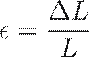
Donde es el cambio de longitud y es la longitud inicial. La pendiente de la región elástica de la curva estrés-deformación representa el módulo de Young o rigidez ( ):
Estructura Macroscópica y Clasificación Morfofuncional
Desde una perspectiva macroscópica, el hueso se organiza en dos tipos de tejidos con porosidades diferenciadas: el hueso cortical (compacto) y el hueso esponjoso (cancellous o trabecular).
El hueso cortical es altamente denso, con una porosidad menor al 15%, y forma la capa exterior de todos los huesos, siendo especialmente grueso en la diáfisis de los huesos largos para resistir momentos flectores y torsión.
En contraste, el hueso esponjoso posee una porosidad superior al 70% y se localiza principalmente en las epífisis (extremos) de los huesos largos y en el interior de las vértebras, donde su estructura de trabéculas se alinea con las líneas de estrés para absorber impactos y distribuir cargas.
Clasificación de los huesos según su morfología y función
|
Tipo de Hueso |
Características Estructurales |
Función Biomecánica Principal |
Ejemplos |
|
Largos |
Longitud > Anchura; poseen diáfisis y epífisis. |
Actúan como palancas para el movimiento. |
Fémur, Húmero, Radio. |
|
Cortos |
Forma cuboidea; predominantemente esponjosos. |
Absorción de impactos y transmisión de fuerzas. |
Carpales, Tarsales. |
|
Planos |
Capas delgadas de cortical con interior esponjoso. |
Protección y grandes áreas de inserción muscular. |
Cráneo, Escápula, Esternón. |
|
Irregulares |
Formas complejas y especializadas. |
Funciones diversas: soporte, protección medular. |
Vértebras, Isquion. |
|
Sesamoideos |
Pequeños, redondeados, embebidos en tendones. |
Modifican el ángulo de inserción y reducen fricción. |
Patela (Rótula). |
REMODELACIÓN DINÁMICA Y LEY DE WOLFF
El sistema esquelético es un tejido autorreparable que se optimiza constantemente mediante un equilibrio entre la actividad de tres tipos celulares principales: los osteoblastos, responsables de la formación y calcificación de nueva matriz ósea; los osteoclastos, células multinucleadas encargadas de la resorción y degradación del tejido viejo o dañado; y los osteocitos, células maduras que actúan como mecanosensores para dirigir el proceso de remodelación.
Este proceso está gobernado por la Ley de Wolff, que establece que el hueso adapta su arquitectura interna y externa en respuesta a las demandas mecánicas habituales.
· Adaptación al estrés: El aumento en la carga mecánica estimula la actividad osteoblástica, incrementando la densidad y el grosor óseo.
· Efecto de la inactividad: La falta de carga (como en la inmovilización o microgravedad) provoca un predominio de la resorción osteoclástica, resultando en una pérdida significativa de masa ósea y rigidez.
Este balance dinámico es vital para la homeostasis mineral y la integridad estructural, aunque tiende a declinar con el envejecimiento, lo que puede derivar en patologías como la osteoporosis, donde la tasa de resorción supera a la de depósito, aumentando críticamente la fragilidad estructural.
2.2 Sistema de eslabones del CH.
SISTEMA DE ESLABONES DEL CUERPO HUMANO
La modelización del cuerpo humano como un sistema de eslabones rígidos constituye uno de los pilares fundamentales de la ingeniería biomecánica para el análisis de la dinámica y la cinemática del movimiento.
Bajo esta concepción, el organismo no se estudia como una masa continua y deformable, lo cual incrementaría la complejidad matemática hasta niveles inmanejables, sino como una estructura coordinada compuesta por una serie de eslabones rígidos conectados mecánicamente mediante articulaciones que actúan como enlaces puntuales.
Esta simplificación, propia de la mecánica de cuerpos rígidos, asume que cada segmento corporal posee una masa fija, un centro de masa localizado en un punto invariable y un momento de inercia que permanece constante durante la ejecución del movimiento, facilitando así el cálculo de fuerzas y torques mediante técnicas de dinámica inversa.
La interacción entre estos eslabones se rige por el principio de que las fuerzas aplicadas en un segmento pueden transferirse a través de los enlaces articulares hacia segmentos adyacentes, permitiendo una coordinación motora compleja.
DEFINICIÓN Y ESTRUCTURA DE LA CADENA CINEMÁTICA
El concepto de cadena cinemática, derivado de la ingeniería mecánica, se aplica en biomecánica para describir una serie de cuerpos rígidos unidos de tal forma que el movimiento de un eslabón provoca el movimiento predecible de los demás componentes del sistema.
En el contexto biológico, una cadena cinemática se define matemáticamente como la suma de los grados de libertad (gl) permitidos por las articulaciones adyacentes que conforman el sistema, identificando así la movilidad total disponible para la realización de una habilidad motora específica.
Por ejemplo, en el análisis cinemático de una patada, el sistema puede involucrar hasta 11 grados de libertad con relación al tronco, distribuidos a lo largo de los eslabones de la cadera, la rodilla, el tobillo y los segmentos del pie.
· Eslabón Proximal: Representa el segmento más cercano al eje central o punto de origen de la cadena, usualmente con mayor masa e inercia.
· Eslabón Distal: Constituye el extremo final de la cadena, caracterizado por una menor masa y la capacidad de alcanzar altas velocidades tangenciales debido al efecto de acumulación de velocidad a lo largo de la cadena.
· Enlaces Articulares: Funcionan como los fúlcros o ejes de rotación en torno a los cuales los eslabones experimentan desplazamientos angulares.
La movilidad total de una cadena cinemática se expresa mediante la ecuación de sumatoria de grados de libertad:
Donde representa la
movilidad del sistema y corresponde a los
grados de libertad permitidos por cada articulación dentro de la cadena
de  elementos.
elementos.
Clasificación de las Cadenas Cinemáticas: Abiertas y Cerradas
En la ingeniería de la rehabilitación y el acondicionamiento físico, las cadenas cinemáticas se clasifican tradicionalmente en función de las restricciones dinámicas presentes en sus extremos, lo que determina el comportamiento mecánico del sistema y el reclutamiento muscular asociado.
Originalmente propuesto por Steindler en 1955, el término "cadena cinética" se utiliza para diferenciar los movimientos según el grado de resistencia externa aplicada al eslabón distal.
Comparativa Técnica entre Cadenas Cinemáticas
|
Tipo de Cadena |
Configuración del Eslabón Distal |
Características Mecánicas |
Ejemplo Biomecánico |
|
Abierta |
El extremo distal se mueve libremente en el espacio. |
Permite el aislamiento de articulaciones específicas y altas velocidades. |
Extensión de pierna sentado. |
|
Cerrada |
El extremo distal está fijo o restringido por una resistencia considerable. |
Genera co-activación muscular y mayores cargas compresivas articulares,. |
Sentadilla (Squat) con pies en el suelo. |
A pesar de su uso extendido en la práctica clínica, esta clasificación suele ser objeto de debate debido a la ambigüedad en la definición de "resistencia considerable", lo que ha llevado a algunos investigadores a sugerir que el análisis se centre en las fuerzas de reacción y las aceleraciones segmentarias en lugar de en una categorización binaria,.
PRINCIPIO DE INTERACCIÓN SEGMENTARIA Y TRANSFERENCIA DE ENERGÍA
El Sistema de Eslabones del Cuerpo Humano opera bajo el Principio de Interacción Segmentaria, el cual postula que las fuerzas actuantes entre los segmentos de un cuerpo vinculado pueden transferir energía de un eslabón a otro.
En movimientos de alta velocidad, como lanzamientos o golpeos, se observa una secuencia de coordinación proximal-distal donde los segmentos de mayor masa (como el tronco o el muslo) se activan primero para generar un momento angular inicial, el cual es transferido progresivamente hacia los eslabones más pequeños y distales.
Este fenómeno permite que el eslabón distal alcance velocidades lineales extremas al momento de la liberación o impacto, gracias a que la aceleración negativa del segmento proximal actúa mecánicamente para "latiguear" o impulsar el segmento distal.
En un sistema multiarticular, el momento angular total ( ) se conserva en fases aéreas y se calcula como la sumatoria de los componentes locales y remotos de cada eslabón:
Donde:
· representa el momento angular local del eslabón en torno a su propio centro de masa.
· representa el momento angular remoto del eslabón con respecto al centro de masa corporal total.
Esta arquitectura permite al ser humano optimizar la producción de trabajo mecánico mediante la biarticularidad de ciertos músculos (como el recto femoral o los isquiotibiales), los cuales pueden absorber energía en una articulación mientras realizan trabajo positivo en la articulación adyacente, actuando como puentes mecánicos que mejoran la eficiencia metabólica del sistema completo.
2.3 Articulaciones.
ARTICULACIONES
Desde una perspectiva de ingeniería bioestructural, las articulaciones representan las interfaces mecánicas o puntos de pivote entre dos o más eslabones óseos rígidos, cuya configuración anatómica y composición tisular determinan el equilibrio crítico entre la estabilidad necesaria para la transferencia de cargas y la movilidad requerida para la ejecución de patrones cinemáticos complejos.
Este sistema articular no funciona de manera aislada, sino que constituye el componente pasivo del aparato locomotor, actuando como el fúlcro sobre el cual los momentos de fuerza generados por la activación muscular se transforman en desplazamientos angulares.
La integridad de estas uniones está gobernada por la interacción de elementos restrictivos pasivos, como ligamentos y cápsulas, y elementos estabilizadores dinámicos, cuya sinergia permite que el cuerpo humano se comporte como un sistema coordinado de eslabones articulados bajo la dirección del sistema nervioso central.
Clasificación Morfofuncional de los Sistemas Articulares
El análisis de ingeniería de las articulaciones requiere una categorización basada tanto en su capacidad de restricción de movimiento (funcional) como en la naturaleza del material que constituye la unión (estructural).
Este enfoque permite modelar el comportamiento mecánico de cada unión según las demandas de carga y deformación a las que es sometida:
· Sinartrosis (Articulaciones Fibrosas): Se caracterizan por la unión de bordes óseos mediante tejido conectivo fibroso denso, lo que resulta en una movilidad mínima o nula. Mecánicamente, actúan como uniones rígidas diseñadas para la protección y la absorción limitada de energía, como en las suturas craneales o la sindesmosis tibiofibular.
· Anfiartrosis (Articulaciones Cartilaginosas): Estas uniones emplean cartílago hialino o fibrocartílago como material de enlace. Su diseño permite un grado moderado de deformabilidad elástica, lo que las convierte en elementos ideales para la distribución de cargas compresivas y la atenuación de impactos, siendo el ejemplo paradigmático los discos intervertebrales.
· Diartrosis (Articulaciones Sinoviales): Representan el nivel más alto de complejidad mecánica, permitiendo movimientos libres y amplios. Poseen una cavidad articular rellena de líquido sinovial y están encapsuladas por una membrana fibrosa, lo que minimiza el desgaste por fricción durante el movimiento relativo de las superficies óseas.
BIOMECÁNICA DE LAS ARTICULACIONES SINOVIALES Y TRIBOLOGÍA
La eficiencia de una articulación sinovial depende de su capacidad para operar bajo condiciones de fricción extremadamente bajas, frecuentemente inferiores a las de una cuchilla de patín sobre hielo.
Este fenómeno se explica a través de la tribología, el estudio de la fricción, el desgaste y la lubricación en sistemas en contacto.
El cartílago articular, un material compuesto hidratado (composite), actúa junto con el líquido sinovial para redistribuir la tensión de contacto sobre un área de superficie mayor, reduciendo así la presión aplicada sobre el hueso subcondral.
El coeficiente de fricción ( ) en estas interfaces biológicas se mantiene en rangos de 0.01 a 0.04 gracias a un mecanismo de lubricación hidrodinámica y de capa límite.
La fuerza de fricción ( ) se define por la ecuación:
Donde representa la fuerza normal o carga perpendicular a la superficie articular.
El líquido sinovial exhibe un comportamiento reológico no newtoniano, específicamente tixotrópico: su viscosidad disminuye conforme aumenta la tasa de cizallamiento (movimiento rápido), facilitando la movilidad, mientras que a velocidades bajas actúa como un amortiguador altamente viscoso para soportar cargas estáticas.
Geometría de Superficies y Grados de Libertad (gl)
En ingeniería, la movilidad de una articulación se cuantifica mediante los grados de libertad, que representan el número de coordenadas independientes necesarias para describir completamente la posición de un segmento en el espacio.
Las articulaciones sinoviales se subdividen según la geometría de sus superficies articulares y los ejes de rotación que permiten:
Configuración Mecánica de las Articulaciones Sinoviales
|
Tipo de Articulación |
Configuración Geométrica |
Grados de Libertad |
Ejemplo Biomecánico |
|
Plana (Artrodia) |
Superficies esencialmente planas; deslizamiento no axial. |
0 (No axial) |
Intercarpianas de la muñeca. |
|
Bisagra (Gínglimo) |
Cilindro que ajusta en una concavidad; movimiento uniaxial. |
1 (Uniaxial) |
Codo (Humero-ulnar) y Tobillo. |
|
Pivote (Trocoide) |
Proceso óseo redondeado en un anillo; rotación uniaxial. |
1 (Uniaxial) |
Atlanto-axial media (C1-C2). |
|
Condilar |
Superficie ovoide en cavidad elíptica; biaxial. |
2 (Biaxial) |
Articulaciones de los nudillos (MCF). |
|
Silla de Montar |
Superficies recíprocamente cóncavas y convexas; biaxial. |
2 (Biaxial) |
Carpometacarpiana del pulgar. |
|
Enartrosis |
Esfera en receptáculo; movimiento multiaxial. |
3 (Triaxial) |
Cadera y Hombro. |
La sumatoria de estos grados de libertad a través de eslabones sucesivos conforma una cadena cinemática, donde el movimiento lineal resultante del extremo distal es función de las rotaciones angulares acumuladas.
ESTABILIDAD ARTICULAR: POSICIONES CERRADA Y ABIERTA
La estabilidad de una articulación no es constante, sino que varía dinámicamente según su orientación angular. Se definen dos estados mecánicos fundamentales para la integridad estructural de la unión:
1. Posición Cerrada (Close-packed): Es la configuración de máxima congruencia donde las superficies articulares encajan de forma óptima y los ligamentos capsulares están en su máxima tensión. En este estado, la articulación es sumamente estable pero vulnerable a fracturas ante cargas extremas, ya que las fuerzas viajan a través de ella sin la atenuación del líquido sinovial (p. ej., extensión completa de la rodilla).
2. Posición Abierta (Loose-packed): Presenta una menor área de contacto superficial, permitiendo un mayor volumen de líquido sinovial y facilitando el rodamiento y deslizamiento. Aunque es mecánicamente menos estable, su movilidad reduce el riesgo de lesiones traumáticas directas.
ANÁLISIS DINÁMICO DE LA CARGA ARTICULAR
Para calcular la carga neta que actúa a través de una articulación, se emplea el análisis de dinámica inversa, basado en las leyes de Newton-Euler.
La fuerza de reacción articular ( ) es la resultante de las fuerzas externas (como la gravedad y la reacción del suelo) y las fuerzas de inercia de los segmentos, mientras que la fuerza real "hueso sobre hueso" debe incluir adicionalmente la tensión generada por los músculos que cruzan la unión.
En un sistema bidimensional, el equilibrio de momentos ( ) en torno al centro de masa de un segmento se expresa como:
Donde es el momento de
inercia del segmento y  es su aceleración
angular. Este cálculo permite determinar el poder muscular (
es su aceleración
angular. Este cálculo permite determinar el poder muscular ( ) en la articulación, definido como el producto del momento neto y la velocidad
angular (
) en la articulación, definido como el producto del momento neto y la velocidad
angular ( ):
):
Siendo un valor positivo representativo de un trabajo concéntrico (generación de energía) y un valor negativo representativo de un trabajo excéntrico (absorción de energía).
2.4 Biomecánica de huesos, cartílagos, ligamentos y tendones.
BIOMECÁNICA DE HUESOS, CARTÍLAGOS, LIGAMENTOS Y TENDONES
El análisis del aparato locomotor desde la ingeniería biomecánica implica el estudio detallado de las propiedades mecánicas intrínsecas de los tejidos biológicos, los cuales son fundamentales para entender la respuesta del cuerpo humano ante cargas externas e internas.
A diferencia de los materiales inertes utilizados en la ingeniería civil o mecánica tradicional, los tejidos musculoesqueléticos como el hueso, el cartílago, los ligamentos y los tendones son estructuras vivas, dinámicas, anisotrópicas y viscoelásticas que poseen una capacidad intrínseca de remodelación y adaptación funcional en respuesta a las demandas mecánicas.
El comportamiento de estos tejidos se evalúa principalmente mediante la relación entre la fuerza aplicada para deformar la estructura (estrés o tensión) y el cambio de forma resultante (deformación o elongación).
FUNDAMENTOS DE ANÁLISIS ESTRUCTURAL Y REOLOGÍA TISULAR
La caracterización mecánica de cualquier tejido biológico comienza con la determinación de su curva de tensión-deformación.
En este contexto, el estrés o tensión ( ) se define como la carga o fuerza aplicada por unidad de área de sección transversal, cuya unidad en el Sistema Internacional es el Pascal ( ).
Por su parte, la deformación o elongación ( )
representa el cambio relativo en la longitud del material respecto a su
longitud inicial o en reposo, siendo una magnitud adimensional.
)
representa el cambio relativo en la longitud del material respecto a su
longitud inicial o en reposo, siendo una magnitud adimensional.
Las ecuaciones fundamentales que rigen este comportamiento inicial son:
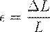
Donde:
· es la fuerza aplicada en Newtons (N).
· es el área de la sección transversal ( ).
· es el cambio de longitud y es la longitud inicial.
La pendiente de la región lineal de esta curva define el módulo elástico o módulo de Young ( ), que cuantifica la rigidez del material.
La capacidad de almacenamiento de energía mecánica ( ) de un tejido es proporcional al área bajo la curva de tensión-deformación, calculándose como:
BIOMECÁNICA DEL TEJIDO ÓSEO
El hueso es un material compuesto (composite) altamente especializado, integrado por una fase mineral inorgánica (principalmente cristales de hidroxiapatita cálcica) que proporciona dureza y resistencia a la compresión, y una fase orgánica (fibras de colágeno) que aporta flexibilidad y resistencia a la tensión.
Desde una perspectiva macroestructural, se clasifica en hueso cortical (compacto), con una porosidad inferior al 15%, y hueso esponjoso (cancellous), cuya porosidad supera el 70% y que está diseñado para la absorción de impactos y distribución de tensiones.
El comportamiento mecánico del hueso presenta dos características fundamentales para el análisis de ingeniería:
· Anisotropía: Sus propiedades mecánicas (rigidez y resistencia) varían significativamente según la dirección de la carga aplicada. Los huesos largos son máximamente resistentes a cargas aplicadas en dirección longitudinal y mínimos ante fuerzas de cizallamiento transversal.
· Viscoelasticidad: La respuesta del tejido depende directamente de la tasa o velocidad de aplicación de la carga. Un hueso cargado rápidamente exhibe una mayor rigidez y puede absorber más energía antes de la fractura en comparación con una carga aplicada lentamente.
El hueso opera bajo la Ley de Wolff, que establece que el tejido óseo se deposita en áreas de alta tensión y se resorbe en áreas de baja demanda mecánica.
Este principio se puede modelar mediante ecuaciones de remodelación interna donde el tensor de elasticidad de cuarto orden ( ) es una función de la historia de carga:
BIOMECÁNICA DEL CARTÍLAGO ARTICULAR
El cartílago articular (hialino) es un tejido firme pero flexible, compuesto por condrocitos inmersos en una matriz extracelular rica en agua (60-80%), colágeno y proteoglicanos.
Su función primordial es actuar como un amortiguador hidráulico y proporcionar superficies de baja fricción para el movimiento articular. Debido a su naturaleza avascular, su nutrición depende exclusivamente de la difusión de nutrientes a través del líquido sinovial durante los ciclos de carga y descarga.
Las propiedades tribológicas del cartílago son excepcionales, con coeficientes de fricción ( ) reportados entre 0.01 y 0.04, lo cual es significativamente menor que el del hielo ( a ).
Esta baja fricción se atribuye al efecto de película exprimida (squeeze-film effect), donde el líquido sinovial es forzado a salir del cartílago poroso bajo cargas de compresión para lubricar la interfaz. El cartílago es viscoelástico y exhibe una deformación instantánea ante cargas bajas, volviéndose más rígido conforme aumenta la velocidad de aplicación de la carga.
BIOMECÁNICA DE LIGAMENTOS Y TENDONES
Los ligamentos y tendones son tejidos conectivos densos compuestos predominantemente por fibras de colágeno tipo I dispuestas en arreglos paralelos o casi paralelos. Los tendones, que conectan el músculo al hueso, están optimizados para transmitir fuerzas de tracción y soportar grandes tensiones (resistencia última de aproximadamente 100 MPa). Los ligamentos, que unen hueso con hueso, restringen el movimiento articular anormal y proporcionan retroalimentación propioceptiva crítica.
Ambos tejidos presentan tres fenómenos viscoelásticos esenciales para la integridad del sistema locomotor:
1. Fluencia (Creep): Elongación gradual bajo una carga de tensión constante.
2. Relajación de estrés: Disminución de la tensión interna a lo largo del tiempo cuando el tejido se mantiene a una longitud fija.
3. Histéresis: Pérdida de energía mecánica (en forma de calor) durante los ciclos de carga y descarga, lo que previene lesiones por rebote excesivo.
Propiedades Mecánicas Comparativas de los Tejidos Estructurales
|
Tejido |
Carga Principal |
Resistencia (MPa) |
Modulo Elástico (GPa) |
Deformación Máxima (%) |
|
Hueso Cortical |
Compresión |
~170 - 200 |
~17 - 18 |
~2 |
|
Hueso Esponjoso |
Multidireccional |
~2 - 20 |
~0.1 - 1.0 |
~7 |
|
Tendón |
Tensión |
~50 - 120 |
~1.0 - 1.5 |
~10 |
|
Ligamento |
Tensión |
~20 - 60 |
~0.5 - 1.0 |
~8 - 10 |
|
Cartílago |
Compresión/Cizalla |
~3.4 - 20 |
~0.01 - 0.02 |
Alta (Varía) |
Nota: Las propiedades mecánicas del hueso y los tejidos blandos están sujetas a variaciones según la edad, la historia de carga y el estado de hidratación.
2.5 Biomecánica de los músculos.
BIOMECÁNICA DE LOS MÚSCULOS
El músculo esquelético representa el componente activo fundamental del aparato locomotor, funcionando como un transductor mecatrónico biológico de alta eficiencia que convierte la energía química almacenada en el trifosfato de adenosina (ATP) en fuerza mecánica y trabajo.
Desde una perspectiva de ingeniería, el tejido muscular es un material complejo, excitable y adaptable, cuya caracterización reológica incluye propiedades de irritabilidad, contractilidad, extensibilidad y elasticidad.
A diferencia de los elementos pasivos descritos anteriormente, el músculo posee la capacidad única de modificar su rigidez y longitud de forma dinámica bajo el control del sistema nervioso central, orquestando movimientos segmentarios a través de la aplicación de tensiones sobre el sistema de palancas óseas.
Arquitectura Muscular y Determinantes de la Fuerza
La capacidad de generación de fuerza de un músculo no depende únicamente de su masa total, sino de su arquitectura interna, específicamente de la orientación y longitud de sus fibras en relación con el eje de tracción. La ingeniería biomecánica clasifica los músculos principalmente en configuraciones paralelas (fusiformes, en banda, convergentes) y peniformes (unipenados, bipenados, multipenados).
· Músculos Paralelos: Las fibras se alinean con el eje longitudinal del músculo, lo que favorece un mayor rango de acortamiento y altas velocidades de contracción, sacrificando la magnitud de la fuerza neta.
· Músculos Peniformes: Las fibras se insertan de forma diagonal en un tendón central. Aunque esto limita el rango de movimiento lineal, permite empaquetar un mayor número de fibras en un volumen determinado, incrementando la capacidad de carga.
El parámetro crítico para predecir la tensión máxima isométrica ( ) es el Área de Sección Transversal Fisiológica (PCSA), la cual, a diferencia del área anatómica, considera el ángulo de penación ( ) para sumar la sección de todas las fibras en un plano perpendicular a su dirección.
La ecuación para calcular el PCSA es:
Donde:
· : masa del músculo (g).
· : ángulo de penación superficial.
· : densidad del tejido muscular ( ).
· : longitud de la fibra muscular (mm).
MECÁNICA DE LA CONTRACCIÓN A NIVEL DEL SARCÓMERO
La unidad funcional contráctil es el sarcómero, cuya dinámica se explica mediante la Teoría del Filamento Deslizante.
Bajo estímulo neural, la liberación de iones de calcio ( ) desde el retículo sarcoplásmico permite que las cabezas de miosina formen puentes cruzados con los filamentos de actina, traccionándolos hacia el centro de la unidad.
La generación de fuerza en un músculo completo se regula mediante dos mecanismos de control discreto y continuo:
1. Reclutamiento de Unidades Motoras: Se rige por el Principio de Tamaño de Henneman, activando primero las unidades de bajo umbral (fibras tipo I, lentas y resistentes) y progresivamente las de alto umbral (fibras tipo IIb, rápidas y potentes).
2. Codificación de Frecuencia (Rate Coding): Modulación de la tasa de disparo de potenciales de acción. A frecuencias elevadas, los twitches individuales se suman hasta alcanzar un estado de tetania, donde la producción de fuerza es máxima y constante.
Modelado Mecánico: El Modelo de Hill
Para el análisis computacional de la dinámica musculoesquelética, se utiliza predominantemente el Modelo Fenomenológico de Hill, que divide a la unidad musculotendinosa en tres componentes fundamentales que interactúan para determinar la tensión total ( ):
· Componente Contráctil (CC): Representa la fuente activa de fuerza (actina-miosina).
· Componente Elástico en Serie (SEC): Modelado principalmente por el tendón y la elasticidad inherente de los puentes cruzados. Actúa como un muelle que retrasa la transmisión de fuerza pero permite el almacenamiento de energía.
· Componente Elástico en Paralelo (PEC): Representado por las membranas de tejido conectivo (epimisio, perimisio, endomisio) y el sarcolema. Proporciona resistencia pasiva cuando el músculo se estira más allá de su longitud de reposo ( ).
Propiedades de los Tipos de Fibras Musculares
|
Característica |
Tipo I (Lenta) |
Tipo IIa (Rápida Oxidativa) |
Tipo IIb (Rápida Glucolítica) |
|
Velocidad de contracción |
Lenta |
Rápida |
Muy Rápida |
|
Resistencia a la fatiga |
Alta |
Moderada |
Baja |
|
Capacidad metabólica |
Oxidativa |
Oxidativa-Glucolítica |
Glucolítica |
|
Diámetro de la fibra |
Pequeño |
Intermedio |
Grande |
RELACIONES FUNDAMENTALES DE RENDIMIENTO MUSCULAR
El rendimiento de un músculo está intrínsecamente limitado por dos relaciones mecánicas que definen su espacio de operación:
A. Relación Fuerza-Longitud
La tensión activa es máxima en la longitud de reposo ( ), donde el solapamiento entre actina y miosina es óptimo para la formación de puentes cruzados. Si el músculo se acorta excesivamente (insuficiencia activa) o se estira demasiado (descendiendo por la curva activa), la fuerza decae. Sin embargo, en longitudes extremas, el PEC compensa la pérdida de fuerza activa mediante un incremento exponencial de la tensión pasiva.
B. Relación Fuerza-Velocidad
En acciones concéntricas (acortamiento), la fuerza disminuye de forma hiperbólica conforme aumenta la velocidad de contracción, debido a la tasa limitada de ciclado de los puentes cruzados.
Inversamente, en acciones excéntricas (alargamiento), el músculo es capaz de resistir fuerzas significativamente superiores a su máximo isométrico.
La ecuación característica de Hill para la fase concéntrica es:
Donde:
· : Tensión muscular activa.
· : Velocidad de acortamiento.
· : Máxima tensión isométrica.
· : Constantes determinadas experimentalmente.
DINÁMICA DE LA POTENCIA Y EL TRABAJO
El trabajo mecánico muscular ( )
se define por el producto de la fuerza y el desplazamiento, diferenciándose en
trabajo positivo (acción concéntrica) y trabajo negativo (acción excéntrica).
)
se define por el producto de la fuerza y el desplazamiento, diferenciándose en
trabajo positivo (acción concéntrica) y trabajo negativo (acción excéntrica).
La potencia muscular ( ), variable crítica
en el rendimiento deportivo de alta intensidad, se define como:
), variable crítica
en el rendimiento deportivo de alta intensidad, se define como:
En el análisis de rotación articular, la potencia se calcula como el producto del torque neto ( ) y la velocidad angular ( ):
o Si es positiva: El torque y la velocidad tienen la misma dirección (acción concéntrica; el músculo genera energía).
o Si es negativa: El torque y la velocidad tienen direcciones opuestas (acción excéntrica; el músculo absorbe energía).
Finalmente, el Ciclo de Estiramiento-Acortamiento (SSC) representa una estrategia neuromuscular altamente eficiente donde una fase excéntrica rápida precede a una concéntrica, permitiendo la recuperación de energía elástica almacenada en el SEC y la facilitación por el reflejo miotático, resultando en una potencia de salida significativamente superior a la de una contracción concéntrica aislada.
3. Modelado estático, cinemática y dinámico.
3.1 Determinación de fuerzas. Sistemas estáticamente determinados e indeterminados.
DETERMINACIÓN DE FUERZAS
El análisis de la estática biomecánica constituye la piedra angular para comprender la integridad estructural del aparato locomotor humano en condiciones de equilibrio.
Desde una perspectiva de ingeniería mecánica aplicada, la estática se define como la rama de la mecánica que estudia los sistemas físicos en reposo o que se desplazan a una velocidad constante, lo que implica, por definición newtoniana, la ausencia de aceleración neta.
En este estado de equilibrio, las fuerzas y momentos internos deben contrarrestar con precisión las cargas externas y la gravedad para evitar cambios en el estado cinemático del segmento corporal bajo estudio.
El proceso analítico comienza invariablemente con la construcción de un Diagrama de Cuerpo Libre (DCL), una técnica de modelado esencial que consiste en aislar conceptualmente un sistema o segmento del resto del organismo para identificar y representar vectorialmente todas las fuerzas externas que actúan sobre su frontera.
Condiciones fundamentales del equilibrio estático
Para que un eslabón rígido del cuerpo humano se considere en equilibrio estático absoluto, se deben satisfacer rigurosamente las leyes de Newton aplicadas a sistemas de partículas y cuerpos rígidos.
Matemáticamente, esto se traduce en que la suma vectorial de todas las fuerzas externas ( ) y la suma de todos los momentos o torques ( ) respecto a cualquier eje de rotación deben ser iguales a cero.
Estas condiciones se expresan mediante las siguientes ecuaciones fundamentales de equilibrio:
En un análisis bidimensional (2D) sobre el
plano cartesiano , estas ecuaciones
vectoriales se descomponen en tres ecuaciones escalares independientes que
gobiernan la traslación y la rotación en torno al eje  :
:
· (Equilibrio de fuerzas en el eje horizontal).
· (Equilibrio de fuerzas en el eje vertical).
· (Equilibrio de momentos en torno al eje perpendicular al plano).
Si el análisis se extiende a un volumen tridimensional (3D), el número de ecuaciones de equilibrio aumenta a seis (tres de fuerza y tres de momento), lo que incrementa la complejidad del modelado pero proporciona una descripción completa de la estabilidad articular.
Sistemas estáticamente determinados
Un sistema mecánico se clasifica como estáticamente determinado cuando el número de fuerzas o incógnitas desconocidas es exactamente igual al número de ecuaciones de equilibrio disponibles derivadas de las leyes de Newton.
En este escenario, existe una solución única y trivial para el sistema de ecuaciones lineales, permitiendo calcular con precisión las reacciones articulares y las fuerzas musculares netas.
No obstante, es imperativo notar que en la biomecánica anatómica real, los sistemas estáticamente determinados son extremadamente raros y suelen ser el resultado de simplifiaciones deliberadas del analista, como la consolidación de varios grupos musculares en un único "músculo equivalente" para facilitar el cálculo.
Comparativa de Sistemas de Fuerzas en Estática Biomecánica
|
Tipo de Sistema |
Características |
Ecuaciones Disponibles (2D) |
Capacidad de Resolución |
|
Colineal |
Fuerzas que actúan sobre una misma línea de acción. |
(una sola ecuación lineal). |
Determinada si hay 1 incógnita. |
|
Concurrente |
Fuerzas cuyas líneas de acción se intersectan en un único punto. |
, (dos ecuaciones). |
Determinada si hay 2 incógnitas. |
|
No Concurrente |
Fuerzas que no coinciden en un punto, pudiendo generar rotación. |
, , (tres ecuaciones). |
Determinada si hay 3 incógnitas. |
Sistemas estáticamente indeterminados e indeterminación biomecánica
La complejidad intrínseca del sistema musculoesquelético radica en su redundancia funcional. La mayoría de las articulaciones del cuerpo humano están cruzadas por múltiples músculos y ligamentos que pueden producir o estabilizar un mismo movimiento articular.
Cuando el número de incógnitas (fuerzas musculares individuales, tensiones ligamentosas, fuerzas de contacto óseo) supera el número de ecuaciones de equilibrio independientes, el sistema se denomina estáticamente indeterminado.
Matemáticamente, esto significa que existen infinitas combinaciones de activaciones musculares que podrían satisfacer las condiciones de equilibrio estático para una postura dada.
· Redundancia Muscular: Un ejemplo clásico es la flexión del codo, donde el bíceps braquial, el braquial anterior y el braquiorradial actúan sinérgicamente. Solo con las ecuaciones de la estática, no es posible determinar la contribución individual de cada uno de estos músculos.
· Indeterminación en el Modelado: Debido a que no podemos medir directamente las fuerzas musculares in vivo sin métodos altamente invasivos, el analista se enfrenta a un problema de "subespecificación".
· Estimación de Cargas Articulares: La indeterminación afecta profundamente la estimación de las fuerzas de contacto óseo (bone-on-bone), ya que la co-contracción de músculos antagonistas aumenta la carga articular sin alterar el momento neto.
Estrategias para resolver la indeterminación biomecánica
Para superar este obstáculo analítico y obtener estimaciones precisas de las fuerzas internas, la bioingeniería recurre a técnicas avanzadas que trascienden la estática clásica.
Entre los métodos más destacados se encuentran los siguientes:
1. Métodos de Reducción: Se basan en asunciones anatómicas simplificadoras, como asignar toda la fuerza a un único músculo dominante o agrupar músculos por su área de sección transversal fisiológica (PCSA) para reducir el número de variables hasta que coincida con el número de ecuaciones.
2. Métodos de Optimización: Se fundamentan en la premisa de que el sistema nervioso central coordina el movimiento minimizando alguna función de costo fisiológico, como el gasto energético total, la fatiga muscular acumulada o el estrés sobre las superficies articulares.
3. Integración Electromiográfica (EMG): Se utiliza el nivel de activación eléctrica de los músculos como una variable adicional para informar el modelo sobre la distribución de las tensiones internas en tiempo real.
En conclusión, la determinación de fuerzas en el cuerpo humano requiere comprender que, mientras las leyes de la estática dictan las condiciones necesarias para el equilibrio, la arquitectura biológica impone un desafío de indeterminación que solo puede resolverse mediante modelos matemáticos que consideren tanto la física mecánica como la optimización neurofisiológica.
3.2 Métodos para la medida de fuerzas.
Métodos para la medida de fuerzas
La cuantificación de las magnitudes vectoriales cinéticas en el estudio del movimiento humano representa uno de los mayores desafíos técnicos en la ingeniería biomédica contemporánea.
A diferencia de los parámetros cinemáticos, que pueden ser capturados mediante sistemas ópticos, las fuerzas son entidades invisibles que solo pueden inferirse a través de sus efectos sobre los cuerpos o medirse mediante la transducción de fenómenos físicos asociados, como la deformación de materiales elásticos o la generación de potenciales eléctricos.
En la práctica ingenieril aplicada a la biomecánica, las metodologías de medición se dividen fundamentalmente en sistemas de registro de fuerzas externas (fuerzas de reacción del suelo y presión plantar) y métodos para la estimación de fuerzas internas (tensiones tendinosas y reacciones articulares).
TRANSDUCCIÓN Y SENSORES MECÁNICOS
La medición directa de la fuerza se fundamenta en el principio de convertir una carga mecánica en un desplazamiento medible o en una señal eléctrica proporcional.
Los transductores de fuerza más utilizados en laboratorios de biomecánica son los basados en galgas extensiométricas (strain gauges) y cristales piezoeléctricos.
· Galgas Extensiométricas: Operan bajo el principio de que la resistencia eléctrica de un conductor varía con su deformación mecánica. Cuando se aplica una fuerza a un material de propiedades elásticas conocidas (módulo de Young), la galga adherida experimenta una deformación ( ) que se traduce en un cambio de voltaje mediante un puente de Wheatstone.
· Transductores Piezoeléctricos: Estos sensores generan una carga eléctrica cuando se someten a un estrés mecánico. Son especialmente valiosos para medir fuerzas dinámicas de alta frecuencia, como los impactos durante el contacto inicial del talón en la carrera, aunque presentan limitaciones para mediciones estáticas prolongadas debido a la deriva de la señal.
· Resistores Sensibles a la Fuerza (FSR): Son polímeros conductores cuya resistencia disminuye de forma no lineal al aumentar la presión aplicada. Debido a su naturaleza delgada y flexible, son ideales para su integración en plantillas instrumentadas, aunque requieren una calibración rigurosa debido a su histéresis y dependencia de la temperatura.
Plataformas de Fuerza y Cinética Externa
El instrumento estándar de oro para el análisis cinético de la locomoción es la plataforma de fuerza (o placa de fuerza).
Estos dispositivos son plataformas rígidas empotradas en el suelo que registran los tres componentes ortogonales del vector de la Fuerza de Reacción del Suelo (FRS): vertical ( ), anteroposterior ( ) y mediolateral ( ), así como los momentos de torsión resultantes.
Variables Cinéticas Registradas por Plataformas de Fuerza
|
Variable |
Eje de Acción |
Significado Fisiológico |
|
Fuerza Vertical ( ) |
Craneocaudal |
Refleja la aceleración del centro de masa contra la gravedad. |
|
Fuerza Anteroposterior ( ) |
Sagital |
Componente de cizallamiento responsable del frenado y la propulsión. |
|
Fuerza Mediolateral ( ) |
Coronal |
Indica la estabilidad lateral y el control del equilibrio. |
|
Centro de Presión (COP) |
Plano |
Punto de aplicación de la fuerza resultante en la base de soporte. |
La relación matemática fundamental que rige el uso de estos sistemas es la segunda ley de Newton, que permite relacionar la fuerza neta con la aceleración del centro de masa ( ) del sistema:
Donde la aceleración vertical ( ) puede calcularse considerando la fuerza de reacción vertical ( ) y el peso corporal ( ):
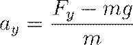
CUANTIFICACIÓN DE LA PRESIÓN PLANTAR (PEDOBAROGRAFÍA)
A diferencia de las plataformas de fuerza, que proporcionan un único vector resultante, los sistemas de pedobarografía utilizan matrices de miles de sensores diminutos para describir la distribución espacial de la carga bajo la superficie plantar.
Estos sistemas pueden ser plataformas de presión fijas o plantillas electrónicas que permiten el monitoreo inalámbrico durante actividades de la vida diaria.
La presión ( ) se define como el
cociente entre la fuerza externa ( ) y el área ( ) sobre la cual
actúa:
) se define como el
cociente entre la fuerza externa ( ) y el área ( ) sobre la cual
actúa:
Este análisis es crucial en la práctica clínica para identificar zonas de hiperpresión que predisponen a ulceraciones en pacientes diabéticos o para evaluar la eficacia de órtesis plantares.
ESTIMACIÓN DE FUERZAS INTERNAS: DINÁMICA INVERSA E IN VIVO
La medición de fuerzas dentro del cuerpo humano (como la tensión en el ligamento cruzado anterior o la carga en la cabeza femoral) es extremadamente compleja.
Existen dos abordajes principales:
1. Transductores In Vivo: Se han realizado estudios experimentales implantando quirúrgicamente transductores de fuerza directamente en tendones, como el de Aquiles. Se han registrado fuerzas pico de hasta 12.5 veces el peso corporal durante la carrera a 6 m/s, lo que evidencia las enormes demandas mecánicas del tejido biológico.
2. Dinámica Inversa: Es un proceso computacional que utiliza datos cinemáticos (posiciones y aceleraciones de los eslabones corporales) y datos cinéticos externos (de plataformas de fuerza) para resolver las ecuaciones de movimiento segmento por segmento. Comenzando por el pie, el modelo calcula secuencialmente las fuerzas de reacción articular y los momentos musculares netos en el tobillo, la rodilla y la cadera.
3. Electromiografía (EMG) como Indicador de Fuerza: Aunque la EMG mide los potenciales de acción musculares y no la fuerza per se, existe una relación relativamente lineal entre la amplitud de la señal EMG rectificada e integrada y la fuerza producida, pero estrictamente bajo condiciones de contracción isométrica. En movimientos dinámicos, factores como la longitud del músculo y la velocidad de contracción distorsionan esta relación, convirtiendo a la EMG en una técnica mayoritariamente semicuantitativa.
3.3 Análisis del movimiento mediante fotogrametría.
ANÁLISIS DEL MOVIMIENTO MEDIANTE FOTOGRAMETRÍA
El análisis cinemático del movimiento humano, fundamentado en la descripción de los componentes espaciales y temporales sin considerar las fuerzas que los originan, encuentra en la fotogrametría su herramienta cuantitativa más robusta. Esta disciplina, a menudo denominada videografía o cinematografía en el contexto biomecánico, consiste en la captura de posiciones segmentarias a través de imágenes secuenciales para su posterior transformación en coordenadas numéricas.
El proceso metodológico comienza con la grabación del sujeto mediante sistemas ópticos que registran el desplazamiento de puntos de interés, permitiendo una representación completa, objetiva y precisa de la actividad motora. En la práctica de ingeniería biomédica, este análisis permite cuantificar rangos de movimiento, velocidades de ejecución y aceleraciones segmentarias que son imperceptibles para la observación cualitativa directa. La precisión de estos sistemas depende críticamente de la resolución temporal y espacial del equipo utilizado, así como de la correcta implementación de protocolos de calibración y digitalización.
ARQUITECTURA DE LOS SISTEMAS DE CAPTURA Y TIPOLOGÍA DE TRANSDUCTORES ÓPTICOS
Existen diversas tecnologías para la adquisición de datos cinemáticos, las cuales varían en complejidad y costo, pero todas comparten el objetivo de registrar la trayectoria de marcadores anatómicos. Los sistemas de video de alta velocidad operan capturando imágenes a frecuencias significativamente superiores a las cámaras comerciales, permitiendo "congelar" movimientos balísticos como impactos o lanzamientos. Por otro lado, los sistemas optoelectrónicos han revolucionado el área al permitir el seguimiento automático de marcadores, eliminando la necesidad de digitalización manual cuadro por cuadro. Estos sistemas se clasifican principalmente según la naturaleza de sus marcadores y el método de detección lumínica:
· Sistemas de Marcadores Pasivos: Utilizan esferas recubiertas de material retrorreflectante que devuelven la luz infrarroja emitida por anillos de diodos (LED) colocados alrededor del lente de la cámara. Su principal ventaja es que el sujeto no requiere cables, aunque son susceptibles a la oclusión o al intercambio accidental de etiquetas por parte del software de seguimiento.
· Sistemas de Marcadores Activos: Emplean diodos emisores de luz (LED) colocados directamente sobre el cuerpo del sujeto que se iluminan de forma secuencial y sincronizada. Esto permite que el sistema identifique cada marcador sin ambigüedad alguna, eliminando errores de identificación en movimientos complejos, aunque los cables necesarios pueden interferir con la marcha natural del individuo.
· Sistemas Sin Marcadores (Markerless): Basados en algoritmos de visión artificial y aprendizaje profundo que identifican los centros articulares directamente de la silueta del video, eliminando el error de deslizamiento de la piel sobre el hueso.
Comparativa de Parámetros Técnicos en Sistemas Ópticos de Movimiento
|
Tecnología |
Frecuencia Típica (Hz) |
Método de Identificación |
Requisitos del Sujeto |
|
Video Convencional |
24 - 30 |
Digitalización manual / Contraste |
Mínimos |
|
Video Alta Velocidad |
60 - 200 (hasta 20,000) |
Digitalización manual o automática |
Colocación de marcadores |
|
Sistemas Optoeléctricos |
60 - 500 |
Seguimiento automático de coordenadas |
Marcadores activos o pasivos |
PROCESAMIENTO DE SEÑALES Y RECONSTRUCCIÓN TRIDIMENSIONAL
La reconstrucción de la posición de un punto en un espacio tridimensional requiere que este sea capturado simultáneamente por al menos dos cámaras calibradas.
La herramienta matemática fundamental para este propósito es la Transformación Lineal Directa (DLT), un algoritmo que construye un set de ecuaciones matriciales para correlacionar las coordenadas bidimensionales de cada plano de imagen con las coordenadas reales ( ) del laboratorio.
Previo a la captura, es indispensable realizar una calibración del volumen de captura mediante el uso de objetos geométricos de dimensiones conocidas, lo que permite al software definir el origen y la orientación de los ejes globales.
Además, para evitar el fenómeno de aliasing o pérdida de información crítica, el índice de muestreo debe satisfacer el teorema de Nyquist-Shannon:
Donde es la frecuencia de muestreo y es la frecuencia máxima contenida en la señal del movimiento.
Si la frecuencia es insuficiente, se producen errores de distorsión que impiden recuperar la trayectoria original. Una vez obtenidas las trayectorias en bruto, los datos deben ser filtrados digitalmente (usualmente con filtros Butterworth de cuarto orden) para eliminar el ruido de alta frecuencia introducido por la vibración de los marcadores o errores de digitalización, el cual se amplifica exponencialmente durante el proceso de derivación numérica.
DERIVACIÓN NUMÉRICA Y CINEMÁTICA SEGMENTARIA
Tras la obtención de la posición ( ) como función del tiempo ( ), el analista utiliza la diferenciación para calcular los parámetros cinemáticos derivados. Debido a que los datos se recogen a intervalos discretos (cuadros de video), se emplea habitualmente el Método de la Primera Diferencia Central para alinear temporalmente las derivadas con las posiciones originales.
Las ecuaciones fundamentales para la velocidad ( ) y la aceleración ( ) en un marco de referencia de dos dimensiones son:
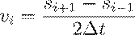
· Velocidad Instantánea: Representa el límite de la velocidad media cuando el intervalo de tiempo tiende a cero, visualizándose gráficamente como la pendiente de la línea tangente a la curva posición-tiempo.
· Aceleración: Indica la tasa de cambio de la velocidad y es proporcional a las fuerzas netas aplicadas al sistema según la segunda ley de Newton.
· Integración: Proceso opuesto a la diferenciación; el área bajo la curva de velocidad representa el desplazamiento neto, mientras que el área bajo la curva de aceleración indica el cambio total en la velocidad del segmento.
Finalmente, el análisis del movimiento mediante fotogrametría no solo se limita a traslaciones lineales, sino que incluye la cinemática angular mediante el cálculo de ángulos absolutos de los segmentos y ángulos relativos articulares.
Estos datos son el insumo principal para los modelos de eslabones rígidos y el abordaje de dinámica inversa, permitiendo inferir las cargas internas que rigen la locomoción humana.
3.4 Definición del modelo de eslabones del CH.
DEFINICIÓN DEL MODELO DE ESLABONES DEL CUERPO HUMANO (CH)
El modelado del cuerpo humano como un sistema de eslabones rígidos (o link segment model) constituye una de las abstracciones cinemáticas más potentes y fundamentales en la bioingeniería moderna. Este enfoque conceptualiza la anatomía humana, caracterizada por su deformabilidad y complejidad viscoelástica, como una cadena de segmentos mecánicamente rígidos conectados entre sí mediante articulaciones de perno o pivotes idealizados. Desde una perspectiva de ingeniería mecánica, esta simplificación permite la aplicación sistemática de las leyes de movimiento de Newton y Euler para describir la locomoción y la manipulación de objetos, transformando un sistema biológico hiper-redundante en un modelo matemático manejable para el análisis cinético y cinemático.
FUNDAMENTACIÓN Y SUPUESTOS MECÁNICOS DEL MODELO
Para que el análisis mediante un sistema de eslabones sea físicamente viable y computacionalmente eficiente, la biomecánica clásica establece una serie de asunciones críticas que definen la frontera entre la realidad biológica y el modelo de ingeniería. Estos supuestos, aunque sacrifican cierta precisión microscópica, proporcionan una robustez macroscópica esencial para la dinámica inversa y el diseño de prótesis.
· Rigidez Segmentaria: Se asume que cada segmento corporal (brazo, muslo, tronco) es un cuerpo perfectamente rígido cuya forma no se altera por la acción de fuerzas de compresión, tensión o torsión durante el movimiento.
· Articulaciones de Pivote sin Fricción: Las uniones entre eslabones se modelan como articulaciones de perno ideales, omitiendo las resistencias debidas al líquido sinovial o la morfología del cartílago.
· Invariancia de Parámetros Inerciales: La masa de cada segmento se considera fija y concentrada en un centro de masa cuya ubicación no cambia respecto a los extremos del eslabón durante el ciclo de movimiento.
· Ejes de Rotación Fijos: Se asume que el eje de rotación de cada articulación permanece estático en el vértice del ángulo formado por los segmentos, a pesar de que en la anatomía real existen centros articulares instantáneos que se desplazan ligeramente.
CARACTERIZACIÓN DE LOS PARÁMETROS ANTROPOMÉTRICOS E INERCIALES
La precisión de un modelo de eslabones depende intrínsecamente de la calidad de los datos antropométricos utilizados para definir cada segmento. Un eslabón se define completamente mediante su longitud, su masa total (generalmente expresada como una fracción de la masa corporal total), la localización de su centro de masa (CM) y su momento de inercia.
Parámetros Inerciales y Radios de Giro Segmentarios (Adaptado de Dempster)
|
Segmento |
Masa (% del Peso Corporal) |
CM (% Longitud Proximal) |
Radio de Giro ( ) |
|
Cabeza, cuello y tronco |
57.8% |
50.3% |
0.503 |
|
Brazo (Húmero) |
2.8% |
43.6% |
0.322 |
|
Antebrazo |
1.6% |
43.0% |
0.303 |
|
Muslo |
10.0% |
43.3% |
0.323 |
|
Pierna (Tibia) |
4.5% |
43.3% |
0.302 |
|
Pie |
1.45% |
50.0% |
0.475 |
El momento de inercia ( ) es la magnitud
que cuantifica la resistencia de un segmento a la aceleración angular y se
calcula mediante la relación entre la masa del segmento (
) es la magnitud
que cuantifica la resistencia de un segmento a la aceleración angular y se
calcula mediante la relación entre la masa del segmento ( ), su longitud ( ) y el radio de
giro ( ):
), su longitud ( ) y el radio de
giro ( ):
En casos donde el análisis requiere referenciar la inercia a una articulación proximal (como el hombro o la cadera) en lugar de al centro de masa, se aplica el Teorema del Eje Paralelo, que permite trasladar el momento de inercia entre ejes paralelos separados por una distancia ( ):
MODELADO GEOMÉTRICO Y FUENTES DE DATOS
Dada la imposibilidad de medir parámetros inerciales in vivo de forma directa, la ingeniería biomédica recurre a diversas metodologías para estimar estas constantes.
1. Estudios Cadavéricos: Las tablas clásicas de Dempster, Clauser y Chandler proporcionan regresiones basadas en el pesaje y balanceo de segmentos de cadáveres congelados.
2. Modelos Geométricos (Modelo de Hanavan): Representa al cuerpo humano como un conjunto de 15 sólidos geométricos regulares (conos truncados para extremidades, cilindros para el tronco y esferas elípticas para la cabeza), permitiendo calcular masas y volúmenes a partir de perímetros y longitudes superficiales.
3. Técnicas de Escaneo Cinético: Métodos avanzados como el escaneo de radiación gamma o la absorciometría de rayos X de doble energía (DXA) permiten obtener la densidad superficial y la distribución de masa con una precisión superior a los modelos cadavéricos promediados.
DETERMINACIÓN DEL CENTRO DE MASA MEDIANTE EL MÉTODO SEGMENTARIO
El cálculo de la posición del centro de masa corporal total ( ) es un procedimiento fundamental para evaluar la estabilidad y el equilibrio.
Este método se basa en el principio de que la suma de los momentos de cada segmento individual respecto a un origen debe ser igual al momento del peso total actuando en .
Las coordenadas bidimensionales del centro de masa total ( ) se derivan de las coordenadas de los centros de masa segmentarios ( ) y sus respectivas masas ( ) de la siguiente forma:
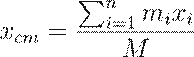 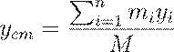
Donde representa la masa corporal total y el número de eslabones en el modelo (típicamente 8 o 14 segmentos dependiendo de la simetría deseada).
Este punto teórico puede situarse fuera de los límites físicos del cuerpo en posturas específicas, como en el salto de altura, donde el atleta se curva sobre la barra.
En conclusión, la definición del modelo de eslabones constituye el paso previo indispensable para cualquier análisis dinámico avanzado.
Al integrar datos antropométricos rigurosos con simplificaciones mecánicas coherentes, el bioingeniero puede transformar grabaciones cinemáticas en un flujo de información cinética que revela las cargas internas que rigen la vida humana.
3.5 Análisis dinámico del movimiento.
ANÁLISIS DINÁMICO DEL MOVIMIENTO
El análisis dinámico del aparato locomotor representa una extensión sofisticada de la estática, cuya distinción fundamental radica en el estudio de sistemas sujetos a aceleraciones no nulas.
Mientras que la estática se limita a sistemas en equilibrio donde la suma de fuerzas y momentos es cero, la dinámica aborda la causalidad del movimiento, integrando las leyes de Newton y Euler para describir cómo las fuerzas y los torques inducen cambios en el estado cinemático de los segmentos corporales.
En el ámbito de la ingeniería biomédica, este análisis es imperativo cuando las aceleraciones segmentarias son significativas, ya que las fuerzas de inercia el producto de la masa por la aceleración se convierten en componentes críticos de las cargas mecánicas totales que actúan sobre los tejidos biológicos.
FUNDAMENTACIÓN FÍSICO-MATEMÁTICA Y LEYES DEL MOVIMIENTO
La piedra angular de la cinética dinámica reside en la Segunda Ley de Newton, la cual establece que la aceleración de un cuerpo es directamente proporcional a la fuerza neta aplicada e inversamente proporcional a su masa.
Para un cuerpo rígido en un plano bidimensional, el movimiento se descompone en traslación del centro de masa y rotación alrededor de dicho centro, lo que genera un sistema de tres ecuaciones fundamentales de movimiento:
En este contexto:
· y representan el compendio de fuerzas externas e internas en los ejes horizontal y vertical, respectivamente.
· es la masa inercial del segmento, la cual cuantifica la resistencia a la aceleración lineal.
· es la aceleración lineal del centro de masa segmentario.
· (o ) es el momento neto o torque que tiende a causar rotación alrededor del eje perpendicular al plano de movimiento.
· es el momento de inercia segmentario, análogo angular de la masa, que describe la distribución de la materia respecto al eje de giro.
· es la aceleración angular resultante.
EL ABORDAJE DE DINÁMICA INVERSA (DINÁMICA NEWTON-EULER)
Dada la imposibilidad técnica de medir directamente las fuerzas musculares y las reacciones articulares in vivo sin comprometer la integridad del sujeto, la ingeniería biomecánica emplea el método de dinámica inversa.
Este proceso analítico consiste en calcular las fuerzas y momentos internos basándose en la cinemática medida (posiciones, velocidades y aceleraciones) y los parámetros antropométricos estimados (masas, centros de masa y momentos de inercia).
El flujo de cálculo se inicia típicamente en el segmento más distal (frecuentemente el pie), donde las fuerzas externas, como la Fuerza de Reacción del Suelo (FRS), son cuantificadas mediante plataformas de fuerza.
La ejecución de este método requiere una secuencia sistemática de pasos técnicos:
· Recopilación cinemática: Obtención de trayectorias de marcadores mediante fotogrametría de alta velocidad.
· Derivación numérica: Cálculo de aceleraciones lineales y angulares a partir de los datos de posición-tiempo, usualmente aplicando el método de la primera diferencia central.
· Filtrado de datos: Uso de filtros digitales para mitigar el ruido de alta frecuencia que se amplifica durante la diferenciación.
· Análisis segmentario distal-proximal: Resolución de las ecuaciones de movimiento segmento por segmento para hallar las fuerzas de reacción y los momentos netos en cada articulación sucesiva.
PARÁMETROS INERCIALES Y MOMENTO DE INERCIA
La precisión del modelado dinámico es extremadamente sensible a la caracterización de las propiedades inerciales de los eslabones rígidos.
El momento de inercia ( ) no es una
constante única para el cuerpo humano, sino que varía según el eje de rotación
elegido, reflejando cómo la masa se distribuye radialmente desde dicho eje.
) no es una
constante única para el cuerpo humano, sino que varía según el eje de rotación
elegido, reflejando cómo la masa se distribuye radialmente desde dicho eje.
Para fines computacionales, se recurre a menudo al radio de giro ( o ), que representa la distancia teórica desde el eje donde toda la masa podría concentrarse para mantener las mismas características inerciales:
Donde es
la masa del segmento y  su longitud. Es
fundamental notar que el momento de inercia es mínimo cuando el eje de rotación
pasa por el centro de masa del segmento, y aumenta al trasladarse a ejes
paralelos (como el centro de una articulación) según el Teorema de los Ejes
Paralelos:
su longitud. Es
fundamental notar que el momento de inercia es mínimo cuando el eje de rotación
pasa por el centro de masa del segmento, y aumenta al trasladarse a ejes
paralelos (como el centro de una articulación) según el Teorema de los Ejes
Paralelos:
Donde es la distancia entre el centro de masa y el nuevo eje de rotación.
TRABAJO, ENERGÍA Y POTENCIA MECÁNICA EN SISTEMAS DINÁMICOS
El análisis dinámico permite evaluar el flujo de energía a través de los eslabones corporales mediante la integración de fuerzas y momentos a lo largo del tiempo o la distancia.
El Trabajo Mecánico ( ) se define como el producto del torque aplicado por el desplazamiento angular ( ), resultando en cambios de la energía cinética rotacional ( ):
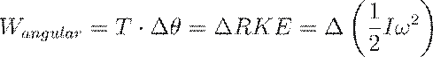
Asimismo, la Potencia Muscular ( ) es una variable diagnóstica crítica que identifica la naturaleza de la acción muscular en una articulación determinada.
Se calcula como el producto del momento neto articular ( ) por la velocidad angular de la articulación ( ):
Interpretación Dinámica de la Potencia Muscular
|
Signo de la Potencia ( ) |
Relación y |
Naturaleza de la Contracción |
Efecto Mecánico |
|
Positiva ( ) |
Mismo sentido (Ambos o ) |
Concéntrica |
Generación de energía; el músculo realiza trabajo sobre el segmento. |
|
Negativa ( ) |
Sentidos opuestos |
Excéntrica |
Absorción de energía; el segmento realiza trabajo sobre el músculo. |
|
Nula ( ) |
Uno de los valores es cero |
Isométrica / Estática |
No hay cambio en la energía cinética rotacional por esta fuente. |
En conclusión, el análisis dinámico transforma la descripción geométrica del movimiento en un mapa de demandas mecánicas internas, revelando cómo el sistema neuro-músculo-esquelético gestiona el intercambio de energía para producir una locomoción eficiente y segura.
3.6 Biomecánica de la marcha.
LOCOMOCIÓN HUMANA
La biomecánica de la marcha se refiere al estudio de la locomoción humana, que incluye caminar y correr, mediante la aplicación de las leyes de la física.
El Análisis de la Marcha es la medición y evaluación cuantitativa del movimiento humano, con el objetivo de entender cómo las contracciones musculares se transforman en movimientos funcionales (caminar, correr, subir escaleras) y cómo se relacionan los sistemas de control motor con la dinámica de la marcha.
BIOMECÁNICA DE LA MARCHA
La marcha humana se define, desde una perspectiva cinemática y dinámica, como un proceso de locomoción bipedestante en el cual el cuerpo humano, actuando como un sistema de eslabones cinéticos, se desplaza a través del espacio mediante un movimiento traslatorio global resultante de movimientos rotatorios periódicos de sus segmentos.
Este fenómeno biomecánico es una actividad motora rítmica y coordinada, gobernada por programas motores centrales en la médula espinal y modulada por centros mesencefálicos superiores para graduar la velocidad y el patrón del movimiento.
En el ámbito de la ingeniería biomédica, el análisis de la marcha se fundamenta en la descomposición del ciclo en fases temporales y la cuantificación de variables mecánicas, tales como las fuerzas de reacción del suelo (FRS), los momentos articulares y los patrones de activación electromiográfica (EMG).
La eficiencia de este sistema depende de la interacción dinámica entre la gravedad, la inercia segmentaria y las fuerzas internas generadas por el complejo neuromuscular para minimizar el costo energético total durante la progresión.
Estructura y subfases del ciclo de la marcha
El ciclo de la marcha, o zancada, es la unidad fundamental de análisis y se define como el intervalo cronológico comprendido entre dos contactos sucesivos del mismo talón con el suelo.
Una zancada se compone de dos pasos (derecho e izquierdo) y se divide en dos fases principales que reflejan el estado de contacto de la extremidad con la superficie de soporte.
· Fase de Apoyo (Stance Phase): Constituye aproximadamente el 60% del ciclo en una caminata normal. Se inicia con el contacto inicial (golpe de talón) y finaliza con el despegue de los dedos.
· Fase de Oscilación o Balanceo (Swing Phase): Comprende el 40% restante del ciclo, periodo en el cual el pie no tiene contacto con el suelo y la extremidad se recupera para el siguiente apoyo.
Dentro de estas fases, la ingeniería clínica identifica subfases críticas para el diagnóstico funcional: la fase de apoyo incluye la respuesta a la carga (doble apoyo inicial), el apoyo medio (apoyo sencillo), el apoyo terminal y el pre-balanceo.
Por su parte, la fase de balanceo se subdivide en balanceo inicial (aceleración), balanceo medio y balanceo terminal (desaceleración).
La presencia de periodos de doble apoyo (ambos pies en el suelo) es el parámetro discriminante fundamental entre la marcha y la carrera; mientras que en la marcha el factor de trabajo es superior a 0.5 (existencia de doble apoyo), en la carrera este factor es inferior a 0.5, introduciendo una fase aérea o de no contacto.
Parámetros cinemáticos y cinéticos de progresión
La cuantificación de la marcha requiere el estudio de variables espaciotemporales que definen la eficiencia del desplazamiento.
La velocidad de la marcha ( ) es el producto de la longitud de la zancada ( ) por la frecuencia de zancada o cadencia. Un parámetro adimensional crítico para el estudio comparativo de la locomoción es el Número de Froude ( ), el cual relaciona las fuerzas de inercia con las fuerzas gravitatorias para determinar velocidades óptimas y transiciones de fase (como el cambio de caminar a correr):
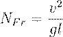
Donde es
la velocidad, la aceleración de
la gravedad y  la longitud de la
extremidad. En adultos, la transición de la marcha a la carrera ocurre
típicamente a una velocidad de ~2 m/s, lo que corresponde a un aproximado de 0.7.
la longitud de la
extremidad. En adultos, la transición de la marcha a la carrera ocurre
típicamente a una velocidad de ~2 m/s, lo que corresponde a un aproximado de 0.7.
Comparativa de Parámetros Cinemáticos en Locomoción Humana
|
Variable |
Caminata Normal |
Carrera |
Sprint |
|
Velocidad (m/s) |
0.67 – 1.32 |
1.65 – 4.00 |
8.00 – 9.00 |
|
Longitud de Zancada (m) |
1.03 – 1.35 |
1.51 – 3.00 |
4.60 – 4.50 |
|
Cadencia (pasos/min) |
79.0 – 118.0 |
132.0 – 200.0 |
> 200.0 |
|
Fase de Apoyo (%) |
~60% |
59% – 30% |
25% – 20% |
Desde el punto de vista cinético, la Fuerza de Reacción del Suelo (FRS) vertical durante la marcha presenta una curva bimodal característica en forma de "M".
El primer pico modal (respuesta a la carga) refleja la desaceleración del centro de masa y alcanza magnitudes de 1.1 a 1.2 veces el peso corporal (PC), mientras que el segundo pico (fase de propulsión) representa el empuje activo de los flexores plantares.
En contraste, al correr, estas fuerzas pueden escalar hasta 2 a 5 veces el PC, incrementando significativamente el estrés estructural sobre los tejidos óseos y articulares.
Modelado del Péndulo Invertido y Eficiencia Energética
Un modelo mecánico fundamental para explicar la economía de la marcha es el del péndulo invertido. En este modelo, el centro de masa del cuerpo describe arcos de circunferencia utilizando la pierna de apoyo como un radio fijo.
Este mecanismo permite un intercambio continuo entre la energía cinética ( ) y la energía potencial gravitacional ( ):
· Choque de talón a apoyo medio: La disminuye (desaceleración horizontal) mientras la aumenta al elevarse el centro de masa sobre la pierna extendida.
· Apoyo medio a despegue: El centro de masa desciende, transformando la acumulada nuevamente en para la progresión hacia adelante.
Este intercambio pendular, aunque imperfecto, permite ahorrar hasta un 65% del trabajo muscular requerido para la locomoción en comparación con un modelo que no aproveche la conservación de energía mecánica.
En la carrera, este mecanismo pendular es ineficaz debido a que la y la fluctúan en fase, dependiendo entonces del almacenamiento y liberación de energía elástica en los tendones (principalmente el tendón de Aquiles) para mantener la eficiencia.
Dinámica Articular y Control Muscular
La cinemática angular de las articulaciones de la extremidad inferior sigue patrones predecibles para absorber impactos y generar potencia.
El análisis dinámico inverso revela que el poder articular es el producto del momento neto ( ) por la velocidad angular ( ):
En la articulación del tobillo, se observa un patrón de tres "rockers" o balancines: el primero en el contacto inicial controlado por una contracción excéntrica del tibial anterior para evitar la caída brusca del antepié; el segundo durante el apoyo medio donde la tibia avanza sobre el pie; y el tercero en el despegue de dedos, caracterizado por una explosión de poder concéntrico del tríceps sural que proporciona la propulsión principal.
La rodilla, por su parte, presenta una flexión bifásica esencial para el despeje del pie en el balanceo y la amortiguación en el apoyo.
Finalmente, alteraciones en estos patrones, como la marcha antálgica o la marcha equina (caída del pie), son indicativos de deficiencias neuromusculares o compensaciones biomecánicas ante el dolor o la inestabilidad.
CICLO DE LA MARCHA
La marcha humana se describe como un movimiento cíclico.
El ciclo locomotor o zancada se define como el intervalo desde el primer instante en que un pie hace contacto con el suelo hasta el siguiente contacto del mismo pie.
Fases del Ciclo
El ciclo se divide en dos fases principales:
Fase de Apoyo (Stance Phase):
El pie está en contacto con el suelo.
Representa aproximadamente el 60–66% del ciclo al caminar y 30–59% al correr. Subdivisiones:
· Choque del talón o fase de carga inicial (absorción del impacto).
· Apoyo medio (el peso corporal se desplaza sobre el pie).
· Fase de propulsión: elevación del talón y despegue de los dedos.
En la caminata existe un período de doble apoyo, donde ambos pies están en contacto con el suelo.
Fase de Balanceo (Swing Phase):
· El pie no está en contacto con el suelo.
· Representa el 34–40% del ciclo al caminar y hasta 70–80% en el sprint.
· Subdivisiones: balanceo inicial, balanceo medio y balanceo terminal.
· En la carrera aparece una fase aérea, donde ningún pie toca el suelo.
PARÁMETROS ESPACIALES Y TEMPORALES DE LA MARCHA
· Paso (Step): Porción de la zancada desde un evento en una pierna hasta el mismo evento en la pierna opuesta.
· Zancada (Stride): Intervalo entre dos contactos consecutivos del mismo pie.
· Longitud de la zancada: Distancia cubierta en una zancada.
· Longitud del paso: Distancia entre el contacto de un pie y el del otro.
· Cadencia: Número de pasos por minuto.
· Frecuencia de zancada: Número de zancadas por minuto.
· Tiempo de ciclo: Duración de una zancada.
· Relación con la velocidad
La velocidad de marcha se determina como:
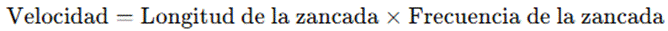
Caminata:
· Velocidad: 0.67–1.32 m/s
· Longitud de zancada: 1.03–1.35 m
· Cadencia: 79–118 pasos/min
Carrera:
· Velocidad: 1.65–4.00 m/s
· Longitud de zancada: 1.51–3.00 m
· Cadencia: 132–200 pasos/min
ANÁLISIS CINEMÁTICO
El Análisis Cinemático describe posiciones, velocidades y aceleraciones sin considerar las fuerzas.
Plano sagital: mayor rango de movimiento en la marcha y carrera.
Tobillo: oscila aprox. 20°.
· Choque del talón: flexión plantar 5–6°.
· Apoyo medio: dorsiflexión 10–12°.
· Despegue: flexión plantar 15–20°.
Articulaciones metatarsofalángicas: extensión marcada en la fase de propulsión.
Articulación tarsal media: móvil al inicio para absorber impacto y rígida al final para la propulsión.
ANÁLISIS CINÉTICO
La cinética estudia las fuerzas que generan el movimiento.
Fuerzas de Reacción del Suelo (FRS):
· Componente vertical:
o Caminata: 1–1.2 × peso corporal (PC).
o Carrera: 2–5 × PC.
o Forma bimodal característica en la marcha.
· Componente anteroposterior:
o Negativa en fase inicial (frenado).
o Positiva en fase final (propulsión).
o Magnitud: ~0.15 × PC.
Dinámica inversa: Permite calcular torques articulares a partir de las FRS.
Potencia muscular:
· Negativa → absorción de energía (acción excéntrica).
· Positiva → generación de energía (acción concéntrica).
· Cadera: extensión controlada por flexores en apoyo tardío.
· Rodilla: cuádriceps excéntricos en carga inicial.
Energía mecánica: La marcha se asemeja a un péndulo invertido, con intercambio entre energía cinética y potencial (ahorro de hasta 65% del trabajo muscular).
ACTIVIDAD MUSCULAR (ELECTROMIOGRAFÍA - EMG)
Cadera y pelvis:
· Glúteo medio y mínimo activos al choque del talón para estabilizar la pelvis.
· Glúteo mayor y tensor de la fascia lata también colaboran en la carga inicial.
Tobillo: dorsiflexores activos en fase de carga.
Rodilla y pie:
· Cuádriceps excéntricos y luego concéntricos en la propulsión.
· Isquiotibiales concéntricos en el despegue de los dedos.
Balanceo: iliopsoas y recto femoral impulsan la pierna hacia adelante.
FACTORES QUE MODIFICAN LA MARCHA
Condiciones clínicas:
· Discapacidad física → velocidad baja, pasos cortos, mayor fase de apoyo.
· Parálisis cerebral → marcha lenta, cadencia reducida, doble apoyo prolongado.
Condiciones ambientales:
· Superficies resbalosas → pasos cortos y ángulo de contacto reducido.
Velocidad preferida: alrededor de 2 m/s, donde se transita de caminar a correr.
TÉCNICAS DE MEDICIÓN
Métodos básicos: cronómetro y cinta métrica.
Instrumentación avanzada:
· Monitores fotoeléctricos.
· Interruptores plantares (foot switches).
· Plantillas instrumentadas y pasarelas sensibles.
· Cámaras de video y sistemas de captura de movimiento.
· Plataformas de fuerza para medir FRS.
APLICACIONES DE LA BIOMECÁNICA DE LA MARCHA
· Diagnóstico clínico: evaluación de fuerza y control motor en rehabilitación.
· Medicina deportiva: análisis de patrones de movimiento para detectar lesiones y monitorear recuperación.
· Prótesis y órtesis: diseño de dispositivos que imiten la función mecánica del miembro perdido.
4. Biomecánica articular.
4.1 Las articulaciones y su operación.
LAS ARTICULACIONES Y SU OPERACIÓN
Desde una perspectiva de ingeniería biomecánica, una articulación o artrosis se define rigurosamente como el punto de interacción, unión o contacto entre dos o más elementos óseos o partes rígidas del esqueleto.
Estas estructuras no son meras conexiones estáticas, sino mecanismos complejos cuya función primordial es doble: por un lado, permitir y controlar los grados de libertad de movimiento entre los eslabones óseos y, por otro, actuar como interfases de transmisión de cargas mecánicas a través del sistema musculoesquelético.
La operatividad de estos sistemas depende intrínsecamente de su diseño estructural, el cual ha evolucionado para optimizar la transferencia de fuerzas mientras se minimiza el desgaste superficial y la fricción, permitiendo una locomoción fluida y eficiente.
La integración armónica de tejidos blandos y duros convierte a las articulaciones en sistemas autorregulados y autolubricados de alto rendimiento.
Clasificación estructural y funcional de los sistemas articulares
El modelado matemático de las articulaciones requiere primero una categorización basada en su morfología y la naturaleza del tejido conectivo interpuesto.
Las clasificaciones en la literatura de bioingeniería se dividen fundamentalmente en tres grupos estructurales, los cuales determinan su capacidad operativa y rango de movimiento:
· Articulaciones Fibrosas (Sinartrosis): Caracterizadas por la unión de huesos mediante tejido conectivo fibroso denso, careciendo de cavidad articular. Operacionalmente son rígidas o permiten movimientos mínimos, como se observa en las suturas del cráneo o las sindesmosis de la región distal tibiofibular.
· Articulaciones Cartilaginosas (Anfiartrosis): En estos sistemas, los eslabones óseos se encuentran vinculados por cartílago hialino (sincondrosis) o fibrocartílago (sínfisis). Su operación permite una movilidad limitada y está diseñada principalmente para absorber choques y proporcionar potencia estructural, como en los discos intervertebrales.
· Articulaciones Sinoviales (Diartrosis): Representan el foco principal de la biomecánica del movimiento por su alta movilidad. Su característica distintiva es la presencia de una cavidad articular que separa las superficies óseas, permitiendo movimientos libres en uno o más planos.
Resumen de Clases Articulares y su Movilidad
|
Clase Estructural |
Característica del Tejido |
Tipo Funcional |
Ejemplo Operativo |
|
Fibrosa |
Fibras de colágeno (fibrina) |
Sinartrosis |
Suturas craneales |
|
Cartilaginosa |
Cartílago hialino / fibrocartílago |
Anfiartrosis |
Sínfisis púbica |
|
Sinovial |
Cavidad articular y fluido |
Diartrosis |
Cadera, Rodilla |
Arquitectura operativa de la articulación sinovial
La operación eficiente de una articulación diartrodial se fundamenta en una serie de componentes especializados que actúan de manera sinérgica para gestionar las demandas tribológicas del sistema.
El cartílago articular, un tejido avascular y altamente especializado compuesto por un 60-80% de agua y una matriz sólida de colágeno y proteoglicanos, recubre los extremos óseos.
Su función mecánica es la redistribución de las tensiones de contacto sobre un área superficial mayor, reduciendo así la presión sobre el hueso subcondral y proporcionando una superficie de deslizamiento con un coeficiente de fricción extremadamente bajo, a menudo inferior a 0.01.
La cápsula articular envuelve el sistema como un manguito de tejido conjuntivo fibroso, definiendo el espacio interarticular y manteniendo una presión atmosférica negativa que contribuye a la estabilidad.
Internamente, la membrana sinovial secreta el líquido sinovial, un fluido viscoso similar a la clara de huevo que funciona como lubricante hidrodinámico y medio de transporte de nutrientes para el cartílago.
En articulaciones complejas como la rodilla, se integran elementos adicionales como los meniscos (discos de fibrocartílago), que optimizan el ajuste entre superficies incongruentes y aumentan la capacidad de absorción de impactos.
DINÁMICA DE LUBRICACIÓN Y TRANSFERENCIA DE CARGAS
La capacidad operativa de las articulaciones sinoviales para resistir el desgaste bajo cargas masivas que pueden alcanzar múltiplos significativos del peso corporal se explica mediante modelos de lubricación avanzados.
La interacción biomecánica-bioquímica permite diversos modos de operación según la intensidad del movimiento:
1. Lubricación por película de fluido (Hidrodinámica): El movimiento relativo de las superficies arrastra el líquido sinovial hacia la zona de carga, creando una cuña de presión que separa físicamente los cartílagos.
2. Lubricación por compresión (Squeeze-film): En condiciones de carga estática o impacto, el fluido es exprimido de la matriz del cartílago hacia el espacio articular, manteniendo la separación mientras el fluido retorna gradualmente.
3. Lubricación de barrera: Moléculas específicas como la lubricina se adhieren a las superficies articulares, formando una capa protectora que previene el contacto sólido-sólido incluso bajo velocidades mínimas.
Matemáticamente, la presión de soporte en la interfase ( ) se define por la relación entre la fuerza normal aplicada ( ) y el área de contacto efectiva ( ):
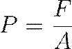
Un incremento en el espesor o la salud del
cartílago maximiza el área  , disminuyendo
drásticamente la magnitud de y previniendo la
degeneración tisular.
, disminuyendo
drásticamente la magnitud de y previniendo la
degeneración tisular.
Asimismo, la estabilidad funcional del sistema es un proceso dinámico donde los ligamentos y tendones actúan no solo como restricciones pasivas, sino como sensores que activan respuestas musculares para proteger la integridad estructural ante desplazamientos anormales.
La ruptura de este equilibrio operativo ya sea por traumatismo o inmovilización prolongada, deriva en patologías degenerativas como la osteoartritis, donde la degradación de la matriz de colágeno compromete la presurización del fluido intersticial y el soporte de carga.
4.2 Analogías mecánicas de las articulaciones.
ANALOGÍAS MECÁNICAS DE LAS ARTICULACIONES
El modelado biomecánico del aparato locomotor requiere la transformación de las complejas interfases biológicas en abstracciones matemáticas y mecánicas que faciliten su análisis cinético y cinemático.
En la ingeniería biomédica, esta simplificación se fundamenta en la teoría de máquinas y mecanismos, donde las uniones óseas se conceptualizan como pares cinemáticos que restringen el movimiento relativo entre eslabones rígidos.
Estas analogías permiten aplicar las leyes de la mecánica clásica para predecir trayectorias, calcular momentos de fuerza y diseñar dispositivos de reemplazo articular que mimetizan la función fisiológica.
La precisión de estas analogías depende de la correcta identificación de los ejes de rotación y de la comprensión de que, mientras los modelos ideales asumen geometrías perfectas, las articulaciones biológicas presentan superficies asimétricas que a menudo derivan en centros articulares instantáneos móviles.
Grados de Libertad (DOF) y Espacio de Configuración
Un concepto fundamental en la analogía mecánica es el de grado de libertad (gl), que define el número de coordenadas independientes requeridas para especificar completamente la posición de un segmento respecto a otro en el espacio.
En un sistema tridimensional, un cuerpo rígido no restringido posee seis grados de libertad (tres traslaciones y tres rotaciones); sin embargo, la arquitectura anatómica de las diartrosis impone restricciones que limitan este potencial a movimientos específicos en los planos cardinales.
· Articulaciones Uniaxiales: Poseen 1 gdl, permitiendo el movimiento en un solo plano alrededor de un único eje.
· Articulaciones Biaxiales: Poseen 2 gdl, facilitando el movimiento en dos planos perpendiculares.
· Articulaciones Multiaxiales: Poseen 3 gdl, permitiendo rotaciones en los tres planos del espacio (sagital, frontal y transverso).
TIPOLOGÍA DE LAS ANALOGÍAS ARTICULARES
La clasificación de las articulaciones sinoviales según su morfología permite establecer correspondencias directas con mecanismos de ingeniería conocidos.
Estas analogías son esenciales para la formulación de ecuaciones de equilibrio y dinámica segmentaria.
Clasificación Biomecánica y Analogías de Ingeniería de las Articulaciones
|
Tipo Articular |
Analogía Mecánica |
Grados de Libertad |
Ejes de Movimiento |
Ejemplos Anatómicos |
|
Gínglimo (Bisagra) |
Perno / Charnela |
1 (Uniaxial) |
Transversal |
Codo (Humerocubital), Rodilla (Idealizada), Interfalángicas. |
|
Trocoide (Pivote) |
Eje rotatorio / Pasador |
1 (Uniaxial) |
Longitudinal |
Radiocubital proximal, Atlantoaxial. |
|
Artrodia (Plana) |
Guía de deslizamiento |
No axial / Mínimos |
Deslizamiento lineal |
Intercarpianas, Intertarsianas, Acromioclavicular. |
|
Condilar / Elipsoidal |
Huevo en copa oval |
2 (Biaxial) |
Sagital y Frontal |
Metacarpofalángicas (Nudillos), Muñeca (Radiocarpiana). |
|
Silla de montar |
Encaje recíproco / Cardán |
2 (Biaxial) + |
Sagital, Frontal y Rotación ligera |
Carpometacarpiana del pulgar. |
|
Esferoidea |
Bola y receptáculo |
3 (Multiaxial) |
Universal (3 ejes) |
Cadera (Coxofemoral), Hombro (Glenohumeral). |
Modelado Físico-Matemático de la Rotación Articular
La respuesta dinámica de estas analogías mecánicas ante las fuerzas musculares y externas se rige por las leyes del movimiento de Newton adaptadas al caso angular.
En este marco, el momento de fuerza o torque ( ) es el agente causal de la aceleración angular, y su magnitud está determinada por el producto vectorial de la fuerza aplicada ( ) y el brazo de momento o distancia perpendicular al eje de giro ( ):
Para un eslabón articulado con un momento de inercia ( ) definido que representa la resistencia del segmento al cambio en su estado de movimiento rotacional, la relación fundamental de la cinética angular se expresa como:
Donde es la aceleración angular resultante en torno al eje (perpendicular al plano de movimiento en análisis 2D).
Esta ecuación es la piedra angular para el cálculo de la dinámica inversa, permitiendo a los ingenieros inferir los momentos musculares internos a partir de las trayectorias capturadas ópticamente y las fuerzas medidas en plataformas.
Restricciones Mecánicas y Estabilidad Articular
La operatividad de estas analogías no solo depende de la geometría ósea, sino también de los elementos de sujeción que actúan como restricciones cinemáticas pasivas y activas.
En un sistema de ingeniería, esto se compararía con los topes mecánicos y tensores de un mecanismo complejo.
· Restricciones Geométricas: La congruencia entre las superficies (como el encaje profundo de la cadera vs. el superficial del hombro) dicta la estabilidad intrínseca y el riesgo de luxación.
· Ligamentos y Cápsula: Funcionan como tensores de longitud variable que se oponen a desplazamientos traslacionales y rotaciones excesivas, guiando el segmento a través de su rango de movimiento permitido.
· Mecanismo de Bloqueo (Screw-home): En articulaciones como la rodilla, la analogía de bisagra se vuelve insuficiente debido a rotaciones automáticas obligatorias al final de la extensión, un fenómeno de "atornillamiento" que maximiza la estabilidad en carga estática.
En conclusión, el uso de analogías mecánicas permite transformar la anatomía humana en un sistema de ingeniería analizable, sentando las bases para el desarrollo de prótesis funcionales que deben no solo replicar los grados de libertad naturales, sino también soportar las magnitudes de carga y aceleración características de la vida humana.
4.3 Articulación de la cadera.
ARTICULACIÓN DE LA CADERA
La articulación coxofemoral, o articulación de la cadera, constituye la conexión cinemática primaria entre el esqueleto axial y el miembro inferior, clasificándose mecánicamente como una enartrosis o articulación esferoidea de tipo "bola y receptáculo".
Desde una perspectiva de ingeniería estructural, este sistema está diseñado para optimizar la transferencia de cargas masivas durante la bipedestación y la locomoción, manteniendo simultáneamente una movilidad tridimensional excepcional que permite orientar el miembro inferior en todas las direcciones del espacio.
La arquitectura de la articulación comprende la cabeza del fémur, que representa aproximadamente dos tercios de una esfera, y el acetábulo del hueso coxal, una cavidad hemisférica profunda reforzada periféricamente por el rodete acetabular (labrum).
A diferencia de la articulación glenohumeral, que prioriza el rango de movimiento sobre la estabilidad, la cadera sacrifica marginalmente su amplitud cinemática para maximizar la congruencia articular y la resistencia a la luxación, soportando tensiones mecánicas que exceden significativamente el peso corporal del individuo.
GEOMETRÍA ARTICULAR Y PARÁMETROS ANGULARES
El comportamiento mecánico de la cadera está intrínsecamente ligado a la geometría del cuello femoral, cuya orientación define el brazo de momento de los grupos musculares estabilizadores y la distribución de las líneas de fuerza sobre el fémur proximal.
Existen dos parámetros angulares fundamentales para el modelado biomecánico de esta articulación:
Ángulo de Inclinación (Cuello-Diafisario): Es el ángulo formado por el eje del cuello femoral respecto al eje longitudinal de la diáfisis en el plano frontal. En el adulto promedio, este ángulo oscila entre 125° y 130°, permitiendo que el fémur se desplace lateralmente respecto a la pelvis.
o Coxa Vara: Ángulo menor a 125°, lo que incrementa el brazo de momento de los abductores pero somete al cuello femoral a mayores fuerzas de cizallamiento y estrés.
o Coxa Valga: Ángulo superior a 125°, que alarga el miembro pélvico y reduce la efectividad mecánica de los abductores de la cadera.
Ángulo de Anteversión: Define la rotación anterior del cuello femoral en relación con el eje transverso de los cóndilos femorales en el plano horizontal.
El valor fisiológico normal es de aproximadamente 12° a 14°, y cualquier desviación significativa (anteversión excesiva o retroversión) altera los patrones de rotación interna y externa durante la marcha.
Parámetros Geométricos del Fémur Proximal (Adaptado de Yoshioka et al.)
|
Parámetro |
Valor en Mujeres |
Valor en Hombres |
Significado Biomecánico |
|
Diámetro Cabeza Femoral |
45.0 ± 3.0 mm |
52.0 ± 3.3 mm |
Área de superficie para la carga. |
|
Ángulo de Inclinación |
133° ± 6.6° |
129° ± 7.3° |
Ventaja mecánica de abductores. |
|
Ángulo de Anteversión |
8° ± 10° |
7.0° ± 6.8° |
Alineación rotacional de la rodilla. |
Bioestática y Análisis de Cargas
La articulación de la cadera es uno de los elementos de soporte de carga más exigidos del organismo, operando bajo un régimen de fuerzas compresivas cíclicas.
En bipedestación estática sobre ambas extremidades, cada articulación asume aproximadamente un tercio del peso corporal (PC), pero este equilibrio se altera drásticamente en apoyo monopodal.
Durante la fase de apoyo de la marcha, la contracción vigorosa de los abductores (principalmente el glúteo medio) para estabilizar la pelvis genera una fuerza de reacción articular que alcanza entre 3 y 7 veces el PC.
La relación entre el torque muscular ( ) y la fuerza
aplicada ( ) en la cadera se
define por la distancia perpendicular o brazo de momento ( ):
) y la fuerza
aplicada ( ) en la cadera se
define por la distancia perpendicular o brazo de momento ( ):
Un brazo de momento mayor permite generar un torque superior con la misma tensión muscular.
Asimismo, la presión intraarticular ( ) en la superficie
semilunar del acetábulo se rige por la distribución de la fuerza normal ( ) sobre el área de
contacto efectiva (
) en la superficie
semilunar del acetábulo se rige por la distribución de la fuerza normal ( ) sobre el área de
contacto efectiva ( ):
):
Las investigaciones indican que la carga no se distribuye uniformemente, sino que se concentra en las regiones anterior y posterior de la cara semilunar, dejando la fosa acetabular central libre de contacto directo bajo cargas fisiológicas normales.
Mecanismos de Estabilidad y Coaptación
La estabilidad estructural de la cadera deriva de una combinación de restricciones geométricas, ligamentarias y físicas. La cápsula articular es excepcionalmente fuerte y densa, reforzada por tres ligamentos principales que se tensan en extensión para atornillar la cabeza femoral profundamente en el acetábulo.
· Ligamento Iliofemoral (o en Y de Bigelow): El más fuerte del cuerpo, resiste la hiperextensión y la rotación externa.
· Ligamento Pubofemoral: Limita la abducción excesiva y la extensión.
· Ligamento Isquiofemoral: Localizado en la cara posterior, restringe la rotación interna y la aducción en flexión.
· Presión Atmosférica Negativa: El vacío creado dentro de la cavidad articular genera una fuerza de succión que mantiene la cabeza femoral en su sitio incluso en ausencia de soporte muscular o ligamentario.
Cinemática de la Cadera y Grados de Libertad
Al ser una articulación multiaxial, posee tres grados de libertad, permitiendo el movimiento en los tres planos cardinales. La amplitud de movimiento está influenciada por la posición de la rodilla debido a la naturaleza biarticular de músculos como los isquiotibiales y el recto femoral.
1. Plano Sagital (Eje Transverso): Flexión (120-125°) y extensión/hiperextensión (10-15°).
2. Plano Frontal (Eje Anteroposterior): Abducción (30-45°) y aducción (15-30°).
3. Plano Transverso (Eje Longitudinal): Rotación interna y externa, ambas en un rango aproximado de 30-50°.
La máxima congruencia entre las superficies articulares (posición de bloqueo o close-packed) no ocurre en la posición erguida, sino a los 90° de flexión con ligera rotación y abducción, posición que evoca la locomoción cuadrúpeda de los ancestros humanos.
4.4 Articulación de la rodilla.
ARTICULACIÓN DE LA RODILLA
La articulación de la rodilla se define desde una perspectiva de ingeniería biomecánica como el complejo cinemático intermedio del miembro inferior, actuando como el eje fundamental para la transmisión de cargas y la modulación de la longitud efectiva de la extremidad durante la locomoción.
Estructuralmente, es la articulación más grande y compleja del cuerpo humano, comprendiendo no una, sino tres articulaciones funcionales integradas: las articulaciones femorotibiales medial y lateral, y la articulación patelofemoral (o femororrotuliana).
Aunque tradicionalmente se le clasifica como un gínglimo o bisagra debido a que su movimiento predominante ocurre en el plano sagital, su diseño arquitectónico corresponde en realidad a una articulación condiloidea doble o bisagra modificada, ya que posee dos grados de libertad: flexo-extensión y una rotación axial significativa que solo se manifiesta durante la flexión.
Esta complejidad funcional permite que la rodilla concilie dos imperativos mecánicos contradictorios: una gran estabilidad en extensión completa para el soporte del peso corporal y una movilidad multidireccional en flexión para la adaptación al terreno.
Geometría Funcional y Arquitectura de Superficies
La estabilidad intrínseca de la rodilla es notablemente baja si se considera únicamente su morfología ósea, la cual ha sido comparada con el equilibrio precario de dos esferas descansando sobre una tabla curva.
Los cóndilos femorales, dos grandes proyecciones convexas asimétricas, se articulan con la meseta tibial.
El cóndilo medial es más largo en sentido anteroposterior y proyecta más distally, mientras que el lateral es más plano y ancho, una asimetría que es el determinante mecánico principal de la rotación automática de la rodilla.
Por su parte, la meseta tibial presenta dos carillas articulares: la medial es ovalada y cóncava, proporcionando una mayor congruencia, mientras que la lateral es circular y frecuentemente convexa en su eje longitudinal, lo que permite una mayor excursión y movilidad del cóndilo lateral.
Para compensar esta incongruencia y optimizar la distribución de presiones ( ), la naturaleza integra los meniscos medial y lateral, discos de fibrocartílago semilunares que profundizan las superficies articulares. Los meniscos cumplen funciones críticas de ingeniería:
· Distribución de Carga: Transmiten hasta el 50% de la carga de compresión total, reduciendo la tensión de contacto a la mitad al aumentar el área de superficie efectiva.
· Absorción de Impactos: Su estructura viscoelástica atenúa los picos de fuerza durante actividades dinámicas.
· Lubricación: Facilitan la dispersión del líquido sinovial sobre el cartílago articular.
· Estabilidad: Actúan como calces mecánicos que limitan el desplazamiento excesivo del fémur sobre la tibia.
Comparativa de Parámetros Geométricos de la Rodilla (Datos Promedio)
|
Parámetro |
Valor Masculino |
Valor Femenino |
Relevancia Mecánica |
|
Ancho Epicondilar |
90 ± 6 mm |
80 ± 6 mm |
Brazo de momento para ligamentos colaterales. |
|
Área Contacto Tibiofemoral |
~20 cm² (Extensión) |
~20 cm² (Extensión) |
Crucial para la presión de contacto. |
|
Ángulo Q (Quadriceps) |
10° – 14° |
15° – 17° |
Vector de fuerza lateral sobre la rótula. |
|
Rango Flexión Máxima |
130° – 145° |
130° – 145° |
Limitado por masa de tejidos blandos. |
Cinemática y el Mecanismo de "Screw-Home"
El movimiento de la rodilla no es una rotación pura sobre un eje fijo, sino una combinación compleja de rodamiento y deslizamiento (rolling and gliding). En la fase inicial de la flexión (cadena cerrada), el fémur rueda hacia atrás y simultáneamente se desliza hacia adelante para evitar salirse de la meseta tibial.
Debido a la mayor longitud del cóndilo medial, este continúa su movimiento de rodamiento después de que el cóndilo lateral ha cesado, provocando una rotación interna del fémur sobre la tibia (o rotación externa de la tibia en cadena abierta) al final de la extensión.
Este fenómeno, conocido como el mecanismo de "tornillo" o screw-home mechanism, bloquea la articulación en su posición de máxima congruencia o close-packed, permitiendo la bipedestación prolongada con un gasto energético muscular mínimo.
ESTABILIDAD PASIVA Y ACTIVA: LIGAMENTOS Y CONTROL MUSCULAR
La integridad estructural de la rodilla depende de un sistema de restricciones pasivas (ligamentos) y dinámicas (músculos) que operan en sinergia. Los ligamentos colaterales (medial y lateral) proporcionan estabilidad en el plano frontal, resistiendo las fuerzas de valgo y varo, respectivamente.
Por otro lado, los ligamentos cruzados controlan la estabilidad anteroposterior y rotacional dentro del espacio intercondíleo.
El ligamento cruzado anterior (LCA) es el principal restrictor del desplazamiento anterior de la tibia, mientras que el ligamento cruzado posterior (LCP) es el restrictor primario (95%) del desplazamiento posterior.
Matemáticamente, la potencia muscular ( ) en la rodilla se determina mediante la relación entre el momento neto articular ( ) y la velocidad angular ( ):
El grupo muscular del cuádriceps femoral es el extensor principal y el motor más potente, siendo hasta tres veces más fuerte que su antagonista, los isquiotibiales.
El cuádriceps no solo genera movimiento concéntrico, sino que actúa excéntricamente para amortiguar la carga durante la fase de apoyo de la marcha, controlando la flexión de la rodilla para evitar el colapso de la extremidad.
MECÁNICA DE LA ARTICULACIÓN PATELOFEMORAL
La rótula (patela), el hueso sesamoideo más grande del organismo, actúa como una polea anatómica que desplaza el tendón del cuádriceps anteriormente al eje de rotación de la rodilla.
Este desplazamiento aumenta significativamente el brazo de momento de la fuerza muscular ( ), incrementando la ventaja mecánica del cuádriceps en aproximadamente un 50%.
La trayectoria de la rótula en el surco troclear, o patellar tracking, está influenciada críticamente por el Ángulo Q.
Un Ángulo Q excesivo (genu valgo) genera un vector de fuerza lateral sobre la rótula que predispone a la subluxación y a patologías como la condromalacia rotuliana debido a la mala distribución de las fuerzas compresivas.
La fuerza de compresión patelofemoral ( ) es una función
del ángulo de flexión de la rodilla ( );
a mayor flexión, mayor es la tensión del cuádriceps y más agudo es el ángulo de
los tendones, lo que empuja la rótula con más fuerza contra el fémur.
);
a mayor flexión, mayor es la tensión del cuádriceps y más agudo es el ángulo de
los tendones, lo que empuja la rótula con más fuerza contra el fémur.
Esta fuerza alcanza picos masivos en actividades como la sentadilla profunda (sentadillas), llegando a magnitudes de hasta 7-8 veces el peso corporal.
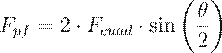
(Aproximación del modelo de polea)
En conclusión, la biomecánica de la rodilla revela una estructura optimizada para la absorción de energía y la estabilidad dinámica, donde cada componente desde la asimetría de los cóndilos hasta el efecto de polea de la rótula contribuye a un sistema capaz de soportar las exigencias cíclicas de la locomoción humana con una eficiencia tribológica excepcional.
4.5 Otras articulaciones.
OTRAS ARTICULACIONES
El estudio de la biomecánica articular se extiende más allá de los grandes complejos de soporte de carga del miembro inferior, abarcando sistemas cuya especialización funcional oscila entre la movilidad extrema del miembro superior y la estabilidad intrincada de las estructuras distales.
Desde una perspectiva de modelado en ingeniería, estas "otras articulaciones" que incluyen el complejo del hombro, el codo, la muñeca, la mano y el tobillo operan como una cadena cinética de eslabones donde la eficiencia del segmento efector final depende de la estabilidad proximal y la orientación espacial de los eslabones intermedios.
El análisis de estos sistemas requiere la integración de parámetros de fricción, donde el líquido sinovial actúa como un lubricante hidrodinámico con un coeficiente inferior a 0.01, superando el rendimiento de cualquier interfase mecánica artificial.
EL COMPLEJO ARTICULAR DEL HOMBRO
El hombro no constituye una unidad anatómica aislada, sino un complejo integrado por cuatro articulaciones distintas: la glenohumeral, la acromioclavicular (AC), la esternoclavicular (SC) y la unión fisiológica escapulotorácica.
La articulación glenohumeral es el paradigma de una enartrosis esferoidea que ofrece el mayor rango de movimiento (ROM) del organismo humano, permitiendo una movilidad tridimensional que excede el hemisferio espacial.
Sin embargo, esta movilidad se consigue a expensas de una congruencia ósea mínima, ya que la fosa glenoidea representa solo entre el 25% y el 30% del área de la cabeza humeral, lo que obliga al sistema a depender críticamente de estabilizadores dinámicos y de la presión atmosférica negativa intraarticular para prevenir la luxación.
· Estabilidad Dinámica: El manguito de los rotadores (supraespinoso, infraespinoso, redondo menor y subescapular) ejerce una fuerza de compresión que centra la cabeza humeral en la fosa durante el movimiento.
· Ritmo Escapulohumeral: Durante la elevación del brazo (flexión o abducción), existe una coordinación sistemática donde, por cada 180° de elevación, aproximadamente 120° ocurren en la glenohumeral y 60° derivan de la rotación de la escápula sobre el tórax, estableciendo una relación cinemática de 2:1.
· Estabilizadores Pasivos: Incluyen el labrum glenoideo, que aumenta la profundidad de la fosa en un 50%, y el complejo capsuloligamentoso que se tensa en los límites del rango de movimiento.
Para cuantificar la estabilidad en esta articulación, la ingeniería biomédica utiliza la Relación de Estabilidad (SR), definida como la fuerza necesaria para desplazar la cabeza humeral respecto a la carga compresiva aplicada:
BIOMECÁNICA DEL CODO Y EL ANTEBRAZO
El complejo del codo integra tres articulaciones dentro de una cápsula común: la humerocubital (gínglimo), la humerorradial (bola y receptáculo limitada) y la radiocubital proximal (trocoide).
A diferencia del hombro, el codo es una estructura intrínsecamente estable debido a la geometría de la incisura troclear del cúbito, que abraza la tróclea humeral como una mordaza.
Un parámetro cinemático esencial en este segmento es el ángulo de carga (carrying angle), el cual describe la desviación en valgo del antebrazo respecto al húmero en posición anatómica, oscilando entre 10° y 25° dependiendo del dimorfismo sexual.
La dinámica de la pronosupinación en el antebrazo es el resultado de la rotación del radio sobre el cúbito a través de dos articulaciones radiocubitales que operan mecánicamente como un sistema de pivote coaxial.
Para que este movimiento sea fluido, los ejes de ambas articulaciones deben estar perfectamente alineados; cualquier pérdida de coaxialidad, como en fracturas mal consolidadas, compromete la función mecánica del sistema.
La transmisión de cargas axiales a través del antebrazo revela que el radio soporta aproximadamente el 80% de las fuerzas compresivas, transfiriendo parte de este estrés al cúbito mediante la tensión en la membrana interósea.
MUÑECA, MANO Y LA INGENIERÍA DE LA PRENSIÓN
La muñeca es un sistema multielemento compuesto por ocho huesos carpianos organizados en dos filas, funcionando cinemáticamente como una articulación elipsoidal que permite flexoextensión y desviaciones radial/cubital.
La transferencia de carga en este complejo no es uniforme: se estima que el 78% de la fuerza axial se disipa a través del radio (principalmente vía escafoides y semilunar) y el 22% restante a través del cúbito y el complejo fibrocartilaginoso triangular.
La estabilidad de la muñeca es máxima en la posición de bloqueo (close-packed), que ocurre en hiperextensión ligera, posición preferente en deportes de raqueta para maximizar la transmisión de potencia.
La mano se distingue por la articulación carpometacarpiana (CMC) del pulgar, una articulación en silla de montar que permite la oposición, facultad que define la destreza manual humana. La eficiencia de la mano se clasifica en dos patrones mecánicos de ingeniería:
Modelos de Prensión y Demandas Mecánicas
|
Tipo de Agarre |
Configuración Articular |
Objetivo Funcional |
Estructuras Dominantes |
|
Poder (Power Grip) |
Dedos flexionados al máximo, pulgar aducido. |
Generación de fuerza bruta y sujeción de objetos pesados. |
Músculos extrínsecos (flexores largos). |
|
Precisión (Precision Grip) |
Flexión mínima, pulgar en oposición perpendicular. |
Control fino y manipulación de herramientas pequeñas. |
Músculos intrínsecos (tenares/interóseos). |
En el análisis de las articulaciones de los dedos, se ha observado que la flexión se realiza siguiendo una espiral logarítmica, lo que optimiza el enrollamiento de las falanges para la prensión.
EL COMPLEJO DEL TOBILLO Y EL PIE
El tobillo, o articulación talocrural, es un gínglimo uniaxial formado por la mortaja tibio-peronea y el astrágalo, diseñado para la estabilidad durante la absorción de impactos que pueden alcanzar hasta 13 veces el peso corporal durante la carrera.
Inmediatamente distal se encuentra la articulación subtalar, cuya cinemática triplanar permite los movimientos de pronación y supinación, esenciales para la adaptación del pie a superficies irregulares.
El pie funciona como una estructura de clave de arco (keystone), donde el astrágalo distribuye las cargas hacia el calcáneo en el retropié y hacia los metatarsianos en el antepié a través de los arcos longitudinal y transverso.
La presión plantar ( ) se distribuye de tal manera que, en bipedestación estática, el 50% de la carga es soportada por el talón y el 50% por el antepié.
Matemáticamente, esta relación se expresa como la fuerza por unidad de área:
Durante la propulsión, el pie transita de ser un adaptador elástico a convertirse en una palanca rígida de gran ventaja mecánica, proceso facilitado por el bloqueo de las articulaciones del mediotarso cuando el pie se supina.
Esta transición es crítica para la eficiencia de la marcha, permitiendo que las fuerzas generadas por el tríceps sural se transmitan íntegramente al suelo para el despegue de los dedos.
4.6 Prótesis en articulaciones.
PRÓTESIS EN ARTICULACIONES
El diseño y la implementación de prótesis articulares representan uno de los mayores hitos en la convergencia de la ciencia de materiales, la mecánica de sólidos y la medicina reconstructiva.
Desde una perspectiva de ingeniería avanzada, una prótesis no es simplemente un sustituto anatómico, sino un dispositivo biomecánico diseñado para restaurar la función del sistema neuroesquelético motor mediante el reemplazo de componentes degenerados o traumatizados.
El objetivo primordial de la artroplastia total es minimizar el dolor y maximizar el rango de movimiento, asegurando simultáneamente la longevidad del implante en un entorno biológico altamente corrosivo y dinámico.
La complejidad de este campo radica en la necesidad de conciliar módulos elásticos dispares entre materiales artificiales y tejido óseo vivo, gestionando fenómenos de transferencia de carga que, de no ser controlados, derivan en fallos estructurales prematuros y degradación biológica.
CIENCIA DE MATERIALES Y BIOCOMPATIBILIDAD EN ARTROPLASTIA
La selección de materiales para prótesis articulares se rige por criterios estrictos de biocompatibilidad, resistencia a la fatiga y propiedades tribológicas óptimas.
Los materiales deben evocar una respuesta biológica adversa mínima y ser capaces de resistir el ataque electroquímico de los fluidos corporales.
En la práctica ingenieril, se emplean fundamentalmente cuatro clases de biomateriales: metales y sus aleaciones, polímeros de alto rendimiento, cerámicas técnicas y materiales compuestos.
Los metales, como las aleaciones de Cobalto-Cromo (CoCrMo) y de Titanio (Ti6Al4V), se prefieren para componentes de soporte de carga debido a su alta resistencia a la fractura y ductilidad.
Sin embargo, la disparidad en el módulo de Young ( ) entre el metal y el hueso cortical es un factor crítico en el diseño.
· Metales: Las aleaciones de CoCr son extremadamente duras y resistentes al desgaste, lo que las hace ideales para cabezas femorales, mientras que el titanio ofrece una mejor osteointegración debido a su capa de óxido superficial estable.
· Polímeros: El polietileno de ultra alto peso molecular (UHMWPE) es el estándar de oro para superficies de rodamiento debido a su bajo coeficiente de fricción ( ), aunque su desgaste genera partículas que pueden desencadenar una respuesta inflamatoria.
· Cerámicas: La alúmina ( ) y la zirconia ( ) ofrecen una resistencia al desgaste superior a los metales y son químicamente inertes, minimizando el riesgo de corrosión, aunque su fragilidad intrínseca limita su uso en pacientes de alto impacto.
· Compuestos: Materiales como el polímero PEEK reforzado con fibra de carbono se investigan para mimetizar la flexibilidad ósea y reducir el efecto de protección contra el estrés (stress shielding).
Propiedades Mecánicas Comparativas de Biomateriales y Tejido Óseo
|
Material |
Módulo Elástico ( ) [GPa] |
Resistencia a la Tracción [MPa] |
Densidad [ ] |
|
Acero Inoxidable 316L |
190 - 200 |
480 - 1000 |
7.9 |
|
Aleación CoCrMo (Fundido) |
230 |
660 |
8.3 |
|
Aleación de Titanio (Ti6Al4V) |
110 |
900 |
4.5 |
|
Alúmina ( ) |
380 - 400 |
260 - 400 |
3.9 |
|
UHMWPE |
0.5 - 1.0 |
27 - 30 |
0.94 |
|
Hueso Cortical (Femoral) |
17 - 20 |
120 - 130 |
2.0 |
BIOINGENIERÍA DE LA FIJACIÓN Y LA INTERFASE HUESO-IMPLANTE
Uno de los mayores desafíos en la artroplastia es la creación y mantenimiento de una interfase estable entre el dispositivo artificial y el tejido vivo.
El analista debe seleccionar entre métodos de fijación mecánica activa, fijación por cementado o fijación biológica mediante crecimiento óseo hacia el interior (ingrowth).
El cemento óseo, compuesto principalmente por polimetilmetacrilato (PMMA), actúa como un agente de lechada que permite una transferencia de carga uniforme, reduciendo los picos de estrés localizado mediante su comportamiento viscoelástico.
No obstante, el fallo del cemento por fatiga y la generación de calor durante su polimerización pueden comprometer la viabilidad celular en la zona de contacto.
La fijación biológica, por otro lado, depende del diseño de superficies porosas con tamaños de poro óptimos (entre 100 y 400 ) que permiten la migración de osteoblastos y la subsecuente formación de osteonas dentro del implante.
Este proceso, denominado osteointegración, requiere una estabilidad inicial absoluta; cualquier micromovimiento superior a las 150 durante la fase de curación puede inducir la formación de una membrana de tejido fibroso en lugar de hueso, lo que conduce al aflojamiento prematuro del componente.
La aplicación de recubrimientos de hidroxiapatita (HA) se utiliza frecuentemente para inducir una unión química directa, acelerando la estabilidad biológica en las fases tempranas post-implantación.
DINÁMICA DE TRANSFERENCIA DE CARGA Y LA LEY DE WOLFF
El comportamiento del tejido óseo tras la implantación de una prótesis se rige por la Ley de Wolff, la cual establece que el hueso se remodela, alterando su masa y arquitectura, en respuesta directa a las demandas mecánicas que se le imponen.
Desde un enfoque de ingeniería de carga, la introducción de un implante metálico de alta rigidez provoca el fenómeno de protección contra el estrés (stress shielding).
Dado que el implante asume la mayor proporción de la carga axial, el hueso adyacente queda descargado, lo que activa los osteoclastos y resulta en una resorción ósea progresiva.
Este proceso debilita el soporte estructural de la prótesis y es una de las causas principales de fallo a largo plazo.
Matemáticamente, el análisis de estrés ( ) en un componente
protésico se define por la relación entre la fuerza aplicada ( ) y el área de
sección transversal ( ):
):
En el caso de un vástago femoral, el par de torsión ( ) y la resistencia al cizallamiento son críticos. La rigidez torsional depende de la geometría y del módulo de inercia, donde para una sección circular, la resistencia es proporcional a la cuarta potencia del radio ( ).
Los modelos de simulación computacional, como el Método de Elementos Finitos (FEM), permiten a los ingenieros predecir estas distribuciones de estrés y ajustar la geometría del implante para minimizar el stress shielding antes de la fabricación.
TRIBOLOGÍA, MECANISMOS DE DESGASTE Y FALLO
La longevidad de una prótesis articular está intrínsecamente limitada por el desgaste de sus superficies de rodamiento.
El régimen de lubricación predominante en articulaciones artificiales como la cadera es la lubricación de película comprimida (squeeze-film), donde el movimiento relativo y la carga cíclica mantienen una separación fluida entre la cabeza y el acetábulo.
El
coeficiente de fricción ( ) en estos sistemas
es una función de la carga normal ( ) y
la fuerza de fricción ( ): 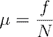
El desgaste del UHMWPE es el factor crítico en la artroplastia de cadera y rodilla. Con cada paso, se generan aproximadamente 150,000 partículas microscópicas de polietileno (muchas inferiores a 1 ), las cuales migran hacia la interfase hueso-implante.
Los macrófagos identifican estas partículas como cuerpos extraños e inician un proceso de fagocitosis que libera citocinas inflamatorias, derivando en osteólisis (destrucción ósea focal) y el subsecuente aflojamiento aséptico del implante.
Para combatir este fenómeno, se han desarrollado polietilenos con enlaces cruzados mediante radiación gamma, que ofrecen una resistencia al desgaste significativamente mayor.
· Fallo aséptico: Es la causa más común de revisión, derivada de la osteólisis por partículas de desgaste o el fallo mecánico de la interfase cementada.
· Infección: Un proceso catastrófico donde las bacterias forman biopelículas sobre el material inerte, requiriendo generalmente la retirada del implante.
· Luxación: Ocurre cuando la cabeza protésica pierde contacto con el receptáculo acetabular o glenoideo, a menudo por desequilibrio en la tensión de los tejidos blandos o mal posicionamiento de los componentes.
En conclusión, la ingeniería de prótesis articulares evoluciona hacia diseños biocinéticos que buscan no solo reemplazar la forma anatómica, sino replicar fielmente la cinemática compleja y la distribución de cargas natural del cuerpo humano, utilizando para ello simuladores robóticos y modelos matemáticos de optimización dinámica.
5. Biomecánica de la columna vertebral (CV).
5.1 Función, elementos constituyentes y anatomía de la columna vertebral.
FUNCIÓN, ELEMENTOS CONSTITUYENTES Y ANATOMÍA DE LA COLUMNA VERTEBRAL
La columna vertebral, considerada desde la óptica de la ingeniería biomecánica, representa una de las estructuras más sofisticadas y complejas del organismo humano.
Se conceptualiza fundamentalmente como una varilla elástica modificada que debe satisfacer simultáneamente dos imperativos mecánicos que, en cualquier diseño industrial convencional, resultarían contradictorios: proporcionar un soporte rígido para el mantenimiento de la postura erguida y, al mismo tiempo, ofrecer una flexibilidad multidireccional que permita la locomoción y la manipulación del entorno.
Actuando como el eje primordial del esqueleto axial, esta estructura no solo establece una conexión cinemática robusta entre las extremidades superiores e inferiores, sino que también funge como un conducto de protección crítica para la médula espinal y las raíces nerviosas, alojándolas en un canal vertebral blindado por tejido óseo de alta resistencia.
Arquitectura Anatómica y Segmentación Regional
El raquis humano está constituido normalmente por una serie de 33 vértebras superpuestas y articuladas, de las cuales 24 son elementos móviles independientes.
Esta segmentación no es aleatoria, sino que responde a una especialización funcional según la región anatómica que ocupen y las cargas mecánicas a las que estén sometidas.
Las vértebras se distribuyen en cinco regiones cardinales:
· Región Cervical (C1-C7): Compuesta por siete vértebras diseñadas primordialmente para la movilidad y la orientación cefálica. Destacan por ser las más pequeñas y poseer forámenes en sus procesos transversos para el paso de arterias vertebrales.
· Región Torácica (T1-T12): Consta de doce vértebras cuya movilidad está significativamente restringida por su articulación con la caja torácica, priorizando la protección de los órganos mediastínicos.
· Región Lumbar (L1-L5): Formada por cinco vértebras masivas con cuerpos de gran sección transversal, diseñadas para soportar las mayores cargas compresivas del sistema esquelético.
· Región Sacra (S1-S5): Cinco vértebras que, en el adulto, se encuentran fusionadas en una única estructura en forma de cuña (el sacro) para transmitir el peso hacia la cintura pélvica.
· Región Coccígea: Tres a cinco vértebras rudimentarias fusionadas que representan el vestigio caudal del eje vertebral.
ELEMENTOS CONSTITUYENTES Y RESISTENCIA DE MATERIALES
Cada vértebra típica se compone de dos porciones funcionales distintas: el cuerpo vertebral anteriormente, que es la parte más grande y cilíndrica encargada de la resistencia a la compresión, y el arco vertebral posteriormente, que delimita el foramen vertebral.
El cuerpo vertebral presenta una arquitectura de ingeniería optimizada consistente en un núcleo de hueso trabecular (esponjoso) altamente vascularizado, rodeado por una delgada pero rígida capa de hueso cortical.
Esta configuración permite una absorción eficiente de impactos mediante la deformación de las trabéculas verticales y horizontales.
Los discos intervertebrales, situados entre los cuerpos vertebrales, actúan como amortiguadores hidráulicos viscoelásticos, compuestos por un núcleo pulposo rico en agua y un anillo fibroso de laminillas concéntricas de fibrocartílago que restringen la deformación radial bajo carga.
La estabilidad de este conjunto está reforzada por un sistema de ligamentos longitudinales y segmentarios que actúan como "vientos" o tensores de un mástil.
El ligamento longitudinal anterior, por ejemplo, es el único que resiste la hiperextensión, mientras que el ligamento amarillo, gracias a sus propiedades elásticas, mantiene una pretensión constante sobre el disco incluso en posición neutra.
Curvaturas Fisiológicas y Optimización Mecánica
Desde el plano sagital, la columna vertebral del adulto no es rectilínea, sino que presenta cuatro curvaturas alternantes que incrementan exponencialmente su resistencia mecánica ante esfuerzos axiales.
Las curvaturas torácica y sacra se denominan primarias o cifosis (convexas posteriormente) debido a que se desarrollan durante el periodo fetal.
Por el contrario, las curvaturas cervical y lumbar son secundarias o lordosis (cóncavas posteriormente) y se adquieren durante la lactancia y la infancia como respuesta adaptativa al levantamiento de la cabeza y a la asunción de la bipedestación, respectivamente.
La importancia de estas curvas se resume en una relación matemática fundamental utilizada en bioingeniería para calcular la resistencia relativa ( ) de una columna con curvas móviles ( ) en comparación con una columna recta:
De acuerdo con esta ecuación, una columna con las tres curvas móviles fisiológicas (cervical, torácica y lumbar) posee una resistencia diez veces superior ( ) a la de una estructura perfectamente vertical, lo que demuestra la eficiencia del diseño biológico para la absorción de energía y choques.
Resumen Regional de la Columna Vertebral
|
Región |
Nº Vértebras |
Tipo de Curva |
Grado de Movilidad |
Función Principal de Ingeniería |
|
Cervical |
7 |
Lordosis (Secundaria) |
Muy Alta |
Soporte cefálico y amplio rango de movimiento. |
|
Torácica |
12 |
Cifosis (Primaria) |
Baja |
Protección de vísceras y anclaje costal. |
|
Lumbar |
5 |
Lordosis (Secundaria) |
Alta |
Soporte de carga mayoritaria y transferencia de potencia. |
|
Sacra |
5 (fused) |
Cifosis (Primaria) |
Nula (Rígida) |
Transmisión de peso a la pelvis y base estable. |
|
Coccígea |
3-5 (fused) |
Cifosis (Primaria) |
Nula |
Inserción muscular y ligamentosa terminal. |
5.2 Unidad funcional de la CV.
UNIDAD FUNCIONAL DE LA COLUMNA VERTEBRAL (CV)
La unidad funcional de la columna vertebral, denominada técnicamente como segmento de movimiento o segmento de Schmorl, representa el componente biomecánico mínimo e indivisible capaz de replicar el comportamiento mecánico complejo del raquis en su totalidad. Desde una perspectiva de ingeniería estructural, esta unidad se define como un conjunto mecánico compuesto por dos vértebras adyacentes vinculadas rítmicamente por un disco intervertebral, un sistema de ligamentos y dos articulaciones sinoviales posteriores conocidas como articulaciones apofisarias o cigapofisarias.
La integridad funcional de este segmento es crítica, ya que la sumatoria de los micro-movimientos permitidos en cada una de estas unidades es lo que faculta al tronco para realizar amplios rangos de flexo-extensión, inclinación lateral y rotación axial, manteniendo simultáneamente la protección del conducto vertebral donde se aloja la médula espinal. El modelado analítico de este sistema permite su subdivisión en dos pilares funcionales con roles mecánicos especializados pero interdependientes: el pilar anterior y el pilar posterior. Esta organización cinemática puede describirse bajo los siguientes parámetros estructurales:
· Pilar Anterior: Conformado por los cuerpos vertebrales, el disco intervertebral y los ligamentos longitudinales anterior y posterior. Su función primordial es la de soporte estático y amortiguación hidrostática de las cargas axiales.
· Pilar Posterior: Integrado por el arco neural (pedículos y láminas), las apófisis transversas y espinosas, los ligamentos segmentarios y las articulaciones apofisarias. Este pilar desempeña una función dinámica, actuando como guía del movimiento y restricción cinemática ante desplazamientos excesivos.
· Articulaciones Cigapofisarias: Son las únicas articulaciones sinoviales de la columna, cuyas carillas articulares determinan, según su orientación espacial en cada región, los planos de movimiento permitidos y prohibidos.
· Conducto Vertebral: El espacio delimitado por la unión del pilar anterior y el posterior forma un foramen o canal que sirve de blindaje óseo para el tejido nervioso.
MECÁNICA DEL DISCO INTERVERTEBRAL COMO AMORTIGUADOR HIDRÁULICO
El disco intervertebral es el elemento central de transferencia de carga en el pilar anterior, funcionando bajo principios hidrostáticos y viscoelásticos avanzados.
Estructuralmente, se compone de un núcleo pulposo central, una masa de gel con un contenido hídrico de entre el 80% y 90%, y un anillo fibroso periférico constituido por capas concéntricas de colágeno orientadas en ángulos alternantes de 45° a 65°. Esta configuración permite que el núcleo actúe como un distribuidor de presiones; bajo una carga de compresión axial, el núcleo se deforma radialmente, tensando las fibras del anillo y transformando el esfuerzo de compresión vertical en una tensión circunferencial de gran magnitud.
Matemáticamente, la eficiencia del disco para soportar cargas se basa en su capacidad para distribuir el estrés ( ) de forma uniforme sobre las placas terminales de las vértebras adyacentes, minimizando picos de carga localizada.
La relación fundamental entre la fuerza aplicada ( ) y el área de contacto ( ) rige la presión intradiscal:
Incluso en ausencia de cargas externas, el disco se encuentra en un estado de pre-compresión o pretensión debido a la hidrofilia intrínseca del núcleo, lo que aumenta la estabilidad articular ante fuerzas de cizallamiento y torsión. En un estado de equilibrio estático, las fuerzas de tensión en el anillo fibroso pueden alcanzar magnitudes de entre cuatro y cinco veces la carga axial aplicada originalmente al segmento.
Dinámica Segmentaria y Analogía de la Palanca
La interacción entre los pilares anterior y posterior de la unidad funcional se modela frecuentemente mediante una palanca de primer grado.
En este modelo biomecánico, las articulaciones cigapofisarias (pilar posterior) actúan como el punto de apoyo o fulcro, mientras que el disco intervertebral (pilar anterior) y la musculatura erectora de la espalda representan los brazos de resistencia y potencia, respectivamente.
Este sistema permite que la columna actúe como una estructura hinchable y presurizada, donde la contracción de la musculatura abdominal y el aumento de la presión intra-abdominal contribuyen a descargar el eje vertebral durante esfuerzos de levantamiento de pesas.
Comparativa Funcional de los Pilares de la Unidad Funcional
|
Componente |
Pilar Anterior |
Pilar Posterior |
|
Estructuras Clave |
Cuerpo vertebral y Disco intervertebral. |
Arcos neurales y Articulaciones apofisarias. |
|
Función Mecánica |
Soporte de carga axial y amortiguación. |
Guía del movimiento y estabilidad dinámica. |
|
Tipo de Tejido Dominante |
Fibrocartílago y Hueso Esponjoso. |
Hueso Cortical (duro) y Ligamentos elásticos. |
|
Resistencia Principal |
Compresión hidrostática. |
Tensión ligamentosa y Cizallamiento óseo. |
|
Grados de Libertad |
Limitados por la rigidez del disco. |
Definen la cinemática regional (6 gl por segmento). |
La unidad funcional posee teóricamente seis grados de libertad, permitiendo tres movimientos rotatorios y tres traslatorios sobre los ejes cartesianos, aunque la magnitud de estos últimos es mínima en condiciones fisiológicas normales.
El equilibrio dinámico de este sistema se mantiene gracias a los ligamentos posteriores, como el ligamento amarillo, el cual posee propiedades elásticas únicas que le permiten mantener una tensión constante sobre el disco incluso en posiciones neutras, protegiendo las fibras del anillo de deformaciones radiales excesivas durante la flexión del tronco.
La pérdida de este equilibrio ya sea por deshidratación del núcleo o por fatiga de las fibras anulares, es el precursor mecánico de patologías degenerativas y hernias discales.
5.3 Deterioro de la CV.
DETERIORO DE LA COLUMNA VERTEBRAL (CV)
El deterioro de la columna vertebral es un proceso multifactorial complejo que involucra la degradación progresiva de sus componentes cinemáticos y estructurales, derivando en una alteración de la homeostasis biomecánica del tronco.
Desde una perspectiva de ingeniería de materiales, este deterioro se manifiesta como una pérdida de la capacidad de carga, una reducción en la elasticidad de los tejidos conectivos y una alteración de la geometría articular que compromete la estabilidad global del sistema.
Este proceso se asocia intrínsecamente con el envejecimiento cronológico, pero también es exacerbado por factores mecánicos extrínsecos como las cargas cíclicas repetitivas, traumatismos agudos y posturas ergonómicamente desfavorables que superan el umbral de fatiga de los tejidos óseos y fibrocartilaginosos.
Clínicamente, el deterioro se traduce en una tríada de síntomas que incluye dolor crónico, rigidez articular y, en estadios avanzados, compromisos neurológicos derivados de la estenosis de los conductos nerviosos.
MECÁNICA DEL ENVEJECIMIENTO DISCAL Y DESHIDRATACIÓN DEL NÚCLEO
El componente central del deterioro vertebral reside en la degeneración del disco intervertebral, el cual experimenta cambios bioquímicos y estructurales profundos con el paso de las décadas.
En un estado juvenil y saludable, el núcleo pulposo posee un contenido hídrico cercano al 90%, lo que le permite funcionar como un distribuidor hidrostático eficiente de presiones axiales.
Sin embargo, con el envejecimiento, se observa una reducción crítica en la concentración de proteoglucanos y elastina, acompañada de un incremento compensatorio pero disfuncional de fibras de colágeno, lo que reduce la turgencia del gel nuclear.
Esta deshidratación disminuye la presión interna del núcleo, limitando su capacidad para tensar las fibras del anillo fibroso y absorber energía mecánica.
· Reducción de la altura discal: Durante el ciclo circadiano normal, la columna pierde entre 15 y 25 mm de longitud por la extrusión de agua bajo carga, la cual se recupera durante el reposo nocturno. Con el envejecimiento, esta recuperación es incompleta debido a la pérdida de hidrofilia, resultando en una pérdida permanente de estatura.
· Redistribución de tensiones: La pérdida de volumen discal causa que el anillo fibroso protruya radialmente hacia afuera, incrementando la carga axial sobre las articulaciones apofisarias posteriores, las cuales no están diseñadas para el soporte de carga mayoritario.
· Microfracturas de las placas terminales: Las fuerzas compresivas repetitivas pueden generar microfracturas en el cartílago de las placas terminales, impidiendo el intercambio de nutrientes por difusión y acelerando la necrosis del tejido discal.
ALTERACIONES MORFOLÓGICAS Y PATOLOGÍAS DEGENERATIVAS
La degeneración discal no ocurre de forma aislada, sino que desencadena una respuesta adaptativa en las estructuras óseas adyacentes de acuerdo con las leyes de remodelación mecánica.
Al estrecharse el espacio intervertebral, los ligamentos circundantes se aflojan y las superficies articulares cigapofisarias experimentan fricciones anormales, lo que conduce a la formación de osteofitos o espolones óseos.
Estos crecimientos óseos representan un intento del organismo por aumentar el área de superficie de contacto para reducir el estrés mecánico aplicado, siguiendo la ecuación fundamental:
Donde es el estrés, la fuerza y el área.
No obstante, estos osteofitos a menudo invaden el foramen intervertebral, comprimiendo las raíces nerviosas y causando neuropatías.
Asimismo, el deterioro puede progresar hacia la espondilolistesis, que es el desplazamiento anterior de un cuerpo vertebral sobre otro, frecuentemente secundario a una espondilólisis o fractura por estrés en la pars interarticularis.
Comparativa de la Integridad Estructural en el Envejecimiento Vertebral
|
Parámetro Biomecánico |
Estado Joven / Saludable |
Estado Envejecido / Deteriorado |
Efecto Mecánico Resultante |
|
Hidratación del Núcleo |
88% - 90% |
~70% |
Pérdida de amortiguación hidrostática. |
|
Resistencia a la Compresión |
13,000 N |
3,700 N |
Incremento del riesgo de fractura por compresión. |
|
Altura del Disco |
Normal (Cojín eficiente) |
Reducida (~20% menos) |
Estrés en articulaciones posteriores. |
|
Curvaturas Sagitales |
Fisiológicas (Lordosis/Cifosis) |
Cifosis aumentada / Lordosis reducida |
Alteración del equilibrio del centro de masa. |
|
Elasticidad Ligamentosa |
Alta (Pretensión estable) |
Reducida (Fibrosis/Laxitud) |
Inestabilidad en los grados de libertad. |
OTEOPOROSIS Y FRACTURAS POR COMPRESIÓN
Una de las manifestaciones más críticas del deterioro sistémico es la osteoporosis, una enfermedad metabólica caracterizada por la desmineralización neta y la atrofia del tejido óseo trabecular.
En la columna vertebral, esta patología afecta preferentemente a las trabéculas horizontales de los cuerpos vertebrales, dejando a los puntales verticales sin soporte lateral.
Bajo estas condiciones, la vértebra se vuelve extremadamente quebradiza y pierde su elasticidad intrínseca.
Las fuerzas compresivas de la vida diaria, que normalmente serían toleradas sin dificultad, provocan el colapso del cuerpo vertebral, que adquiere una forma de cuña o bicóncava.
Este colapso estructural es el principal responsable de la cifosis excesiva (giba) en adultos mayores, lo que a su vez reduce la capacidad dinámica pulmonar debido a la deformación del tórax.
INESTABILIDADES MECÁNICAS Y HERNIA DEL NÚCLEO PULPOSO
El deterioro terminal de la unidad funcional a menudo resulta en la ruptura de la barrera anular y la consecuente hernia del núcleo pulposo.
Este fenómeno ocurre cuando las fibras del anillo fibroso, debilitadas por la fatiga mecánica o la degeneración mucoide, ceden ante picos de presión interna provocados por flexiones extremas o rotaciones violentas del tronco. El material nuclear extruido puede comprimir directamente la médula espinal o las raíces de la cauda equina, desencadenando dolor radicular severo (ciática) y déficits motores.
La cicatrización de estas lesiones es limitada debido a la naturaleza avascular del disco, lo que convierte a la hernia en un marcador de daño irreversible que a menudo requiere intervención quirúrgica, como la laminectomía o la fusión espinal (artrodesis), para restaurar la estabilidad mecánica y descomprimir el tejido nervioso.
6. Dinámica de fluidos cardiovasculares.
6.1 Modelos mecánicos cardiacos.
MODELOS MECÁNICOS CARDIACOS
El modelado biomecánico del corazón representa uno de los pilares más complejos de la ingeniería biomédica, ya que implica la integración de la electrofisiología, la mecánica de sólidos de grandes deformaciones y la dinámica de fluidos pulsátiles.
Desde una perspectiva sistémica, el corazón opera como una bomba electromecánica de succión y compresión autoadaptable, cuya función es generar el gradiente de presión necesario para impulsar el flujo sanguíneo a través de los circuitos pulmonar y sistémico.
El desarrollo de modelos matemáticos rigurosos es esencial no solo para comprender la fisiopatología, sino también para fundamentar el diseño de sistemas de asistencia ventricular y corazones artificiales totales.
Modelado Fenomenológico: El Modelo de Hill y su Adaptación Cardiaca
Uno de los enfoques fundamentales para describir el comportamiento mecánico del miocardio es el modelo propuesto por A.V. Hill, originalmente derivado de experimentos en músculo esquelético pero adaptado extensivamente a la dinámica cardiaca.
Este modelo se basa en una arquitectura de tres componentes mecánicos que interactúan sinérgicamente para predecir la generación de fuerza y la velocidad de acortamiento:
· Componente Contráctil (CC): Representa la maquinaria molecular de las proteínas contráctiles (actina y miosina). En este componente se genera la fuerza activa tras la estimulación eléctrica.
· Componente Elástico en Serie (CES): Representa la elasticidad intrínseca de los puentes cruzados y los tendones. Su función es transmitir la fuerza generada por el CC a los extremos del músculo.
· Componente Elástico en Paralelo (CEP): Representa las estructuras pasivas como el sarcolema y el tejido conectivo (colágeno) que rodea las fibras. A diferencia del músculo esquelético, la tensión en reposo del CEP es un determinante crítico de la función diastólica cardiaca.
Debido a que el corazón opera mediante contracciones discretas (sacudidas) y no alcanza estados tetánicos, la ecuación original de Hill debe ser modificada para incluir una función característica del tiempo, , que describa el "estado activo" del músculo.
Una de las representaciones matemáticas más precisas para la velocidad de acortamiento del elemento contráctil ( ) en el miocardio es:
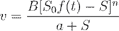
Donde es
la tensión isométrica pico, es la carga
instantánea,  y
y  son constantes del
material y el exponente se introduce para
corregir desviaciones en regiones de alta carga.
son constantes del
material y el exponente se introduce para
corregir desviaciones en regiones de alta carga.
Caracterización Geométrica y Stress Ventricular
Para el análisis de tensiones, los ventrículos se modelan como recipientes de presión de pared gruesa con geometrías complejas que cambian drásticamente durante el ciclo cardiaco.
Una aproximación común en ingeniería es el uso de modelos de cáscara semi-elipsoidal o elipsoides truncados, definidos mediante coordenadas esferoidales prolatas .
La relación entre la presión intracavitaria ( ) y el estrés de la pared ( ) puede aproximarse mediante la ley de Laplace adaptada para elipsoides de pared delgada, aunque en modelos de ingeniería de doctorado se deben considerar los gradientes de espesor transmurales:
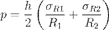
Donde representa el espesor de la pared (típicamente entre 8 y 15 mm en el ventrículo izquierdo), y son los radios de curvatura principales.
Es imperativo notar que el miocardio presenta una arquitectura fibrilar helicoidal donde la orientación de las fibras varía continuamente desde el epicardio (aprox. -60°) hasta el endocardio (aprox. +70°), lo que introduce una anisotropía significativa en el tensor de esfuerzos.
Dimensiones Representativas del Ventrículo Izquierdo (Humanos vs. Caninos)
|
Parámetro |
Especie Canina (21 kg) |
Especie Humana (Normal) |
Relevancia en el Modelado |
|
Radio Interno (mm) |
16 - 19 |
24 |
Define el volumen de la cavidad. |
|
Radio Externo (mm) |
26 - 28 |
32 |
Determina el volumen de la pared. |
|
Espesor de Pared (mm) |
10 - 12 |
8 - 15 |
Crucial para el cálculo de estrés. |
|
Presión Sistólica (mmHg) |
~120 |
100 - 150 |
Límite superior de carga de eyección. |
Dinámica de la Elastancia y el Bucle Presión-Volumen
El rendimiento mecánico global de los ventrículos se caracteriza a menudo mediante el concepto de elastancia dependiente del tiempo , que mide la rigidez instantánea de la cámara cardiaca.
Este modelo permite desacoplar las propiedades intrínsecas del corazón de las propiedades de la vasculatura (carga), definiéndose como:
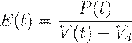
Donde y son la presión y el volumen instantáneos, y es el volumen muerto o teórico a presión cero.
Este enfoque fundamenta la Ley de Frank-Starling, la cual establece que el corazón posee una capacidad intrínseca de adaptar su fuerza de contracción proporcionalmente al grado de estiramiento inicial de sus fibras (precarga).
· ESPVR (Relación Presión-Volumen de Fin de Sístole): Representa el límite superior de la capacidad contráctil del ventrículo y es aproximadamente lineal.
· EDPVR (Relación Presión-Volumen de Fin de Diámetro): Describe las propiedades elásticas pasivas del ventrículo durante el llenado.
· Bucle Presión-Volumen: El área encerrada por este bucle durante un ciclo cardiaco representa el Trabajo Sistólico (Stroke Work), una medida directa de la energía mecánica entregada a la circulación.
Energética y Eficiencia Mecánica
El análisis de la eficiencia cardiaca requiere el cálculo del área de presión-volumen total (PVA), la cual incluye tanto el trabajo sistólico ( ) como la energía potencial elástica acumulada en la pared al final de la sístole.
El PVA se correlaciona linealmente con el consumo de oxígeno del miocardio ( ), permitiendo evaluar el costo metabólico de las intervenciones terapéuticas o el uso de dispositivos de asistencia.
Matemáticamente, el trabajo externo ( ) realizado por el ventrículo se expresa mediante la integral:
En el diseño de dispositivos de asistencia ventricular (LVAD), se emplean estos modelos para asegurar que el sistema artificial reduzca la carga de trabajo del ventrículo nativo, desplazando el bucle de presión-volumen hacia la izquierda y disminuyendo el PVA, lo que favorece la recuperación del miocardio "aturdido" o insuficiente.
6.2 Dinámica de las válvulas.
DINÁMICA DE LAS VÁLVULAS
La dinámica de las válvulas cardíacas constituye un problema de interacción fluido-estructura (FSI) de alta complejidad, donde las estructuras valvulares operan como dispositivos de control de flujo pasivos y unidireccionales que responden estrictamente a los gradientes de presión transvalvulares generados por el miocardio.
El sistema consta de cuatro válvulas principales: las auriculoventriculares (mitral y tricúspide), que separan los atrios de los ventrículos, y las semilunares (aórtica y pulmonar), situadas en las raíces de las grandes arterias de salida.
Desde una perspectiva mecánica, estas estructuras deben garantizar un sellado hermético ante presiones diastólicas que alcanzan los 80 mmHg en la aorta, mientras que en la sístole deben ofrecer una resistencia mínima al flujo eyectado, el cual puede alcanzar velocidades de hasta 1.35 m/s en individuos sanos.
La apertura y el cierre súbito de estas valvas son los responsables directos de los ruidos cardíacos fundamentales, denominados clínicamente como "lub" (cierre de las AV) y "dup" (cierre de las semilunares).
MODELADO FÍSICO-MATEMÁTICO DE LA APERTURA Y CIERRE VALVULAR
Para el análisis de ingeniería, la apertura de una válvula, particularmente la aórtica, se modela como el movimiento de una superficie cónica deformable inmersa en un fluido incompresible y no viscoso (flujo ideal).
La fase de apertura inicial es extremadamente rápida, completándose en un intervalo de 20 a 30 milisegundos. El modelado matemático de este fenómeno emplea la conservación de la masa para un volumen de control cónico ( ) cuyas paredes se desplazan con una velocidad angular ( ):
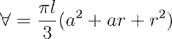
Donde  es
el radio de la base,
es
el radio de la base,  el radio en la punta
de las cúspides y la longitud axial.
La diferencia de presión ( ) entre la raíz de
la cúspide y su punta durante la fase de desaceleración se deriva de la
ecuación de Bernoulli para flujo inestable, integrando la aceleración local del
fluido a lo largo del eje del vaso:
el radio en la punta
de las cúspides y la longitud axial.
La diferencia de presión ( ) entre la raíz de
la cúspide y su punta durante la fase de desaceleración se deriva de la
ecuación de Bernoulli para flujo inestable, integrando la aceleración local del
fluido a lo largo del eje del vaso:
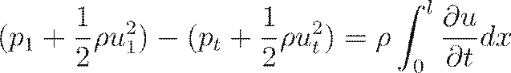
· Vorticidad y Cierre: El cierre eficiente de las válvulas semilunares no depende únicamente del gradiente de presión inverso; se ve asistido por la formación de vórtices en los senos de Valsalva situados detrás de los folletos, los cuales empujan las valvas hacia el centro del lumen antes de que cese el flujo anterógrado.
· Anclaje Mecánico: A diferencia de las semilunares, las válvulas AV poseen cuerdas tendinosas y músculos papilares que actúan como tensores para evitar el prolapso o inversión de las valvas hacia los atrios durante la sístole ventricular.
· Perfiles de Velocidad: Los perfiles de flujo a través de las válvulas no son planos, sino que presentan asimetrías y sesgos (skewed profiles) debido a la geometría del tracto de salida y la curvatura de la aorta.
CINEMÁTICA COMPARATIVA Y PARÁMETROS HEMODINÁMICOS
La caracterización cinemática de las válvulas revela disparidades significativas en las magnitudes de velocidad y los tiempos de operación entre el corazón izquierdo y derecho, reflejando las diferentes demandas de presión de los circuitos sistémico y pulmonar.
En la válvula mitral, el llenado ventricular presenta un patrón bimodal característico: la onda E (llenado rápido inicial por succión diastólica) y la onda A (aceleración secundaria por contracción atrial).
Parámetros Cinemáticos de las Válvulas Cardíacas (Sujeto Adulto Sano)
|
Válvula |
Velocidad Pico Típica (m/s) |
Tiempo de Apertura (ms) |
Diferencial de Presión de Cierre (mmHg) |
|
Aórtica |
1.35 ± 0.35 |
20 - 30 |
~80 |
|
Pulmonar |
0.75 ± 0.15 |
- |
~15 |
|
Mitral (Onda E) |
0.50 - 0.80 |
- |
- |
|
Tricúspide |
< 0.50 |
- |
- |
DINÁMICA DE VÁLVULAS MECÁNICAS Y FENÓMENOS TRANSITORIOS
En el ámbito de las prótesis valvulares mecánicas, la dinámica de cierre introduce fenómenos tribológicos y fluidodinámicos críticos para la longevidad del implante y la salud del paciente.
Cuando el oclusor (disco o bivalva) impacta contra el asiento de la válvula, se generan transitorios de presión extremadamente altos en fracciones de milisegundo.
· Cavitación: Se han documentado presiones negativas que caen por debajo de la presión de vapor del líquido, induciendo la formación de burbujas de cavitación. El colapso violento de estas burbujas se asocia con la lisis de eritrocitos y plaquetas, así como con la erosión ("pitting") del carbón pirolítico del alojamiento de la válvula.
· Fugas por Holgura (Leakage): En la posición de cierre total, existe un flujo de fuga a través de las tolerancias mecánicas que genera esfuerzos de cizallamiento en la pared (Wall Shear Stress) lo suficientemente elevados como para inducir trombogenicidad.
· Estenosis e Insuficiencia: Desde el punto de vista patológico, la estenosis (incapacidad de apertura total) y la insuficiencia (cierre incompleto o regurgitación) transforman el flujo laminar en turbulento, generando remolinos y vibraciones audibles conocidas como soplos.
En conclusión, la dinámica valvular integra principios de mecánica de sólidos para el comportamiento de las valvas y dinámica de fluidos pulsátiles para la sangre, donde cualquier alteración en la sincronización o la geometría resulta en una sobrecarga mecánica para el miocardio y una disminución de la eficiencia de bombeo sistémico.
6.3 Modelado de la mecánica de prótesis vasculares.
MODELADO DE LA MECÁNICA DE PRÓTESIS VASCULARES
El modelado biomecánico de las prótesis vasculares representa uno de los desafíos más complejos en la bioingeniería contemporánea, requiriendo una integración profunda entre la mecánica de medios continuos, la hemodinámica pulsátil y la ciencia de biomateriales avanzados.
Desde una perspectiva de ingeniería de nivel doctoral, una prótesis vascular no puede ser analizada simplemente como una tubería inerte; debe considerarse como un componente dinámico dentro de un sistema de interacción fluido-estructura (FSI, por sus siglas en inglés), donde la distensibilidad del injerto y el perfil de flujo sanguíneo interactúan de manera bidireccional y fuertemente acoplada.
El objetivo del modelado es predecir la longevidad del implante, optimizar su geometría para minimizar la trombogenicidad y comprender los mecanismos de fallo, tales como la hiperplasia intimal distal (DAIH) y la migración de stents.
FUNDAMENTOS CINÉTICOS Y ECUACIONES DE GOBIERNO EN SISTEMAS FSI
Para el desarrollo de modelos matemáticos precisos, es imperativo establecer las ecuaciones de gobierno que rigen tanto el dominio del fluido (sangre) como el dominio sólido (pared del vaso e implante).
El flujo sanguíneo se modela generalmente como un fluido incompresible y no newtoniano, utilizando variaciones del modelo de Quemada o Casson para capturar la dependencia de la viscosidad con la tasa de cizalladura parietal (Wall Shear Stress, WSS).
Las ecuaciones de Navier-Stokes para un fluido viscoso e inestable describen la conservación del momentum y la masa:
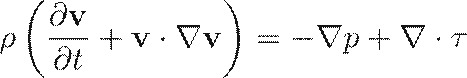
Donde representa
el vector velocidad, la presión escalar, la densidad del
fluido y  el tensor de
esfuerzos de cizalladura.
el tensor de
esfuerzos de cizalladura.
Paralelamente, la dinámica estructural del implante se rige por la conservación del momentum sólido, donde el vector aceleración vincula la respuesta mecánica del material con las cargas de presión aplicadas por el fluido:
En este contexto, es el tensor de esfuerzos mecánicos y representa las fuerzas de cuerpo por unidad de masa.
La interfase entre ambos dominios debe satisfacer condiciones de equilibrio de fuerzas y continuidad de velocidades, lo que a menudo requiere algoritmos numéricos iterativos como el método Arbitrary Lagrangian-Eulerian (ALE) para gestionar las grandes deformaciones de la pared vascular.
BIOMECÁNICA DE LOS INJERTOS DE BYPASS Y LA HIPERPLASIA INTIMAL DISTAL (DAIH)
El éxito clínico de los injertos de bypass, particularmente en aplicaciones por debajo de la rodilla utilizando materiales sintéticos como ePTFE o Dacron, está intrínsecamente limitado por la formación de DAIH en la anastomosis distal.
El modelado computacional ha identificado que este proceso patológico es gatillado por parámetros hemodinámicos específicos que alteran la homeostasis celular del endotelio. Los factores críticos analizados incluyen:
· Esfuerzo de cizalladura parietal bajo y oscilatorio (WSS/OSI): Regiones con magnitudes de WSS inferiores a 0.5 Pa se correlacionan directamente con la proliferación de células de músculo liso (SMC).
· Gradientes temporales y espaciales de WSS (WSSG): Variaciones abruptas en el vector de cizalladura inducen disfunción endotelial y aumentan la permeabilidad de la pared.
· Desajuste de compliancia (Compliance Mismatch): La diferencia de rigidez entre el injerto sintético y la arteria nativa genera picos de estrés intramural en la línea de sutura, promoviendo el fallo del injerto.
· Tiempo de residencia de partículas (NWRT): El estancamiento de plaquetas y monocitos cerca de la pared facilita su adhesión y la subsecuente cascada inflamatoria.
Propiedades mecánicas representativas de materiales para prótesis vasculares y tejidos
|
Material / Tejido |
Módulo Elástico ( ) [MPa] |
Densidad ( ) [ ] |
Coeficiente de Poisson ( ) |
|
Arteria Normal (Cuello) |
1.0 - 1.2 |
1.12 |
0.49 |
|
Aneurisma (AAA) |
1.2 - 4.66 |
1.12 |
0.45 |
|
Endoprótesis (EVG) |
10.0 - 19.8 |
6.0 |
0.27 |
|
Sangre (Plasma) |
Viscosidad: 0.014 dyn·s/ |
1.05 - 1.056 |
Incompresible |
MODELADO DE ENDOPRÓTESIS VASCULARES (EVG) PARA EL TRATAMIENTO DE ANEURISMAS (AAA)
En el caso del tratamiento de aneurismas de aorta abdominal (AAA), el modelado biomecánico se centra en la capacidad de la endoprótesis vascular (EVG) para "blindar" la pared debilitada del vaso frente a la presión pulsátil.
Las simulaciones FSI han demostrado que una EVG correctamente colocada puede reducir el estrés máximo en la pared del aneurisma hasta 20 veces en comparación con un vaso no tratado.
No obstante, el diseño debe considerar la mecánica de fijación para prevenir la migración axial del dispositivo, fenómeno inducido por el cambio neto en el momentum del flujo sanguíneo y las fuerzas de arrastre (drag forces).
La evaluación del riesgo de fractura o fallo estructural del implante utiliza el criterio de estrés de Von Mises, el cual combina los esfuerzos principales ( ) para determinar la probabilidad de colapso en geometrías complejas:
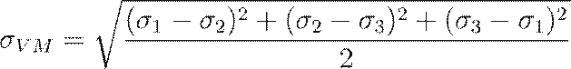
El modelado predictivo también considera la "dilatación del cuello" del aneurisma post-implantación, la cual puede reducir la fuerza de fijación friccional hasta en un 25%, incrementando el riesgo de endofugas (endoleaks) y migración.
La fuerza de migración total es una función de la presión luminal, la inercia del fluido y la fricción en la interfase cuello-implante.
OPTIMIZACIÓN GEOMÉTRICA Y VIRTUAL PROTOTYPING
La bioingeniería avanzada emplea el "prototipado virtual" para diseñar prótesis que mimeticen la función fisiológica original.
Mediante el uso de herramientas de dinámica de fluidos computacional (CFD) y el Método de Elementos Finitos (FEM), los investigadores evalúan configuraciones anastomóticas no convencionales, como entradas curvas (concave-up) o injertos con expansión distal, que buscan redistribuir los campos de WSS de manera más uniforme y reducir las zonas de estancamiento.
· Modelos de Reducción de Ruptura: La integración de datos de Angiografía por Resonancia Magnética (MRA) permite construir modelos específicos de cada paciente para evaluar el SP (Severity Parameter) y decidir sobre la intervención quirúrgica.
· Stents Bioabsorbibles: Se modela la degradación temporal del material para asegurar que el soporte estructural se mantenga durante la fase crítica de remodelación vascular sin causar obstrucciones crónicas.
· Leyes de Laplace y Remodelación: Aunque la ley de Laplace ( ) ofrece una aproximación inicial para tensiones circunferenciales en tubos de pared delgada, los modelos doctorales deben considerar la no linealidad del módulo de Young y la anisotropía del material compuesto.
En conclusión, el modelado de la mecánica de prótesis vasculares ha evolucionado de análisis estáticos simples a simulaciones FSI tridimensionales y pulsátiles que permiten predecir no solo el fallo mecánico del material, sino también la respuesta biológica del tejido circundante ante estímulos mecánicos alterados.
6.4 Dispositivos de asistencia cardiaca.
DISPOSITIVOS DE ASISTENCIA CARDIACA
En el ámbito de la ingeniería biomédica avanzada, los dispositivos de asistencia cardiaca (DAC) representan sistemas mecánicos y electromecánicos diseñados para suplementar o reemplazar la función de bombeo del corazón nativo cuando este es incapaz de satisfacer las demandas metabólicas del organismo.
Estos dispositivos se han convertido en una intervención crítica para pacientes con insuficiencia cardiaca terminal, operando bajo dos paradigmas principales: como "puente hacia el trasplante" (bridge to transplant), manteniendo la viabilidad del paciente hasta la disponibilidad de un órgano donante, o como "terapia de destino" (destination therapy), donde el implante actúa como una solución permanente para mejorar la calidad de vida y la longevidad.
Desde un enfoque de diseño, estos sistemas deben gestionar flujos sanguíneos significativos (típicamente de 5 a 10 L/min) minimizando el trauma mecánico a los elementos formes de la sangre y asegurando una biocompatibilidad hemorrágica total.
DISPOSITIVOS DE ASISTENCIA VENTRICULAR (VAD)
Los Dispositivos de Asistencia Ventricular (VAD), específicamente los de asistencia ventricular izquierda (LVAD), son bombas que extraen sangre del ventrículo izquierdo o del atrio izquierdo y la impulsan directamente hacia la aorta ascendente, reduciendo drásticamente la carga de trabajo y el consumo de oxígeno del miocardio nativo.
Mecánicamente, estos dispositivos han evolucionado a través de varias generaciones tecnológicas:
· Bombas Pulsátiles: Dispositivos de primera generación que mimetizan el ritmo fisiológico del corazón mediante el uso de diafragmas o sacos flexibles accionados neumática o eléctricamente (ej. HeartMate IP y XVE). Poseen cámaras de bombeo con válvulas unidireccionales para asegurar el flujo anterógrado.
· Bombas de Flujo Continuo: Sistemas contemporáneos basados en bombas de flujo axial o centrífugo que utilizan rotores de levitación magnética o cojinetes hidrodinámicos para impulsar la sangre de forma constante (ej. HeartMate II, Jarvik 2000). Estos dispositivos son significativamente más pequeños, duraderos y eficientes, permitiendo que el paciente no presente pulso palpable en algunos casos.
· Sistemas de Transmisión de Energía: La energía necesaria para el funcionamiento continuo se suministra habitualmente mediante cables percutáneos conectados a baterías externas, aunque se han desarrollado sistemas de Transmisión de Energía Transcutánea (TET) que utilizan inducción electromagnética para eliminar la necesidad de atravesar la barrera de la piel, reduciendo así el riesgo de infección.
Para caracterizar el flujo en estos dispositivos, el ingeniero debe evaluar el Número de Reynolds ( ), el cual determina si el régimen de flujo es laminar o turbulento, factor crítico para la predicción de hemólisis y trombosis:
Donde es la densidad de la sangre (~1.056 g/cm³), es la velocidad del flujo, el diámetro del conducto y la viscosidad dinámica (~3.0 centipoise).
Un elevado en las zonas de las aspas del rotor o en las válvulas protésicas puede inducir esfuerzos cortantes superiores al límite de tolerancia de los eritrocitos.
CORAZÓN ARTIFICIAL TOTAL (TAH)
El Corazón Artificial Total (TAH) es un sistema diseñado para reemplazar íntegramente ambos ventrículos y las cuatro válvulas cardiacas tras la escisión del corazón enfermo. A diferencia de los LVAD, el TAH asume la totalidad de la circulación sistémica y pulmonar de forma independiente.
Los modelos históricos como el Jarvik-7 y los contemporáneos como el SynCardia emplean propulsión neumática mediante conductores externos, mientras que sistemas como el AbioCor han integrado motores internos rotatorios que equilibran hidráulicamente el fluido para bombear la sangre.
Comparativa de Dispositivos de Asistencia Circulatoria
|
Dispositivo |
Tipo de Flujo |
Aplicación Principal |
Fuente de Energía |
Materiales Típicos |
|
LVAD (Jarvik 2000) |
Continuo Axial |
Asistencia VI (Terapia Destino) |
Batería Eléctrica |
Titanio pulido, Cerámica |
|
LVAD (HeartMate XVE) |
Pulsátil |
Puente a Trasplante |
Eléctrica / Neumática |
Dacron, Válvula porcina |
|
TAH (SynCardia) |
Pulsátil Biventricular |
Reemplazo Total |
Neumática Externa |
Poliuretanos (Biforme) |
|
TAH (AbioCor) |
Pulsátil Hidráulico |
Reemplazo Total Permanente |
Eléctrica Interna (TET) |
Titanio, Polímeros |
El modelado dinámico del TAH requiere el análisis de las fuerzas que el dispositivo debe resistir debido al cambio de momentum del flujo sanguíneo. La fuerza resultante ( ) en el sistema puede estimarse considerando el flujo volumétrico ( ) y los cambios en los vectores de velocidad a través de las cuatro conexiones principales (venas cavas, arteria pulmonar, venas pulmonares y aorta):
Donde es el flujo másico ( ).
Estos cálculos son esenciales para diseñar los sistemas de anclaje de Dacron que se suturan a los atrios nativos y a las grandes arterias.
BALÓN DE CONTRAPULSACIÓN INTRAAÓRTICO (IABP) Y DINÁMICA DE FLUIDOS
El Balón de Contrapulsación Intraaórtico (IABP) es un dispositivo de asistencia temporal posicionado en la aorta descendente que utiliza el principio de contrapulsación diastólica.
El balón se infla al inicio de la diástole, incrementando la presión aórtica media para potenciar la perfusión de las arterias coronarias, y se desinfla rápidamente justo antes de la sístole, creando un efecto de vacío que reduce la resistencia a la eyección (poscarga) del ventrículo izquierdo.
Desde una perspectiva energética, el trabajo total realizado por un dispositivo de asistencia ( ) para mantener la circulación debe compensar las pérdidas por fricción ( ) en el lecho vascular sistémico:
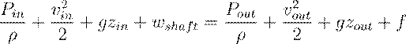
Donde es el trabajo específico aportado por la bomba por unidad de masa. Las investigaciones han demostrado que las pérdidas por fricción en el sistema circulatorio son iguales al trabajo neto realizado por el corazón (o el dispositivo de asistencia) en condiciones de estado estacionario, lo que subraya la necesidad de una entrega continua de energía metabólica o eléctrica para superar la resistencia de las arteriolas y capilares.
RETOS BIOMECÁNICOS Y SELECCIÓN DE MATERIALES
El principal obstáculo en la implementación de DAC de larga duración es la interacción desfavorable entre la sangre y los materiales artificiales, lo que puede derivar en la formación de trombos y embolismos sistémicos.
El diseño avanzado de estos dispositivos busca:
· Evitar Zonas de Estasis: Regiones donde el flujo es lento o nulo promueven la acumulación de factores de coagulación y la adhesión plaquetaria. El uso de simulaciones de Dinámica de Fluidos Computacional (CFD) permite optimizar la geometría interna para asegurar un "lavado" completo en cada ciclo.
· Superficies No Trombogénicas: Se emplean materiales como el titanio altamente pulido, poliuretanos segmentados (Biomer) y recubrimientos de carbono pirolítico que presentan una reactividad mínima con las proteínas plasmáticas. Algunos diseños de LVAD incorporan superficies texturizadas para promover la formación de una capa de neointima biológica estable que oculte el material artificial.
· Minimización de la Cavitación: Durante el cierre súbito de las válvulas mecánicas en dispositivos pulsátiles de alta frecuencia, pueden generarse transitorios de presión negativa que superan la presión de vapor de la sangre, induciendo burbujas de cavitación cuyo colapso violento daña tanto el dispositivo como las células sanguíneas.
En conclusión, los dispositivos de asistencia cardiaca integran principios de mecánica de fluidos inestables y ciencia de materiales para sustituir la función miocárdica insuficiente, evolucionando hacia sistemas más compactos y biocinéticos que buscan una integración armónica y duradera con la fisiología humana.
6.5 Fisiología del sistema circulatorio.
FISIOLOGÍA DEL SISTEMA CIRCULATORIO
El sistema circulatorio humano, analizado desde una perspectiva de ingeniería mecánica y de fluidos, constituye una red de transporte integrada y altamente sofisticada cuya función primordial es la entrega convectiva y distributiva de masa, energía y momentum a todas las unidades celulares del organismo.
Este sistema opera mediante un circuito cerrado de conductos elásticos ramificados que transportan la sangre, un fluido complejo y no-Newtoniano, impulsado por una bomba electromecánica dual que genera los gradientes de presión necesarios para vencer la resistencia periférica.
La arquitectura sistémica se organiza en dos circuitos hemodinámicos conectados en serie: la circulación pulmonar, un sistema de baja presión ( mmHg) encargado del intercambio gaseoso hematogaseoso, y la circulación sistémica, un sistema de alta presión (hasta 140 mmHg o más) que perfunde los órganos vitales y tejidos periféricos.
Esta disposición garantiza que la totalidad del gasto cardíaco pase obligatoriamente por los pulmones para su reoxigenación antes de ser distribuido metabólicamente, optimizando la eficiencia del transporte de oxígeno.
HEMODINÁMICA Y LEYES FUNDAMENTALES DEL FLUJO SANGUÍNEO
La dinámica del flujo en el árbol vascular se rige por leyes físicas que relacionan el flujo volumétrico ( ), el gradiente de presión ( ) y la resistencia hidráulica ( ).
En un análisis estacionario idealizado, el sistema puede modelarse mediante un análogo fluido-dinámico de la ley de Ohm ( ), donde la caída de presión es el producto del flujo por la resistencia periférica:
Donde representa el gasto cardíaco y la suma de todas las resistencias opuestas por la morfología vascular.
Asimismo, debido al principio de conservación de la masa para un fluido incompresible, la velocidad del flujo ( ) es inversamente proporcional al área de la sección transversal total ( ) del lecho vascular, lo que explica por qué la sangre se desacelera drásticamente al transitar de la aorta hacia los capilares, facilitando el tiempo de residencia necesario para el intercambio molecular.
La resistencia en los vasos de régimen laminar se aproxima mediante la ecuación de Poiseuille-Hagen, la cual demuestra que la resistencia es inversamente proporcional a la cuarta potencia del radio vascular ( ):
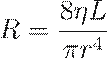
Parámetros Hemodinámicos Típicos en el Sistema Circulatorio Humano
|
Segmento Vascular |
Diámetro Típico (cm) |
Velocidad Media (cm/s) |
Presión Media (mmHg) |
|
Aorta Ascendente |
2.0 – 3.2 |
18 – 63 |
100 |
|
Arterias Principales |
0.2 – 0.6 |
20 – 50 |
85 – 95 |
|
Arteriolas |
0.002 |
0.3 |
30 – 35 |
|
Capilares |
0.0005 – 0.001 |
0.05 – 0.1 |
10 – 20 |
|
Venas y Cavas |
0.5 – 2.0 |
11 – 20 |
0 – 10 |
CARACTERIZACIÓN BIOFÍSICA DE LOS ELEMENTOS VASCULARES Y MICROCIRCULACIÓN
La morfología de los vasos sanguíneos está intrínsecamente adaptada a su función mecánica específica dentro del ciclo circulatorio.
Las grandes arterias elásticas, como la aorta, poseen láminas de elastina que les permiten actuar como un reservorio de presión o Windkessel, expandiéndose durante la sístole para amortiguar el pico de presión y retrayéndose durante la diástole para mantener el flujo anterógrado mientras el corazón se relaja.
Por el contrario, las arteriolas se denominan "vasos de resistencia" debido a su densa capa de músculo liso, cuya vasoconstricción o vasodilatación modula localmente el flujo sanguíneo y determina la presión arterial sistémica.
Los capilares, con paredes compuestas únicamente por una túnica íntima endotelial, representan los "vasos de intercambio" donde se produce la transferencia de nutrientes y desechos mediante procesos de difusión y filtración regidos por la hipótesis de Starling.
La dinámica de fluidos en los capilares depende del balance entre la presión hidrostática ( ) y la presión oncótica ( ) generada por las proteínas plasmáticas.
El flujo de volumen de fluido a través de la pared capilar ( ) se describe mediante la ley de Starling:
· Filtración Arterial: En el extremo proximal del capilar, la presión hidrostática supera a la oncótica, forzando la salida de plasma hacia el líquido intersticial.
· Reabsorción Venular: En el extremo distal, la presión hidrostática disminuye, permitiendo que la presión osmótica atraiga el fluido de retorno hacia el compartimento intravascular.
· Drenaje Linfático: El fluido no reabsorbido (aprox. 3 L/día) es recolectado por el sistema linfoide para evitar el edema hístico y mantener la volemia.
REOLOGÍA SANGUÍNEA Y DINÁMICA DEL TRANSPORTE
La sangre es una suspensión concentrada de elementos formes (eritrocitos, leucocitos y plaquetas) en una matriz líquida denominada plasma, lo que le confiere propiedades reológicas no-Newtonianas.
La viscosidad de la sangre ( ) no es constante, sino que disminuye a medida que aumenta la tasa de cizalladura (comportamiento pseudoplástico), facilitando el flujo en vasos de pequeño calibre.
Un parámetro crítico es el Número de Reynolds ( ), que relaciona las fuerzas de inercia con las fuerzas viscosas para determinar la estabilidad del flujo:
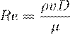
Donde es la densidad, la velocidad, el diámetro del vaso y la viscosidad. Mientras que en la aorta el flujo puede presentar transitorios de turbulencia durante la sístole ( ), en la microcirculación el flujo es predominantemente laminar y dominado por efectos viscosos ( ).
Además, el hematocrito (fracción volumétrica de glóbulos rojos, aprox. 40-45%) es el principal determinante de la viscosidad global y de la capacidad de transporte de oxígeno del sistema.
MECANISMOS DE CONTROL Y AUTORREGULACIÓN CARDIOVASCULAR
La homeostasis cardiovascular requiere una regulación multiescala que coordine el gasto cardíaco y la distribución regional del flujo en respuesta a las demandas metabólicas cambiantes.
Este control se ejerce a través de tres niveles integrados:
1 Regulación Neural (ANS): El sistema nervioso autónomo modula la frecuencia cardíaca (efecto cronotrópico) y la fuerza de contracción (efecto inotrópico) mediante la activación simpática y parasimpática (nervio vago). Los barorreceptores del arco aórtico y el seno carotídeo detectan desviaciones de la presión arterial e inician arcos reflejos para normalizarla.
2 Regulación Hormonal: El sistema renina-angiotensina-aldosterona constituye el eje principal de control a largo plazo de la presión arterial y el volumen sanguíneo, regulando la excreción renal de sodio y agua. Hormonas como la epinefrina mimetizan los efectos simpáticos, mientras que el péptido natriurético auricular promueve la hipotensión ante el estiramiento cardíaco.
3 Autorregulación Local: Los órganos vitales poseen la capacidad intrínseca de mantener un flujo constante a pesar de variaciones en la presión de perfusión mediante mecanismos miogénicos (contracción del músculo liso ante la distensión) y metabólicos (vasodilatación inducida por la acumulación de , y adenosina).
En conclusión, la fisiología del sistema circulatorio integra principios biofísicos de transferencia de carga y leyes de conservación de masa en una red dinámica que responde continuamente a estímulos internos y externos para preservar la estabilidad del medio interno.
6.6 Modelado de válvulas artificiales.
MODELADO DE VÁLVULAS ARTIFICIALES
El desarrollo de prótesis valvulares cardiacas constituye uno de los desafíos más rigurosos en la bioingeniería, exigiendo una integración precisa de la mecánica de fluidos pulsátiles, la ciencia de materiales avanzados y el modelado computacional de alta fidelidad.
Desde una perspectiva de ingeniería, las válvulas artificiales deben replicar la función de control de flujo unidireccional de las válvulas nativas, minimizando la resistencia al flujo anterógrado (gradiente de presión transvalvular) y asegurando un sellado hermético durante la diástole o sístole ventricular, según corresponda.
El modelado biomecánico se orienta a optimizar la hemodinámica para prevenir la trombogenicidad inducida por esfuerzos de cizalla elevados y zonas de estasis, así como a garantizar una longevidad estructural de entre 10 y 30 años, lo que implica resistir aproximadamente ciclos de carga y descarga.
CARACTERIZACIÓN Y CLASIFICACIÓN DE PRÓTESIS VALVULARES
Para fines de modelado y selección clínica, las válvulas artificiales se categorizan fundamentalmente en dos grupos: mecánicas y bioprotésicas.
Cada tipo presenta desafíos mecánicos distintos que deben ser abordados mediante simulaciones de interacción fluido-estructura (FSI) y análisis de elementos finitos (FEA).
· Válvulas Mecánicas: Fabricadas con materiales inertes y duraderos como el carbón pirolítico, aleaciones de cobalto-cromo (Stellite 21®) y titanio. Los diseños incluyen la jaula con bola (caged-ball), el disco basculante (tilting-disc) y el diseño bivalva (bileaflet). Su modelado se centra en la optimización de los perfiles de velocidad para reducir las turbulencias distales y el riesgo de tromboembolismo.
· Válvulas Bioprotésicas: Construidas con tejido biológico, frecuentemente válvulas porcinas o pericardio bovino fijados con glutaraldehído. El modelado en estos casos se enfoca en la distribución de tensiones en los folletos para mitigar la calcificación y el desgarro tisular, que suelen limitar su vida útil a unos 10 años.
· Válvulas Sintéticas: Representan una frontera de investigación donde se utilizan polímeros como el poliuretano para fabricar válvulas tri-foliares. El uso de FEA es crítico aquí para mimetizar la flexibilidad natural mientras se compensa la menor durabilidad intrínseca de los folletos poliméricos delgados.
Comparativa de Parámetros de Diseño en Válvulas Artificiales
|
Característica |
Válvulas Mecánicas |
Válvulas Bioprotésicas |
Válvulas Sintéticas (Poliméricas) |
|
Materiales Típicos |
Carbón pirolítico, Co-Cr, Titanio. |
Porcino, Pericardio bovino. |
Poliuretano, Dacron. |
|
Durabilidad |
Muy alta (>20 años). |
Limitada (~10 años por calcificación). |
En investigación; limitada por fatiga. |
|
Trombogenicidad |
Alta; requiere anticoagulación permanente. |
Baja; similar a la válvula nativa. |
Moderada; depende de la química superficial. |
|
Perfil de Flujo |
Obstrucción central o lateral significativa. |
Central, mimetiza el flujo fisiológico. |
Central, optimizable mediante geometría. |
MODELADO FÍSICO-MATEMÁTICO DE LA DINÁMICA VALVULAR
El análisis cinemático de la apertura y cierre valvular requiere considerar la válvula como una superficie móvil que interactúa con un fluido incompresible y, en primeras aproximaciones, no viscoso.
Un modelo común para la válvula aórtica es tratar los folletos como una superficie cónica deformable.
La conservación de la masa para el volumen de control cónico ( ) se define por:
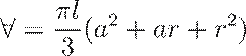
Donde representa el radio de la base (anillo valvular), el radio en la punta de los folletos y la longitud axial.
La dinámica de apertura es extremadamente rápida (20-30 ms), alcanzando velocidades pico de 1.35 ± 0.35 m/s en adultos sanos.
El modelado del gradiente de presión transvalvular ( ) emplea la ecuación de Bernoulli para flujo inestable, considerando la aceleración local del fluido:
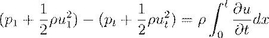
Este modelo permite predecir cómo la geometría de la prótesis afecta la carga de trabajo del ventrículo izquierdo, ya que cualquier estenosis funcional incrementa significativamente la post-carga miocárdica.
DINÁMICA DE CIERRE Y FENÓMENO DE CAVITACIÓN
Uno de los aspectos más críticos en el modelado de válvulas mecánicas es la fase de cierre.
Cuando el oclusor (disco o valvas) impacta contra el asiento de la válvula, se generan transitorios de presión positivos y negativos extremadamente elevados en fracciones de milisegundo.
Las investigaciones indican que las presiones negativas pueden descender por debajo de la presión de vapor del líquido, induciendo la formación de burbujas de cavitación.
El colapso violento de estas burbujas se ha vinculado directamente con:
1. Hemólisis y activación plaquetaria: Daño mecánico a los eritrocitos y plaquetas debido a las ondas de choque del colapso.
2. Erosión del material (Pitting): Micro-picaduras en las superficies de carbón pirolítico de la carcasa y el oclusor, lo que puede derivar en un fallo estructural catastrófico o en la liberación de partículas.
3. Ruidos mecánicos: Vibraciones audibles que pueden resultar molestas para el paciente y son indicadores del impacto de alta energía.
El modelado avanzado busca predecir el inicio de la cavitación correlacionando la velocidad del borde del folleto con los transitorios de presión medidos in vitro e in vivo.
Se ha observado que el uso de folletos flexibles, como los de polietileno de ultra alto peso molecular (UHMWPE), amortigua significativamente estos picos de presión y reduce el riesgo de cavitación en comparación con los discos rígidos de carbono.
ANÁLISIS COMPUTACIONAL MEDIANTE ELEMENTOS FINITOS (FEA) Y FSI
El diseño moderno de válvulas protésicas se apoya fuertemente en herramientas computacionales para evaluar la distribución de esfuerzos intramurales en los folletos. En las válvulas bioprotésicas y sintéticas, las regiones de máxima tensión suelen localizarse en las comisuras y en los puntos de unión con el stent de soporte.
Las simulaciones de interacción fluido-estructura (FSI) permiten visualizar perfiles de velocidad sesgados (skewed profiles), que son más realistas que los perfiles planos comúnmente asumidos en modelos simplificados.
Estos perfiles revelan la formación de vórtices en los senos de Valsalva, los cuales desempeñan un papel mecánico vital al empujar los folletos hacia el centro de la luz para facilitar un cierre rápido y eficiente antes de que comience el reflujo diastólico.
Mediante estas simulaciones, los ingenieros pueden rediseñar la curvatura de los folletos y la rigidez de los postes del stent para minimizar las concentraciones de estrés y maximizar la durabilidad funcional del implante.
6.7 Modelado de flujo considerando arterias deformables.
MODELADO DE FLUJO CONSIDERANDO ARTERIAS DEFORMABLES
El modelado hemodinámico avanzado en el sistema arterial requiere trascender la simplificación de los conductos rígidos industriales para abordar la naturaleza intrínsecamente viscoelástica y anisotrópica de los vasos biológicos.
Las arterias no operan como tuberías inertes, sino como estructuras multicapa compuestas por elastina, colágeno y músculo liso que se deforman dinámicamente en respuesta a las ondas de presión pulsátiles generadas por la eyección ventricular.
Desde una perspectiva de ingeniería, esta deformabilidad o compliancia es un parámetro funcional crítico que permite al árbol vascular actuar como un sistema de almacenamiento de energía elástica, suavizando los picos de presión sistólica y manteniendo el flujo anterógrado durante la diástole, fenómeno conocido como el efecto Windkessel.
El análisis riguroso de este comportamiento implica la resolución de problemas de Interacción Fluido-Estructura (FSI), donde el dominio del fluido y el dominio sólido están fuertemente acoplados: el flujo sanguíneo ejerce fuerzas de presión y cizalladura que deforman la pared, y esta deformación, a su vez, altera la geometría del lumen y el campo de velocidades resultante.
FUNDAMENTACIÓN FÍSICO-MATEMÁTICA DEL ACOPLAMIENTO FLUIDO-PARED
En el modelado de arterias deformables, las ecuaciones de Navier-Stokes para el fluido deben integrarse con las ecuaciones de la dinámica estructural de la pared arterial.
Dado que las paredes vasculares experimentan deformaciones finitas, se emplean a menudo formulaciones Arbitrary Lagrangian-Eulerian (ALE) para gestionar el movimiento de la malla computacional en la interfase fluido-sólido.
La respuesta mecánica de la pared se rige por leyes constitutivas que, en primera aproximación, pueden considerarse elásticas lineales (Ley de Hooke) para pequeñas perturbaciones, pero que en estados de carga fisiológica requieren modelos hiperelásticos no lineales para capturar el endurecimiento del tejido a altas presiones.
La relación entre la presión transmural ( ) y el estrés circunferencial ( ) en un vaso de base cilíndrica se aproxima mediante la ley de Laplace para tubos de pared delgada, asumiendo que el radio ( ) y el espesor ( ) varían con el tiempo:
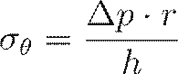
Asimismo, la compliancia o distensibilidad ( ) se define
matemáticamente como la derivada del volumen ( )
respecto a la presión ( ), reflejando la
capacidad del vaso para acomodar el volumen sistólico:
) se define
matemáticamente como la derivada del volumen ( )
respecto a la presión ( ), reflejando la
capacidad del vaso para acomodar el volumen sistólico:
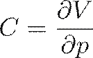
PROPAGACIÓN DE ONDAS Y LA FÓRMULA DE MOENS-KORTEWEG
Un hito fundamental en el modelado de arterias deformables es la caracterización de la velocidad de propagación de la onda de presión ( ), la cual es finita debido a la elasticidad de las paredes. En tubos elásticos de pared delgada llenos de un fluido incompresible e ideal, esta velocidad se determina mediante la ecuación de Moens-Korteweg:
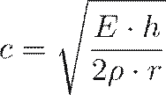
Donde:
·
 representa el módulo de Young o módulo de elasticidad de la pared
arterial.
representa el módulo de Young o módulo de elasticidad de la pared
arterial.
· es el espesor de la pared del vaso.
· es la densidad de la sangre (aprox. 1.056 g/cm³).
·
 es el radio interno de la arteria.
es el radio interno de la arteria.
Esta relación demuestra que a medida que las
arterias se vuelven más rígidas (aumento de  por
envejecimiento o patología), la velocidad de la onda de presión se incrementa,
lo que altera la sincronización de las ondas reflejadas y puede conducir a una
hipertensión sistólica aislada.
por
envejecimiento o patología), la velocidad de la onda de presión se incrementa,
lo que altera la sincronización de las ondas reflejadas y puede conducir a una
hipertensión sistólica aislada.
MODELADO UNIDIMENSIONAL (1-D) DEL ÁRBOL VASCULAR
Para aplicaciones de planificación quirúrgica y análisis sistémico, donde las simulaciones tridimensionales completas resultan computacionalmente prohibitivas, se recurre a modelos de transporte unidimensionales.
Estos modelos describen el flujo ( ) y la presión ( ) a lo largo del
eje del vaso ( ) integrando las
ecuaciones de Navier-Stokes sobre la sección transversal variable ( ). El sistema
resultante de ecuaciones diferenciales parciales acopladas se expresa como:
) a lo largo del
eje del vaso ( ) integrando las
ecuaciones de Navier-Stokes sobre la sección transversal variable ( ). El sistema
resultante de ecuaciones diferenciales parciales acopladas se expresa como:
Continuidad (Conservación de masa):
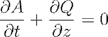
Momento (Conservación de momentum):
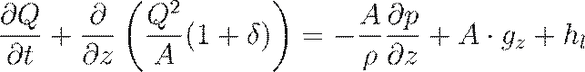
En estas ecuaciones, es un factor de corrección del perfil de velocidad y representa las pérdidas por fricción viscosa.
La clausura del sistema requiere una relación empírica que vincule el área de la sección transversal con la presión local, incorporando la viscoelasticidad de la pared mediante términos de amortiguamiento.
Comparativa de Enfoques de Modelado de Arterias Deformables
|
Modelo |
Dimensión |
Ventajas |
Limitaciones |
Aplicación Típica |
|
Windkessel (Lumped) |
0-D |
Simplicidad analítica, bajo costo computacional. |
No considera tiempos de viaje de onda ni reflexiones. |
Análisis global de la carga cardíaca. |
|
Modelado 1-D |
1-D |
Captura propagación de ondas y reflexiones en redes. |
Basado en promedios de sección; ignora flujos secundarios. |
Planificación de bypass y redes arteriales completas. |
|
FSI 3-D (CFD/FEM) |
3-D |
Detalle espacial completo, perfiles de velocidad reales. |
Alta demanda de recursos y tiempo de cómputo. |
Análisis de aneurismas, stents y estenosis focales. |
DESAFÍOS EN EL MODELADO AVANZADO
El modelado contemporáneo a nivel de doctorado debe enfrentar la complejidad de las arterias como materiales compuestos de varias capas (íntima, media y adventitia), cada una con propiedades mecánicas divergentes.
Investigaciones indican que el módulo de Young de la capa íntima-media puede ser un orden de magnitud superior al de la adventitia en estados de reposo, pero esta última proporciona una restricción crítica contra la sobre-expansión a presiones elevadas.
· Pulsatilidad y Número de Womersley ( ): La importancia de los efectos inerciales frente a los viscosos en vasos deformables se cuantifica mediante ; para valores inferiores a 2, el flujo se asemeja al perfil parabólico de Poiseuille, pero en grandes arterias (como la aorta), el perfil es plano (plug flow) con capas límite delgadas.
· Reflexión de Ondas: Las discontinuidades geométricas (bifurcaciones, estenosis) provocan reflexiones que pueden amplificar localmente la presión, un fenómeno que los modelos deben integrar para predecir correctamente el riesgo de ruptura en aneurismas.
· Reología no-Newtoniana: Aunque en grandes arterias el comportamiento de la sangre se aproxima al Newtoniano, en las zonas de deformación de pared cerca de estenosis, los efectos de cizalladura variable requieren el uso de modelos como el de Quemada o Casson para una simulación precisa.
En conclusión, el modelado de flujo en arterias deformables es un campo multidisciplinar donde la precisión predictiva depende de la correcta caracterización de la compliancia vascular y la resolución del acoplamiento dinámico entre la sangre y el tejido vivo.
7. Bibliografía
JOSEPH Hamill Biomechanical basis of human movement